Summary
This chunk introduces continuous-time sinusoidal signals, their amplitude, phase, radian frequency, cyclic frequency, period, and time-shift interpretation. It develops complex numbers, Euler’s identity, complex exponentials, phasors, and phasor addition as tools for simplifying sinusoidal analysis. It then presents spectrum representations for sums of sinusoids, two-sided spectra, conjugate symmetry, amplitude modulation, bandwidth, periodic waveforms, and Fourier series coefficients. The notes explain sampling continuous-time signals into discrete-time sequences, normalized discrete-time frequency, aliases, principal aliases, folded aliases, and the Shannon sampling theorem. Several sampling cases show proper sampling, under-sampling, DC aliasing, Nyquist-borderline sampling, folding, and reconstruction effects. The final pages introduce discrete-time systems and FIR filters, including running-average filters, causal versus noncausal implementations, difference equations, support of finite-length signals, and the general causal FIR filter equation.
This chunk develops discrete-time FIR filtering through the unit impulse sequence, impulse response, convolution, unit step signal, and block-diagram implementation. It explains linear time-invariant systems, including linearity, time invariance, convolution representation, cascaded LTI systems, and examples involving low-pass and high-pass FIR filters. The notes then introduce differential equations as models of changing systems, including classification by ordinary versus partial, order, linearity, general and particular solutions, initial value problems, direction fields, and physical modeling. First-order differential equations are treated through direct integration, integrating factors, separable equations, homogeneous/particular decomposition, and the linear-operator analogy with linear algebra. Second-order linear constant-coefficient ODEs are developed through system form, phase-plane interpretation, characteristic equations, repeated and complex roots, and non-homogeneous solution methods. The chunk closes by introducing continuous-time SISO LTI systems, their linearity, time invariance, causality, differential-equation form, and the Dirac delta distribution as the continuous-time impulse.
This chunk covers block diagram algebra for parallel subtraction, negative feedback, positive feedback, and movement of takeoff points and summing junctions across blocks. It works through several block diagram reduction examples, deriving equivalent transfer functions using series, parallel, and feedback reductions. The notes then introduce control systems as distinct from passive system analysis: instead of predicting output from a known input, control chooses an input so the output follows a desired reference. Open-loop inverse or feedforward control is described and then criticized because of model uncertainty, nonminimum-phase dynamics, instability, noncausality, and inability to reject disturbances. Feedback control is introduced through error correction, closed-loop transfer functions, reference tracking, disturbance rejection, and characteristic equations. The notes define steady-state error, system type for polynomial reference inputs, Routh-Hurwitz stability conditions for a cubic polynomial, and examples for step, ramp, and parabolic tracking. The chunk ends with PID control, explaining proportional, integral, and derivative actions and summarizing their qualitative effects on rise time, overshoot, settling time, and steady-state error.
Knowledge tree
- Continuous-Time Sinusoidal Signal Parameters (Page 1)
- Sinusoid Period, Frequency, and Time Shift (Page 2, Page 3)
- Sampling and Plotting Continuous Sinusoids (Page 3)
- Complex Numbers, Polar Form, and Euler Identity (Page 4, Page 5)
- Complex Exponential Signals (Page 5, Page 6)
- Phasors and Rotating Complex Vectors (Page 6, Page 7)
- Phasor Addition of Same-Frequency Cosines (Page 7)
- Spectrum Representation of Sums of Sinusoids (Page 8)
- Conjugate Symmetry and Line Spectra (Page 9)
- Sinusoidal Amplitude Modulation (Page 10)
- Product-to-Sum Method for Zero Crossings (Page 11)
- Periodic Signals and Harmonics (Page 12, Page 13)
- Fourier Series Coefficients and Line Spectra (Page 13, Page 14)
- Fourier Series Time Shift and Scaling (Page 15)
- Sampling Continuous-Time Signals into Discrete-Time Sequences (Page 16)
- Sampling Sinusoidal Signals (Page 17)
- Discrete-Time Aliases and Principal Frequency (Page 18, Page 19)
- Shannon Sampling Theorem and Ideal Reconstruction (Page 20, Page 23, Page 24)
- Spectrum View of Sampling and Reconstruction (Page 21, Page 22, Page 23)
- Folding Due to Under-Sampling (Page 24)
- Aliasing Problem Solving with Multiple Sinusoids (Page 25)
- Discrete-Time Systems and FIR Filters (Page 26)
- Running-Average FIR Filter (Page 27, Page 28)
- Causal and Noncausal Running-Average Filters (Page 28, Page 29)
- General Causal FIR Filter Equation (Page 29)
- Discrete Unit Impulse Sequence (Page 30, Page 31)
- Unit Impulse Response of an FIR Filter (Page 30, Page 31)
- Unit Delay System (Page 31, Page 34)
- Discrete Convolution Sum (Page 32, Page 33, Page 35, Page 38)
- Discrete Unit Step Signal (Page 32, Page 37)
- Properties of Convolution (Page 33)
- FIR Filter Implementation Blocks (Page 33, Page 34)
- Equivalent Representations of FIR Filters (Page 34, Page 35)
- Discrete-Time Linearity and Time Invariance (Page 35, Page 36)
- Low-Pass and High-Pass FIR Examples (Page 38, Page 39, Page 40)
- Cascaded Discrete-Time LTI Systems (Page 41, Page 42)
- Differential Equation Classification and Solutions (Page 43, Page 44, Page 45)
- Direction Fields and Physical Modeling (Page 45, Page 46)
- Initial Value Problems and Existence Questions (Page 45, Page 46, Page 47, Page 49)
- First-Order Linear Differential Equations (Page 47, Page 48, Page 49)
- Separable Differential Equations (Page 49, Page 50)
- Homogeneous and Particular Solutions as Affine Spaces (Page 51, Page 52, Page 53)
- Second-Order Linear Constant-Coefficient Equations (Page 54, Page 55)
- Mass-Spring-Damper Phase Plane (Page 56)
- Characteristic Equation and Root Cases (Page 57, Page 58, Page 59, Page 60)
- Non-Homogeneous Second-Order Equations (Page 61, Page 62)
- Continuous-Time LTI System Properties (Page 62, Page 63)
- Continuous-Time LTI Differential Equation Form (Page 64)
- Dirac Delta Distribution (Page 64)
- Parallel Subtraction in Block Diagrams (Page 98, Page 101)
- Standard Negative and Positive Feedback Transfer Functions (Page 98)
- Block Diagram Reduction Rules (Page 99)
- Worked Reduction with Inner Feedback and Parallel Feedforward (Page 99, Page 100)
- Worked Reduction with H1 H2 H3 Feedback Paths (Page 100, Page 101)
- Worked Reduction with Nested Feedback and Bypass Path (Page 101, Page 102)
- Reduction Example with Numeric Transfer Functions (Page 103)
- System Analysis Versus Control Theory (Page 103, Page 104)
- Open-Loop Inverse Control (Page 104)
- Limitations of Feedforward Control (Page 105)
- Feedback Control Loop Equations (Page 105, Page 106)
- Proportional Control and Large Loop Gain (Page 106)
- Closed-Loop Responses to Reference Disturbance and Sensor Noise (Page 107)
- Closed-Loop Characteristic Equation and Controller Design (Page 107)
- Reference Tracking and Steady-State Error (Page 108, Page 110)
- System Type for Reference Tracking (Page 110)
- Steady-State Error Examples for Step Ramp and Parabolic Inputs (Page 111)
- Routh Hurwitz Cubic Stability Condition (Page 109, Page 108)
- Disturbance Rejection (Page 112)
- PID Control Structure and Purpose (Page 112, Page 113)
- PID Effects on Step Response (Page 113)
Source material
Page 1
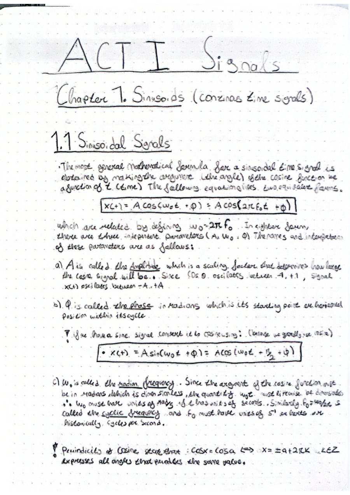
ACT I Signals
(Chapter 1. Sinusoids (continuous time signals))
1.1 Sinusoidal Signals
- The most general mathematical formula for a sinusoidal time signal is obtained by making the argument (the angle) of the cosine function be a function of t (time). The following equation is two-parameter form:
[boxed] x(t) = A cos(ω_0t + φ) = A cos(2πf_0t + φ)
which are related by defining ω_0 = 2πf_0. In either form, there are three important parameters (A, ω_0, φ). The names and interpretation of these parameters are as follows:
a) A is called the Amplitude which is a scaling factor that determines how large the cosine signal will be. Since cos θ oscillates between -1, +1, signal x(t) oscillates between -A, +A
b) φ is called the phase, in radians which is its starting point or horizontal position within its cycle.
! if we have a sine signal convert it to cosine-sine; (because we will use cos) [boxed] - x(t) = A sin(ω_0t + φ) = A cos(ω_0t + π/2 + φ)
c) ω_0 is called the radian frequency. Since the argument of the cosine function must be in radians which is dimensionless, the quantity ω_0t must likewise be dimensionless ∴ ω_0 must have units of rad/s if t has units of seconds. Similarly, f_0, which is called the cyclic frequency and f_0 must have units of s⁻^1 or hertz or historically cycles per second.
⋆ Periodicity of Cosine state that: cos x = cos a ⇔ x = ±a + 2πk, k ∈ Z
- Expresses all angles that reaches the same value.
Page 2
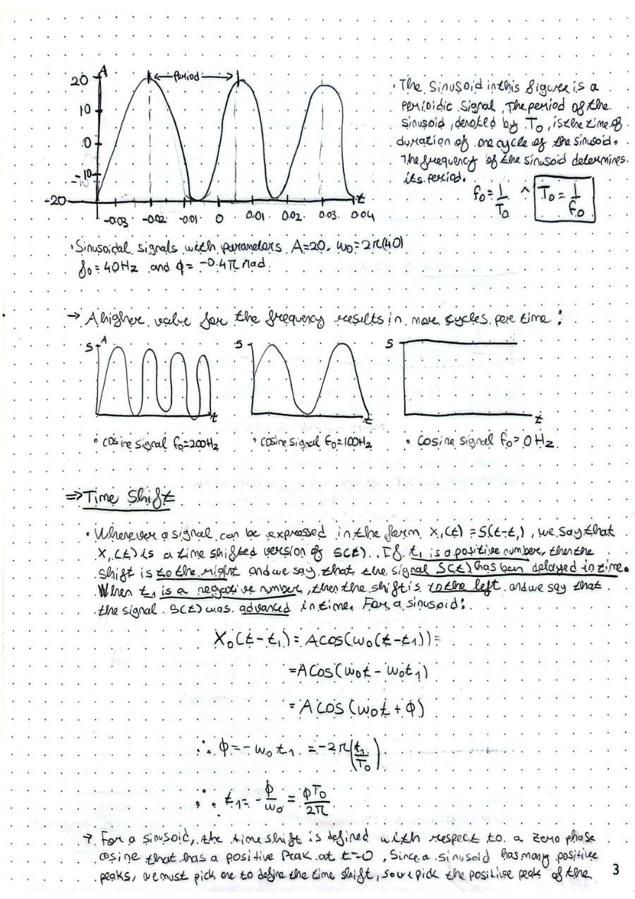
The sinusoid in this figure is a periodic signal. The period of the sinusoid, denoted by To, is the time duration of one cycle of the sinusoid. The frequency of the sinusoid determines its period:
f_0 = 1 / T_0 ; T_0 = 1 / f_0 [boxed]
[Diagram: Sinusoidal graph with vertical axis labeled A and horizontal axis labeled t. Vertical scale marks: 20, 10, 0, -10, -20. Time axis marks: -0.03, -0.02, -0.01, 0, 0.01, 0.02, 0.03, 0.04. A bracket above two positive peaks is labeled “Period”. The sinusoid has peaks near 20 and troughs near -20.]
Sinusoidal signals with parameters A = 20, w_0 = 2π(40), f_0 = 40Hz and φ = -0.4π rad.
⇒ A higher value for the frequency results in more cycles per time ;
[Three small graphs shown side by side.]
[Left graph: vertical axis labeled A, horizontal axis labeled t, amplitude marked 5. Fast cosine-like waveform with several cycles.] cosine signal f_0 = 200Hz
[Middle graph: vertical axis labeled A, horizontal axis labeled t, amplitude marked 5. Slower cosine-like waveform with fewer cycles.] cosine signal f_0 = 100Hz
[Right graph: vertical axis labeled A, horizontal axis labeled t, amplitude marked 5. Nearly constant horizontal line.] cosine signal f_0 = 0Hz.
⇒Time Shift
Whenever a signal can be expressed in the form x_1(t) = s(t-t_1), we say that x_1(t) is a time shifted version of s(t). If t_1 is a positive number, then the shift is to the right and we say that the signal s(t) has been delayed in time. When t_1 is a negative number, then the shift is to the left and we say that the signal s(t) was advanced in time. For a sinusoid:
x_0(t-t_1) = A cos(w_0(t-t_1)) =
= A cos(w_0t - w_0t_1)
= A cos(w_0t + φ)
∴ φ = -w_0t_1 = -2π(t_1/T_0)
∴ t_1 = -φ/w_0 = -φT_0/2π
For a sinusoid, the time shift is defined with respect to a zero phase cosine that has a positive peak at t=0. Since a sinusoid has many positive peaks, we must pick one to define the time shift, so we pick the positive peak of the
Page 3
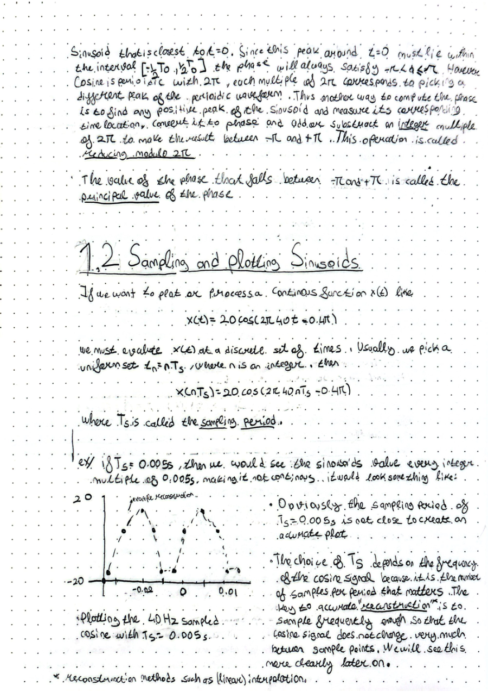
Sinusoid that is closest to t=0. Since this peak around t=0 must lie within the interval [-π, 0.2π] =? the phase will always satisfy -π < θ < π. However cosine is periodic with 2π, & each multiple of 2π corresponds to picking a different peak of the periodic waveform. Thus another way to compute the phase is to find any positive peak of the sinusoid and measure its corresponding time location, compute its t=0 phase and add or subtract an integer multiple of 2π to make the result between -π and +π. This operation is called reducing modulo 2π.
The value of the phase that falls between -π and +π is called the principal value of the phase.
7.2 Sampling and Plotting Sinusoids.
If we want to plot or process a continuous function x(t) like
x(t) = 20 cos(2π40t - 0.4π)
we must evaluate x(t) at a discrete set of times. Usually, we pick a uniform set tₙ = nTₛ, where n is an integer. then
x(nTₛ) = 20 cos(2π40nTₛ - 0.4π)
where Tₛ is called the sampling period.
ex: if Tₛ = 0.005s then we would see the sinusoid’s value every integer multiple of 0.005s, making it not continuous. It would look something like:
[graph: vertical axis labeled 20 at top and -20 near bottom; horizontal time axis with tick labels -0.02, 0, 0.01. Black sample dots connected by dashed “linear reconstruction” curve. Dots show sampled values of a 40 Hz cosine. Label near dashed curve: “linear reconstruction”. Caption below graph: “Plotting the 40Hz sampled cosine with Tₛ = 0.005s.“]
Obviously the sampling period of Tₛ = 0.005s is not close to create an accurate plot.
The choice of Tₛ depends on the frequency of the cosine signal because it is the number of samples per period that matters. The key to accurate “reconstruction” is to sample frequently enough so that the cosine signal does not change very much between sample points. We will see this more clearly later on.
- Reconstruction methods such as (linear) interpolation.
Page 4
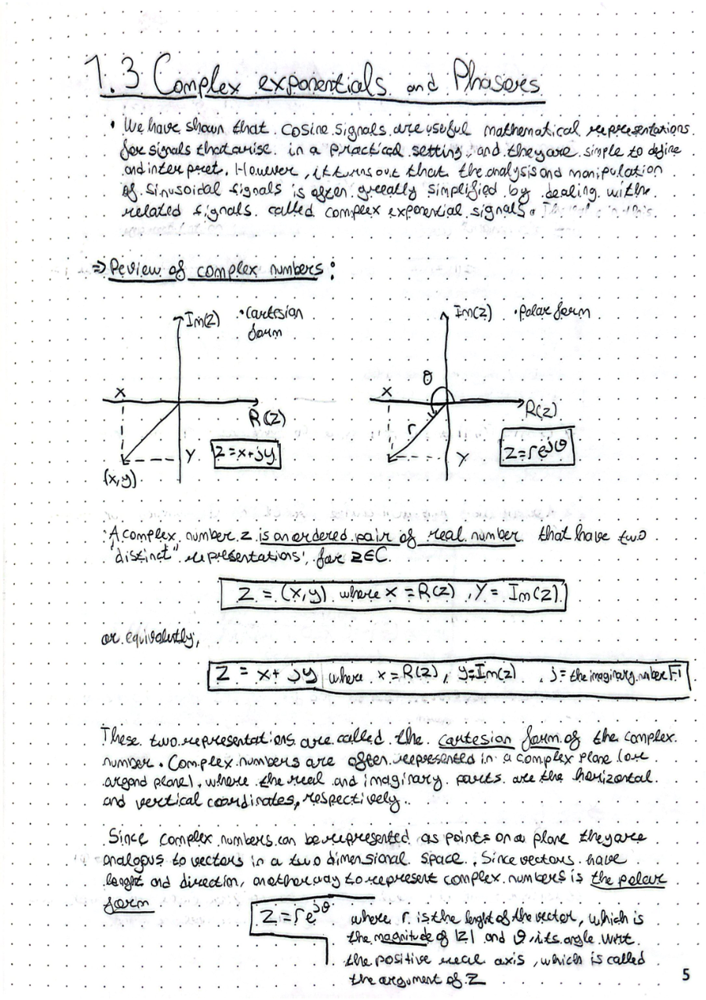
1.3 Complex exponentials and Phasors
- We have shown that cosine signals are useful mathematical representations for signals that arise in a practical setting; and they are simple to obtain and interpret. However, it turns out that the analysis and manipulation of sinusoidal signals is often greatly simplified by dealing with related signals called complex exponential signals.
Preview of complex numbers:
[Diagram: Cartesian form complex plane. Vertical axis labeled Im(z), horizontal axis labeled R(z). A point marked x on the negative real axis. A vector/line from the origin down-left to a point labeled (x,y). Dashed vertical line from x down to the point, and dashed horizontal line from the point to the y mark near the vertical axis. Label: “cartesian form”. Boxed equation: z = x + jy.]
[Diagram: Polar form complex plane. Vertical axis labeled Im(z), horizontal axis labeled R(z). A point marked x on the negative real axis. A vector/line from the origin down-left to a point. Dashed vertical line from x down to the point and dashed horizontal line to the y mark. The vector is labeled r. An angle arc at the origin is labeled θ. Label: “polar form”. Boxed equation: z = re^(jθ).]
A complex number z is an ordered pair of real number that have two distinct representations, for z ∈ C.
Z = (x,y) where x = R(z), y = Im(z)
or equivalently,
Z = x + jy where x = R(z), y = Im(z), j = the imaginary number √-1
These two representations are called the cartesian form of the complex number. Complex numbers are often represented in a complex plane (or argand plane), where the real and imaginary parts are the horizontal and vertical coordinates, respectively.
Since complex numbers can be represented as points on a plane they are analogous to vectors in a two dimensional space. Since vectors have length and direction, another way to represent complex numbers is the polar form.
Z = re^(jθ) where r is the length of the vector, which is the magnitude of |z| and θ is its angle with the positive real axis, which is called the argument of Z.
Page 5
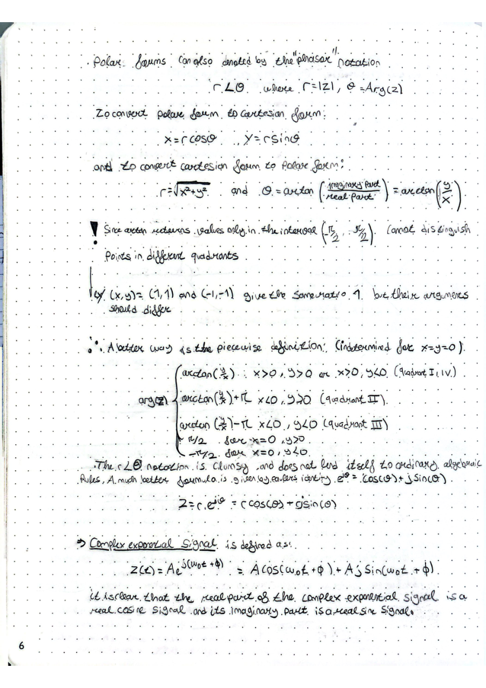
Polar form: forms can also denoted by the “phasor” notation
r∠θ where r=|z|, θ=Arg(z)
To convert polar form to cartesian form:
x = r cosθ, y = r sinθ
and to convert cartesian form to polar form:
r = √(x^2+y^2) and θ = arctan (imaginary part / real part) = arctan (y/x)
! Since arctan returns values only in the interval (-π/2, π/2) cannot distinguish points in different quadrants.
down eg. (x,y) = (1,1) and (-1,-1) give the same ratio 1, but their arguments should differ.
∴ A better way is the piecewise definition; (indetermined for x=y=0).
arg(z) { arctan(y/x) : x>0, y>0 or x>0, y<0 (quadrant I, IV) arctan(y/x)+π : x<0, y>0 (quadrant II) arctan(y/x)-π : x<0, y<0 (quadrant III) π/2 : for x=0, y>0 -π/2 : for x=0, y<0 }
The r∠θ notation is clumsy and does not lend itself to ordinary algebraic rules. A much better formula is given by Euler’s identity e^(jθ)=cos(θ)+j sin(θ).
z = r e^(jθ) = r cos(θ) + j r sin(θ).
→ Complex exponential Signal is defined as:
z(t) = A e^(j(ω0t+ϕ)) = A cos(ω0t+ϕ) + j A sin(ω0t+ϕ)
It is clear that the real part of the complex exponential signal is a real cosine signal and its imaginary part is a real sine signal.
Page 6
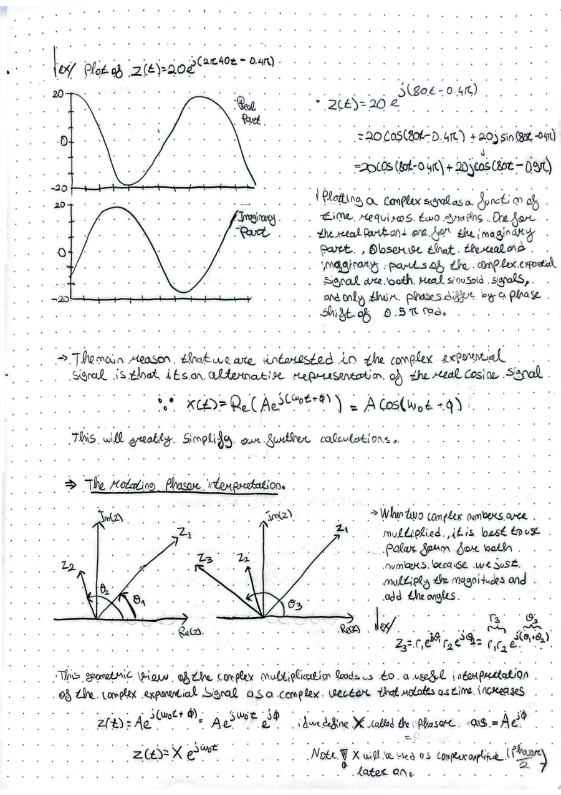
Ex. plot z(t)=20e^(j(80t-0.4π))
[Graph: top plot labeled “Real Part”. Vertical axis marked 20, 0, -20. Curve starts near +20, descends to about -20, rises to near +20, then descends toward -20.]
[Graph: bottom plot labeled “Imaginary Part”. Vertical axis marked 20, 0, -20. Curve starts below 0, rises to about +20, descends to about -20, then rises again.]
- z(t)=20e^(j(80t-0.4π))
=20cos(80t-0.4π)+20j sin(80t-0.4π)
=20cos(80t-0.4π)+20j cos(80t-0.9π)
Plotting a complex signal as a function of time requires two graphs. One for the real part and one for the imaginary part. Observe that the real and imaginary parts of the complex exponential signal are both real sinusoid signals, and they are phase shifted by a phase shift of 0.5π rad.
⇒ The main reason that we are interested in the complex exponential signal is that it is an alternative representation of the real cos/sin signal.
∴ x(t)=Re(Ae^j(ω_0t+ϕ)) = A cos(ω_0t+ϕ)
This will greatly simplify our further calculations.
⇒ The rotating phasor interpretation.
[Diagram: complex plane with vertical axis labeled Im(z) and horizontal axis labeled Re(z). Three vectors drawn from origin: z_1 in first quadrant with angle θ_1 from positive real axis; z_2 in second quadrant with angle θ_2; z_3 near negative real axis/second quadrant.]
[Diagram: second complex plane with vertical axis labeled Im(z) and horizontal axis labeled Re(z). Vectors z_1 and z_2 shown in first/second quadrants, and resultant z_3 shown in second quadrant. Angle θ_3 indicated from positive real axis.]
→ When two complex numbers are multiplied, it is best to use polar form for both numbers because we just multiply the magnitudes and add the angles.
i.e. z_3 = r_1e^jθ_1 r_2e^jθ_2 = r_1r_2e^j(θ_1+θ_2)
This geometric view of the complex multiplication leads us to a useful interpretation of the complex exponential signal as a complex vector that rotates as time increases
z(t)=Ae^j(ω_0t+ϕ) = Ae^jω_0t * e^jϕ defining X called the phasor as: X=Ae^jϕ
z(t)=X e^jω_0t
Note: X will be used as Complex amplitude (Phasor) later on.
Page 7
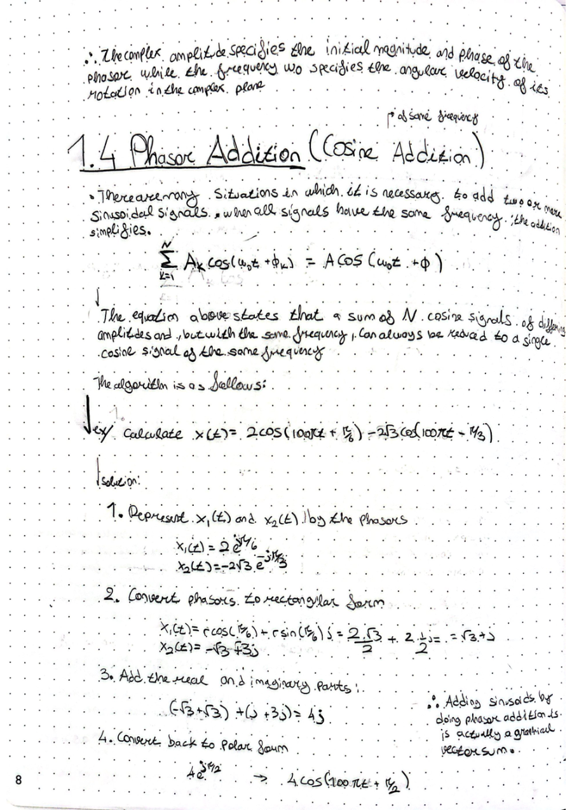
- The complex amplitude specifies the initial magnitude and phase of the phasor, while the frequency w0 specifies the angular velocity of its rotation in the complex plane
[arrow/label:] same frequency
1.4 Phasor Addition (Cosine Addition)
- There are many situations in which it is necessary to add two or more sinusoidal signals. When all signals have the same frequency, the addition simplifies.
[ \sum_{k=1}^{N} A_k \cos(\omega_0 t + \phi_k) = A \cos(\omega_0 t + \phi) ]
- The equation above states that a sum of N cosine signals of different amplitudes and, but with the same frequency, can always be reduced to a single cosine signal of the same frequency.
The algorithm is as follows:
[large downward arrow]
Ex: calculate (x(t)=2\cos(100\pi t+\frac{\pi}{6})-2\sqrt{3}\cos(100\pi t-\frac{\pi}{3}))
Solution:
- Represent (x_1(t)) and (x_2(t)) by the phasors
[ \tilde{x}_1(t)=2e^{j\pi/6} ]
[ \tilde{x}_2(t)=-2\sqrt{3}e^{-j\pi/3} ]
- Convert phasors to rectangular form
[ \tilde{x}_1(t)=r\cos(\frac{\pi}{6})+r\sin(\frac{\pi}{6})j =\frac{2\sqrt{3}}{2}+\frac{2}{2}j=-\sqrt{3}+j ]
[ \tilde{x}_2(t)=-\sqrt{3}+3j ]
- Add the real and imaginary parts
[ (-\sqrt{3}+\sqrt{3})+(j+3j)=4j ]
- Adding sinusoids by doing phasor addition is actually a graphical vector sum.
- Convert back to polar form
[ 4e^{j\pi/2} \quad \to \quad 4\cos(100\pi t+\frac{\pi}{2}) ]
8
Page 8
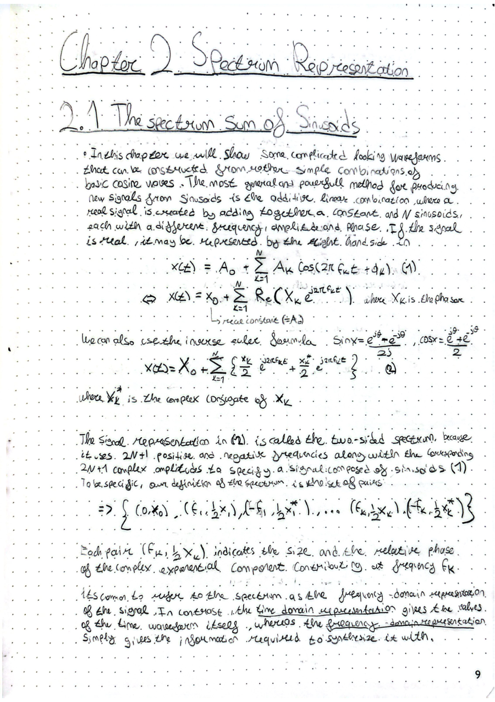
Chapter 2. Spectrum Representation
2.1 The spectrum Sum of Sinusoids
- In this chapter, we will show some complicated looking waveforms that can be constructed from other simple combinations of basic cosine waves. The most general and powerful method for producing new signals from sinusoids is the additive linear combination, where a real signal is created by adding together a constant and N sinusoids, each with a different frequency, amplitude and phase. If the signal is real, it may be represented by the left hand side in
x(t) = A_0 + sumₖ₌_1ᴺ Aₖ cos(2πFₖt + ϕₖ) (1)
⇔ x(t) = X_0 + sumₖ₌_1ᴺ Re(Xₖ eʲ^2πFₖt) where Xₖ is the phasor
[arrow/label under X_0:] real constant (= A_0)
We can also use the inverse Euler formula sin x = (eʲθ - e⁻ʲθ)/2j, cos x = (eʲθ + e⁻ʲθ)/2.
x(t) = X_0 + sumₖ₌_1ᴺ { Xₖ/2 eʲ^2πFₖt + Xₖ*/2 e⁻ʲ^2πFₖt } (2)
where Xₖ* is the complex conjugate of Xₖ
The signal representation in (2) is called the two-sided spectrum, because it uses 2N+1 positive and negative frequencies along with the corresponding 2N+1 complex amplitudes to specify a signal composed of sinusoids (1). To be specific, our definition of the spectrum is the set of pairs
⇒ { (0, X_0), (F_1, 1/2 X_1), (-F_1, 1/2 X_1*), …, (Fₖ, 1/2 Xₖ), (-Fₖ, 1/2 Xₖ*) }
Each pair (Fₖ, 1/2 Xₖ) indicates the size and the relative phase of the complex exponential component contributing at frequency Fₖ.
It’s common to refer to the spectrum as the frequency domain representation of the signal. In contrast, the time domain representation gives the values of the time waveform itself, whereas the frequency domain representation simply gives the information required to synthesize it with.
Page 9
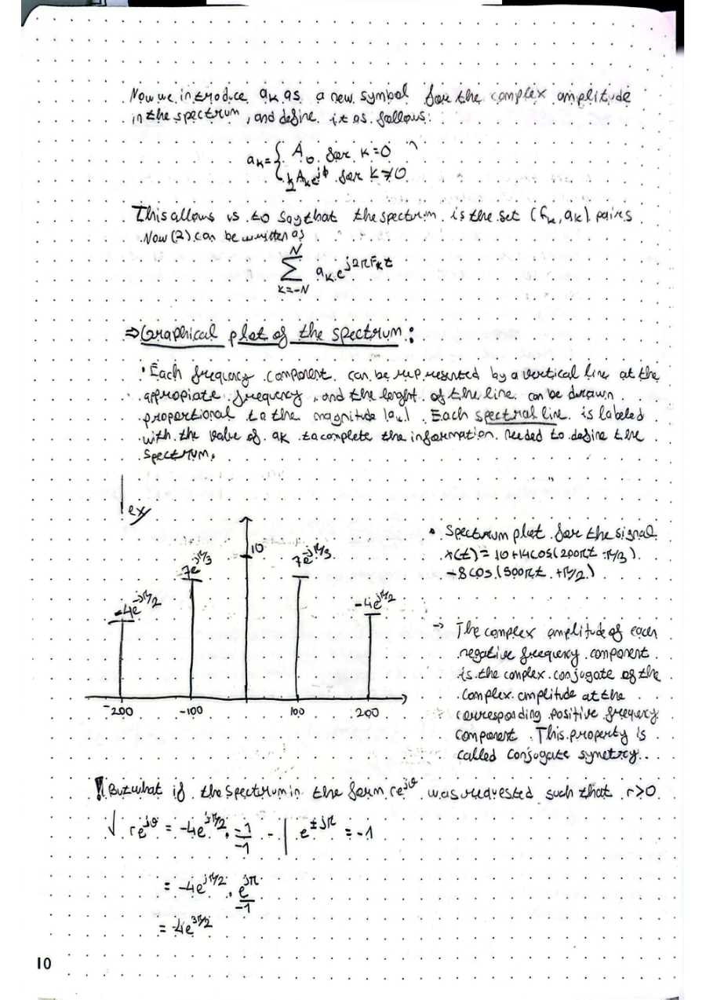
Now we introduce ak as a new symbol for the complex amplitude in the spectrum, and define it as follows:
{ A0, for k = 0
ak = {
{ 1/2 Ake^(jθk), for k != 0.
This allows us to say that the spectrum is the set (fk, ak) pairs. Now (2) can be written as
N
sum ak e^(j2πfkt)
k=-N
⇒ Graphical plot of the spectrum:
Each frequency component can be represented by a vertical line at the appropriate frequency, and the length of the line can be drawn proportional to the magnitude |ak|. Each spectral line is labeled with the value of ak to complete the information needed to define the spectrum.
ex)
[Graph: horizontal frequency axis with vertical spectral lines at -200, -100, 0, 100, 200. A vertical axis is drawn at 0. The center line at 0 has height labeled 10. Line at -200 labeled -4e^(-jπ/2). Line at -100 labeled 7e^(-jπ/3). Line at 100 labeled 7e^(jπ/3). Line at 200 labeled -4e^(jπ/2). Tick labels under the axis: -200, -100, 100, 200.]
- Spectrum plot for the signal x(t) = 10 + 14 cos(200πt + π/3) - 8 cos(500πt + π/2).
⇒ The complex amplitude of each negative frequency component is the complex conjugate of the complex amplitude at the corresponding positive frequency component. This property is called conjugate symmetry.
!! But what if the spectrum in the form re^jθ was requested such that r > 0.
∴ re^(jθ) = -4e^(-jπ/2); -1/-1 * e^(jπ) = -4e^(jπ/2) * e^(jπ) = 4e^(j3π/2)
Page 10
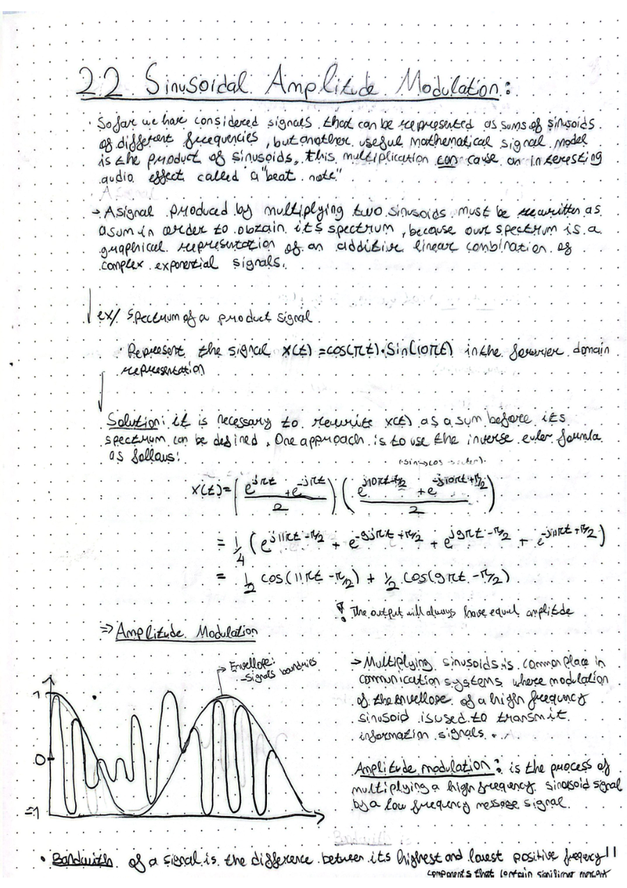
2.2 Sinusoidal Amplitude Modulation:
- Sofar we have considered signals that can be represented as sums of sinusoids of different frequencies, but another useful mathematical signal model is the product of sinusoids. this multiplication can cause an interesting audio effect called a “beat note”.
→ A signal produced by multiplying two sinusoids must be rewritten as a sum in order to obtain its spectrum, because our spectrum is a graphical representation of an additive linear combination of complex exponential signals.
| ex/ spectrum of a product signal.
Represent the signal x(t) = cos(πt) sin(10πt) in the fourier domain representation.
Solution: it is necessary to rewrite x(t) as a sum before its spectrum can be defined. One approach is to use the inverse euler formula as follows:
x(t) = ( e^(jπt) + e^(-jπt) / 2 ) ( e^(j10πt+π/2) + e^(-j10πt+π/2) / 2 )
= 1/4 ( e^(j11πt+π/2) + e^(j9πt+π/2) + e^(-j9πt-π/2) + e^(-j11πt-π/2) )
= 1/2 cos(11πt - π/2) + 1/2 cos(9πt - π/2)
[small note with arrow:] The output will always have equal amplitude
⇒ Amplitude Modulation
[Diagram: graph with vertical axis arrow upward and horizontal axis arrow right. The vertical axis is labeled 1 near the top, 0 in the middle, and -1 near the bottom. A high-frequency sinusoid oscillates inside a larger smooth envelope curve. The envelope is labeled “Envelope: signal’s boundaries”.]
→ Multiplying sinusoids is commonplace in communication systems where modulation of the envelope of a high frequency sinusoid is used to transmit information signals.
Amplitude modulation: is the process of multiplying a high frequency sinusoid signal by a low frequency message signal.
- Bandwidth of a signal is the difference between its highest and lowest positive frequency components that contain significant energy.
Page 11
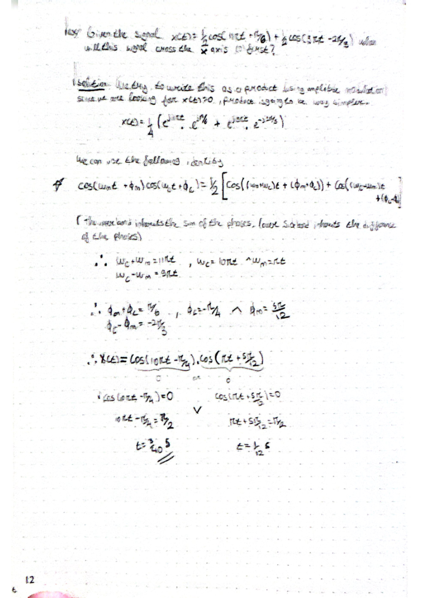
hey given the signal x(t)= 1/2 cos(10πt - π/3) + 1/2 cos(5πt - 2π/3) when will its smart cross the x axis to boot?
Solution We can squite this as a product, using amplitude modulation. since we are looking for x(t)=0 product might be very simple.
x(t) = 1/2 ( e^(j10πt) * e^(-jπ/3) + e^(j5πt) * e^(-j2π/3) )
we can use the following identity:
- cos(ωmt + φm) cos(ωct + φc) = 1/2 [ cos((ωm+ωc)t + (φm+φc)) + cos((ωc-ωm)t + (φc-φm)) ]
(To make x(t) contains the sum of the phases, lower should indicate the difference of the phases)
-
ωc + ωm = 15πt , ωc = 10πt ^ ωm = 5πt ωc - ωm = 5πt
-
φm + φc = π/6 , φc = -π/4 ^ φm = 5π/12 φc - φm = -2π/3
∴ x(t) = cos(10πt - π/4) * cos(5πt + 5π/12)
[underbrace/brace labels under first factor: 0] [underbrace/brace labels under second factor: 0]
cos(10πt - π/4) = 0 V cos(5πt + 5π/12) = 0
10πt - π/4 = π/2 5πt + 5π/12 = π/2
t = 3/40 s t = 1/12 s
12
Page 12
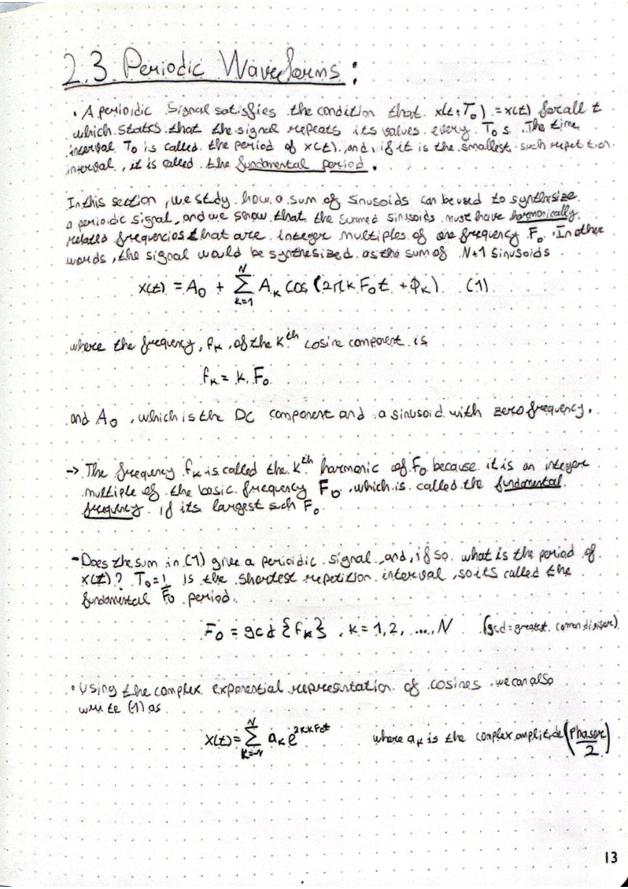
2.3 Periodic Waveforms:
- A periodic signal satisfies the condition that x(t+To) = x(t) for all t which states that the signal repeats its values every To s. The time interval To is called the period of x(t), and if it is the smallest such repetition interval, it is called the fundamental period.
In this section, we study how a sum of sinusoids can be used to synthesize a periodic signal, and we saw, that the sumed sinusoids must have harmonically related frequencies that are integer multiples of one frequency Fo. In other words, the signal would be synthesized as the sum of N+1 sinusoids
x(t) = Ao + Σ Ak cos (2π k Fo t + ϕk) (1)
k=1
N
where the frequency, fk, of the kth cosine component is
fk = k Fo.
and Ao, which is the DC component and a sinusoid with zero frequency.
→ The frequency fk is called the kth harmonic of Fo because it is an integer multiple of the basic frequency Fo which is called the fundamental frequency if its largest such Fo.
-
Does the sum in (1) give a periodic signal, and if so, what is the period of x(t)? To = 1/Fo is the shortest repetition interval, so its called the fundamental period.
Fo = gcd { fk } , k = 1,2,.....,N (gcd: greatest common divisor) -
Using the complex exponential representation of cosines, we can also write (1) as,
x(t) = Σ ak e^(j2πkFot) where ak is the complex amplitude (phasor) k=-N N 2
13
Page 13
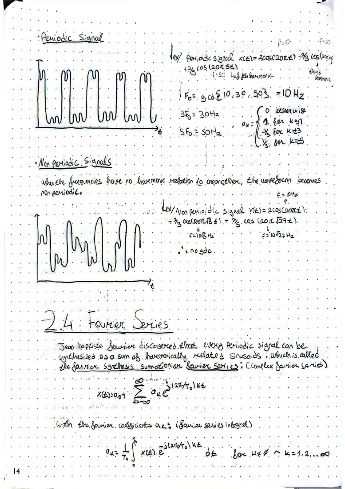
Periodic Signal
[Diagram: graph of a periodic waveform versus time. Horizontal axis labeled t with arrow to the right. Vertical axis at left. The waveform repeats regularly: tall rectangular-like pulses with rounded tops, followed by smaller oscillations near the baseline before the next tall pulse.]
ex/ periodic signal x(t) = 2 cos(20πt) - ⅓ cos(60πt)
- ⅕ cos(100πt) [big harmonic]
f = 10 f = 30 [first harmonic]
Fo = gcd {10, 30, 50} = 10 Hz
3Fo = 30 Hz
5Fo = 50 Hz
{ 0 otherwise 2 for k = ±1 -⅓ for k = ±3 ⅕ for k = ±5 }
Non Periodic Signals
When the frequencies have no harmonic relation to one another, the waveform becomes non periodic.
[Diagram: graph of a nonperiodic waveform versus time. Horizontal axis labeled t with arrow to the right. Vertical axis at left. The waveform is irregular, with uneven peaks and valleys that do not repeat consistently.]
ex/ Non periodic signal x(t) = 2 cos(20πt)
- ⅓ cos(20π√8 t) + ⅕ cos(20π√57 t)
f = 10√8 Hz f = 10√57 Hz f = 10 Hz up f = 10 Hz
- no gcd.
2.4 Fourier Series
Jean Baptiste Fourier discovered that every periodic signal can be synthesized as a sum of harmonically related sinusoids which is called the Fourier synthesis, summation or Fourier Series. (Complex Fourier series)
x(t) = a_0 + sum∞ k=∞ aₖ eʲ(2π/T_0)kt
with the Fourier coefficients aₖ: (Fourier series integral)
aₖ = 1/T_0 ∫ᵀ_0 x(t) e⁻ʲ(2π/T_0)kt dt for k!=0 ∧ k = 1,2, … ∞
Page 14
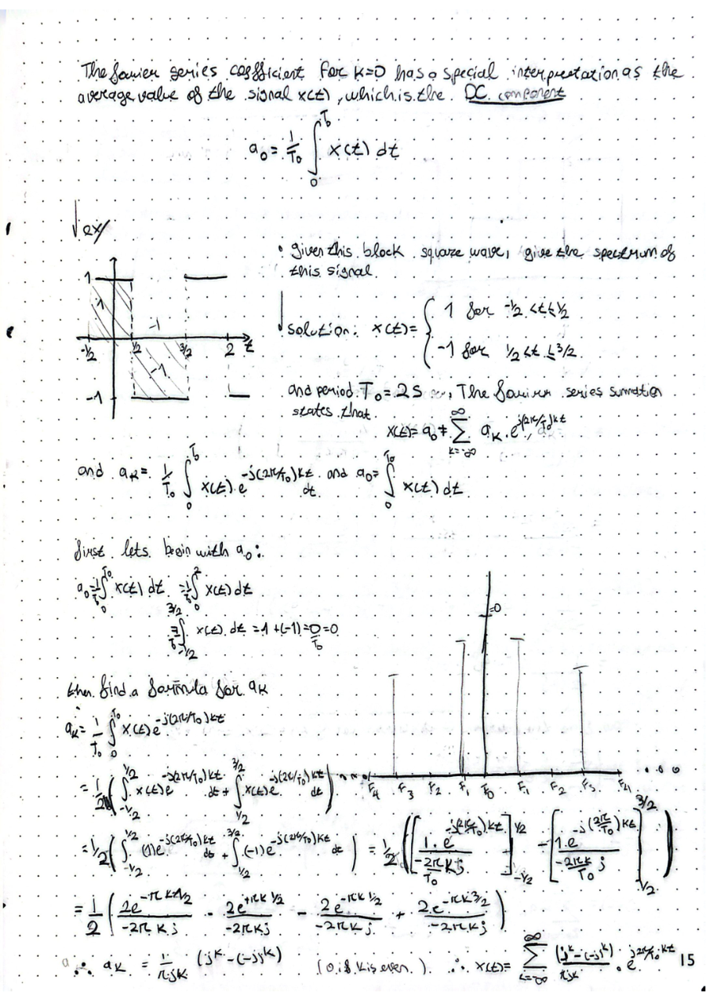
The Fourier series coefficient for k=0 has a special interpretation as the average value of the signal x(t), which is the DC component
a_0 = 1/T_0 ∫_0ᵀ^0 x(t) dt
[Diagram: square wave x(t) plotted versus t. Vertical axis labeled x(t), horizontal axis labeled t. The waveform is +1 from t = -1/2 to t = 1/2, then -1 from t = 1/2 to t = 3/2, then +1 from t = 3/2 to t = 2. The levels +1 and -1 are marked on the vertical axis. The x-axis tick labels include -1/2, 1/2, 3/2, 2. A shaded/hatched rectangular region covers the positive portion between -1/2 and 1/2 and the negative portion between 1/2 and 3/2. A dashed sloping line appears inside the hatched region.]
given this block square wave, give line spectrum of this signal
solution: x(t) = { 1 for -1/2 < t < 1/2 -1 for 1/2 < t < 3/2
and period T_0 = 2s ~ The fourier series summation states that
x(t) = a_0 + sumₖ₌₋∞^∞ aₖ * eʲ^2πᶠ^0ᵏᵗ
and aₖ = 1/T_0 ∫_0ᵀ^0 x(t)e⁻ʲ(2π/T_0)kt dt, and a_0 = 1/T_0 ∫_0ᵀ^0 x(t) dt.
first, lets begin with a_0:
a_0 = 1/2 ∫_0^2 x(t)dt. = 1/2 ∫_0^3ᐟ^2 x(t)dt = 1/2 ∫₋^1ᐟ^23ᐟ^2 x(t)dt = 1/2 [1 + (-1)] = 0 ∴ a_0 = 0.
then find a formula for aₖ
aₖ = 1/T_0 ∫_0ᵀ^0 x(t)e⁻ʲ(2π/T_0)kt dt
= 1/2 ( ∫₋^1ᐟ^21ᐟ^2 x(t)e⁻ʲ(2π/T_0)kt dt + ∫_1ᐟ^23ᐟ^2 x(t)e⁻ʲ(2π/T_0)kt dt )
= 1/2 ( ∫₋^1ᐟ^21ᐟ^2 (1)e⁻ʲ(2π/T_0)kt dt + ∫_1ᐟ^23ᐟ^2 (-1)e⁻ʲ(2π/T_0)kt dt )
= 1/2 ( [ 1 * e⁻ʲ(2π/T_0)kt / (-2πk/T_0)j ]₋^1ᐟ^21ᐟ^2 - [ 1 * e⁻ʲ(2π/T_0)kt / (-2πk/T_0)j ]_1ᐟ^23ᐟ^2 )
= 1/2 ( 2e⁻ʲπk/2 / -2πkj - 2eʲπk/2 / -2πkj - 2e⁻ʲπk3/2 / -2πkj + 2e⁻ʲπk/2 / -2πkj )
aₖ = 1/(πjk) (eʲπk - (-j)ᵏ)
[Graph: line spectrum with horizontal frequency axis labeled f and vertical stems at negative and positive harmonics. Center stem labeled f_0 with amplitude 0. Stems are labeled f₋_4, f₋_3, f₋_2, f₋_1, f_0, f_1, f_2, f_3, f_4. Tallest stems appear at f₋_1 and f_1, with smaller stems farther away. A small “0” is marked near the top of the center axis.]
[0 if k is even.]
∴ x(t) = sumₖ₌₋∞^∞ ((1ᵏ - (-j)ᵏ)/(πjk)) * eʲ^2πf
Page 15
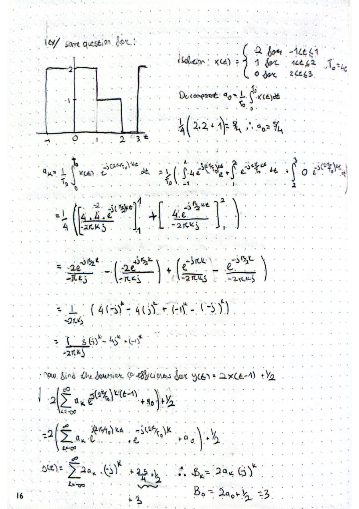
10/ some question, page:
[Diagram: rectangular periodic-looking graph of x(t) versus t. Horizontal axis labeled t with marks -1, 0, 1, 2, 3. Vertical axis has levels 1 and 2. The signal is 2 from t = -1 to t = 1, then 1 from t = 1 to t = 2, then 0 from t = 2 to t = 3, with a jump back up to 2 at t = 3.]
Solution: x(t) = { 2 for -1 ⇐ t ⇐ 1 1 for 1 ⇐ t ⇐ 2 0 for 2 ⇐ t ⇐ 3 T_0 = 4
DC component a_0 = 1/T_0 ∫_0ᵀ^0 x(t)dt
= 1/4 (2*2 + 1) = 5/4 ∴ a_0 = 5/4
aₖ = 1/T_0 ∫_0ᵀ^0 x(t)e^(-j(2π/T_0)kt) dt
= 1/T_0 ( ∫₋_1^1 4e^(-j(2π/T_0)kt) dt + ∫_1^2 e^(-j(2π/T_0)kt) dt + ∫_2^3 0 e^(-j(2π/T_0)kt) dt )
= 1/4 ( [ 44e^(-j(π/2)kt) / -2πkj ]₋_1^1 + [ 4e^(-j(π/2)kt) / -2πkj ]_1^2 )
= 2e^(-jπ/2 k) / -jπkj - ( 2e^(+jπ/2 k) / -πkj )
- ( e^(-jπk) / -2πkj - e^(-jπ/2 k) / -2πkj )
= 1 / -2πkj ( 4(-j)ᵏ - 4(j)ᵏ + (-1)ᵏ - (-j)ᵏ )
= 1 / -2πkj ( 3(j)ᵏ - 4jᵏ + (-1)ᵏ )
Now since the fourier coefficients for y(t) = 2x(t-1) + 1/2
= 2 ( sumₖ₌₋∞^∞ aₖ e^(j(2π/T_0)k(t-1)) + a_0 ) + 1/2
= 2 ( sumₖ₌₋∞^∞ aₖ e^(j(2π/T_0)kt) * e^(-j(2π/T_0)k) + a_0 ) + 1/2
y(t) = sumₖ₌₋∞^∞ 2aₖ(-j)ᵏ + 2*5/4 + 1/2 [underbrace] + 3
∴ Bₖ = 2aₖ(-j)ᵏ
B_0 = 2a_0 + 1/2 = 3
16
Page 16
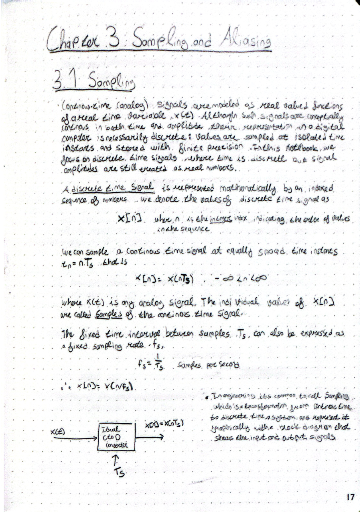
Chapter 3: Sampling and Aliasing
3.1 Sampling
Continuous-time (analog) signals are modeled as real valued functions of a real time variable, x(t). Although such signals are important actors in both time and amplitude, their representation on a digital computer is necessarily discrete: values are sampled at isolated time instants and stored with finite precision. In this notebook, we focus on discrete time signals, where time is discrete but signal amplitudes are still treated as real numbers.
A discrete time signal is represented mathematically by an indexed sequence of numbers. We denote the values of discrete time signal as
x[n] where n is the integer index indicating the order of values
in the sequence.
We can sample a continuous time signal at equally spaced time instants tₙ = nTₛ, that is
x[n] = x(nTₛ) -∞ < n < ∞
where x(t) is any analog signal. The individual values of x[n] are called samples of the continuous time signal.
The fixed time interval between samples, Tₛ, can also be expressed as a fixed sampling rate, fₛ.
fₛ = 1/Tₛ samples per second
∴ x[n] = x(n/fₛ)
[Diagram: a block diagram showing input signal “x(t)” entering an “ideal C-to-D converter” block from the left. An arrow labeled “Tₛ” points upward into the bottom of the converter block. The output arrow to the right is labeled “x[n] = x(nTₛ)”.]
- In engineering, its common to call sampling which is a transformation from continuous time to discrete time a system and represent it graphically with a block diagram that shows the input and output signals.
17
Page 17
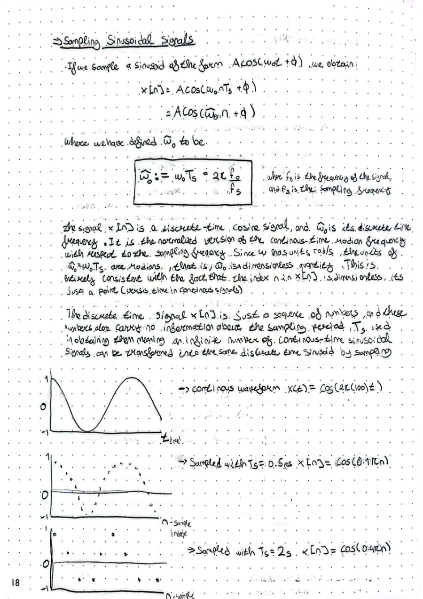
⇒ Sampling Sinusoidal signals
If we sample a sinusoid of the form A cos(ω_0t + Φ), we obtain:
x[n] = A cos(ω_0 nTₛ + Φ)
= A cos(ω̂_0 n + Φ)
where we have defined ω̂_0 to be:
[boxed]
ω̂_0 := ω_0Tₛ = 2π f_0 / fₛ
[/boxed]
where f_0 is the frequency of the signal
and fₛ is the sampling frequency
The signal x[n] is a discrete-time cosine signal, and ω̂_0 is its discrete time frequency. It is the normalized version of the continuous-time radian frequency with respect to the sampling frequency. Since ω_0 has units rad/s, the units of ω̂_0 = ω_0Tₛ are radians, rather it is as dimensionless quantity. This is entirely consistent with the fact that the index n in x[n] is dimensionless, its just a point (versus time in continuous signals)
The discrete time signal x[n] is just a sequence of numbers, and these numbers also carry no information about the sampling period Tₛ used in obtaining them meaning an infinite number of continuous-time sinusoidal signals can be transformed into the same discrete time sinusoid by sampling
[graph: continuous sinusoidal waveform plotted versus time. Vertical axis marked 1, 0, -1; horizontal axis labeled time.]
→ continuous waveform x(t) = cos(2π(100)t)
[graph: sampled points of a sinusoid plotted versus sample index. Vertical axis marked 1, 0, -1; horizontal axis labeled n : sample index. Points show oscillation.]
→ Sampled with Tₛ = 0.5ms x[n] = cos(0.1πn)
[graph: sampled points plotted versus sample index. Vertical axis marked 1, 0, -1; horizontal axis labeled n: sample. Points appear scattered/aliased.]
→ Sampled with Tₛ = 2s, x[n] = cos(0.4πn)
Page 18
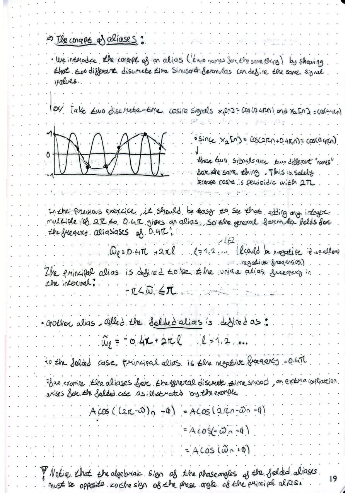
⇒ The concept of aliases
- We introduce the concept of an alias (two names for the same thing) by showing that two different discrete time sinusoid formulas can define the same signal values.
ex/ Take two discrete-time cosine signals x_1[n] = cos(0.4πn) and x_2[n] = cos(2.4πn)
[Diagram: plotted cosine waves on axes labeled 1, 0, -1. Two continuous-looking curves are drawn: a slower cosine and a faster cosine. Black dots mark discrete sample values, showing both formulas pass through the same sample points.]
-
Since x_2[n] = cos(2πn + 0.4πn) = cos(0.4πn) down these two signals are two different names for the same thing. This is solely because cosine is periodic with 2π.
-
In the previous exercise, it should be easy to see that adding any integer multiple of 2π to 0.4π gives an alias, so the general formula holds for the freq. aliases of 0.4π:
ω̂ₗ = 0.4π + 2πl l = 1, 2, … (l could be negative if we allow negative frequencies)
The principal alias is defined to be the unique alias frequency in the interval
-π < ω̂ ⇐ π
- another alias, called the folded alias is defined as:
ω̂ₗᶠ = -0.4π + 2πl l = 1, 2, …
io the folded case, principal alias is the negative frequency -0.4π.
The reason the aliases for the general discrete time sinusoid an extra complication arises for the folded case, as illustrated by the example.
A cos((2π - ω̂)n - ϕ) = A cos(2πn - ω̂n - ϕ)
= A cos(-ω̂n - ϕ)
= A cos(ω̂n + ϕ)
▽ Note that the algebraic sign of the phase angle of the folded aliases must be opposite to the sign of the phase angle of the principal alias.
Page 19
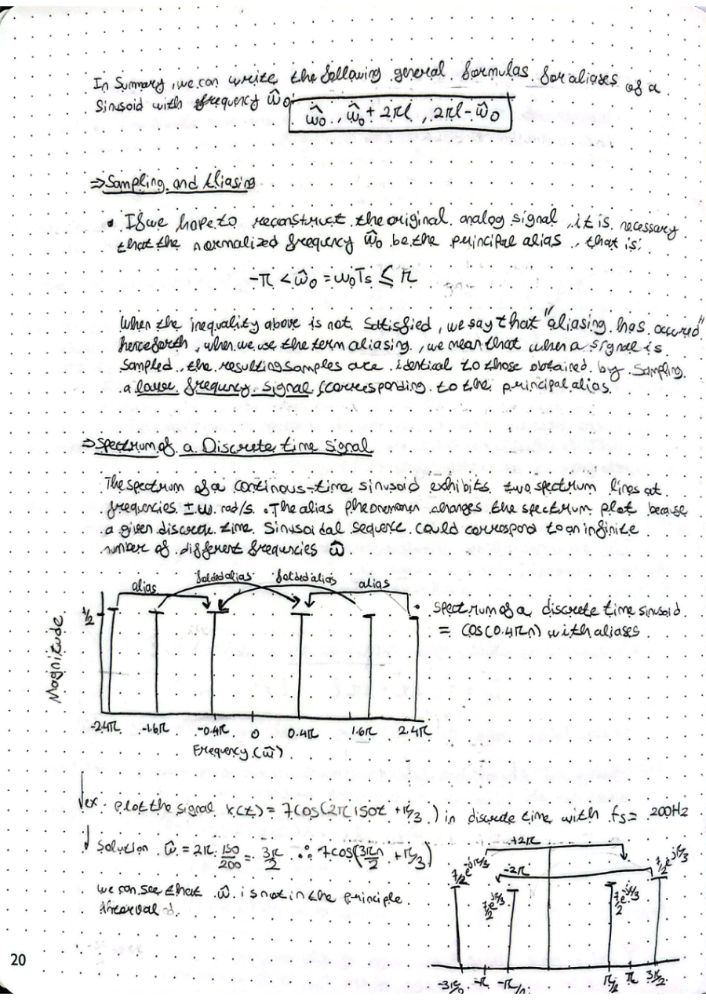
In summary, we can write the following general formulas for aliases of a sinusoid with frequency ω_0:
[boxed] \hat{ω}_0, \hat{ω}_0 + 2πl, 2πl - \hat{ω}_0 [/boxed]
⇒ Sampling and Aliasing
- If we hope to reconstruct the original analog signal, it is necessary that the normalized frequency \hat{ω}_0 be the principal alias, that is,
-π < \hat{ω}_0 = ω_0Tₛ ⇐ π
When the inequality above is not satisfied, we say that aliasing has occurred, henceforth, whenever we use the term aliasing, we mean that when a signal is sampled, the resulting samples are identical to those obtained by sampling a lower frequency signal corresponding to the principal alias.
⇒ Spectrum of a Discrete time Signal
The spectrum of a continuous-time sinusoid exhibits two spectrum lines at frequencies ±ω rad/s. The alias phenomenon changes the spectrum plot because a given discrete time sinusoidal sequence could correspond to an infinite number of different frequencies \hat{ω}.
[diagram: spectrum plot of a discrete-time sinusoid. Vertical axis labeled “Magnitude”; horizontal axis labeled “Frequency (\hat{ω})“. Tick labels include -2.4π, -1.6π, -0.4π, 0, 0.4π, 1.6π, 2.4π. Several vertical spectral lines of height about 1/2 repeat periodically. Curved arrows above the lines labeled “alias”, “folded alias”, “folded alias”, and “alias” indicate aliases folding toward principal frequencies near ±0.4π.]
Spectrum of a discrete time sinusoid = cos(0.4πn) with aliases
Ex: Plot the signal x(t) = 7 cos(2π(150t + 1/3)) in discrete time with fₛ = 200Hz
Solution: \hat{ω}_0 = 2π * 150/200 = 3π/2, so 7cos(3πn/2 + π/3)
we can see that \hat{ω}_0 is not in the principle interval
[diagram: discrete-time spectrum/alias plot. Horizontal axis marked with ticks approximately -3π/2, -π, -π/2, π/2, π, 3π/2. Vertical spectral arrows are drawn at several alias frequencies with labels including (7/2)e^{jπ/3} and (7/2)e^{-jπ/3}. Brackets/arrows above indicate wrapping by -2π and +2π to bring aliases into the principal interval.]
Page 20
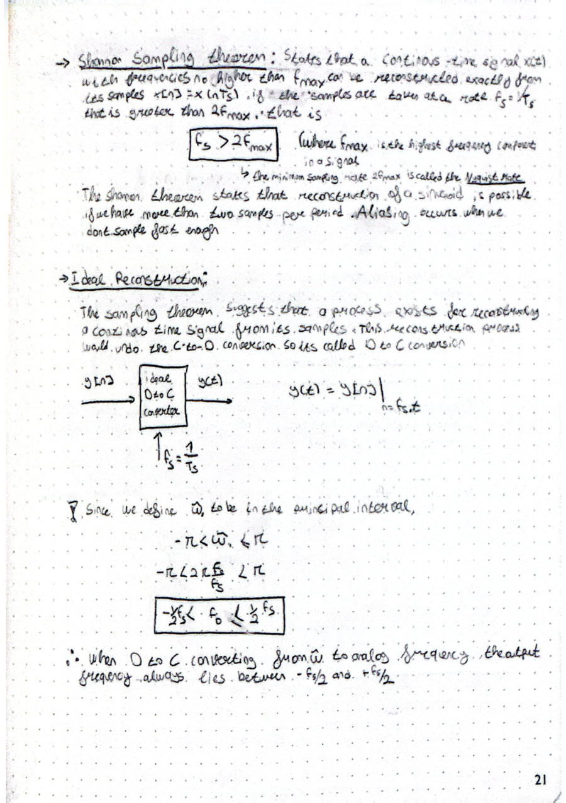
→ Shannon Sampling theorem: States that, a continuous time signal will use in process, or higher than fmax can be represented exactly by use samples x[n] = x(nTs) if the samples are taken at a rate fs = 1/Ts that is greater than 2fmax; that is
┌─────────────┐
│ fs > 2fmax │
└─────────────┘
(Where fmax is the highest frequency component in a signal)
→ The minimum sampling rate 2fmax is called the Nyquist Rate
The Shannon theorem states that reconstruction of a sinusoid is possible if we have more than two samples per period. Aliasing occurs when we dont sample fast enough
→ Ideal Reconstruction:
The sampling theorem suggests that a process exists for recovering a continuous time signal from its samples. This reconstruction process will undo the C-to-D conversion so its called D to C conversion
[diagram: y[n] enters a block labeled “ideal D-to-C converter”; output is y(t); an upward arrow into the block is labeled “fs = 1/Ts”]
y[n] ───> ┌──────────────┐ ───> y(t)
│ ideal │
│ D-to-C │
│ converter │
└──────────────┘
up
fs = 1/Ts
y(t) = y[n] | n = fs t
∵ Since, we define ω̂ to be in the principal interval,
-π < ω̂ < π
-π < 2π f/fs < π
┌────────────────────┐
│ -fs/2 < f0 < 1/2 fs│
└────────────────────┘
∴ When D to C conversion: from ω̂ to analog frequency, the output frequency always lies between -fs/2 and +fs/2.
Page 21
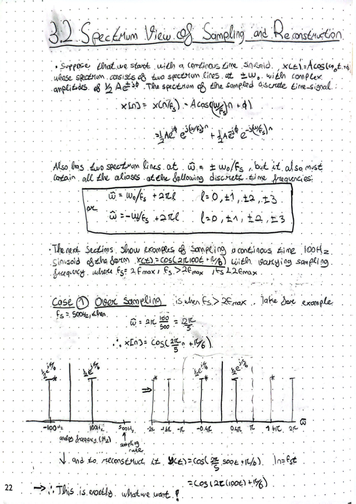
3.2 Spectrum View of Sampling and Reconstruction
-
Suppose that we start with a continuous time sinusoid, x(t)=A cos(ω_0t+φ) whose spectrum consists of two spectrum lines at ±ω_0, with complex amplitudes of 1/2 Ae±jφ. The spectrum of the sampled discrete-time signal,
x[n] = x(n/Fs) = A cos((ω_0/Fs)n + φ) = 1/2 Ae^jφ e^j(ω_0/Fs)n + 1/2 Ae^-jφ e^-j(ω_0/Fs)n
Also has two spectrum lines at ω̂ = ±ω_0/Fs, but it also must contain all the aliases at the following discrete-time frequencies:
[boxed]
ω̂ = ω_0/fs + 2πℓ ℓ = 0, ±1, ±2, ±3
or
ω̂ = -ω_0/fs + 2πℓ ℓ = 0, ±1, ±2, ±3
[/boxed]
- The next sections show examples of sampling a continuous time 100Hz sinusoid of the form x(t)=cos(2π100t + π/6) with varying sampling frequency, where Fs: 2Fmax | Fs > 2Fmax | Fs < 2Fmax.
Case (1) proper sampling: is when Fs > 2Fmax. Take for example Fs = 500Hz, then
ω̂ = 2π 100/500 = 2π/5
∴ x[n] = cos((2π/5)n + π/6).
[Diagram: analog frequency spectrum with two vertical lines at -100Hz and 100Hz, each labeled 1/2 e^-jπ/6 and 1/2 e^jπ/6 respectively. Horizontal axis labeled “analog frequency (Hz)“. Sampling rate marked at 500Hz.]
->
[Diagram: discrete-time frequency spectrum on horizontal axis labeled ω̂. Tick marks shown at -2π, -1.6π, -π, -0.4π, 0.4π, π, 1.6π, 2π. Repeating spectral lines appear at -1.6π, -0.4π, 0.4π, 1.6π, etc. Main pair at ±0.4π labeled 1/2 e^-jπ/6 and 1/2 e^jπ/6. Curved bracket/circled highlighted region encloses the principal interval around -π to π / the pair near ±0.4π.]
down and to reconstruct it, y(t)=cos((2π/5)*500t + π/6), |n = fst
= cos(2π(100)t + π/6).
→ ∴ This is exactly what we want.
Page 22
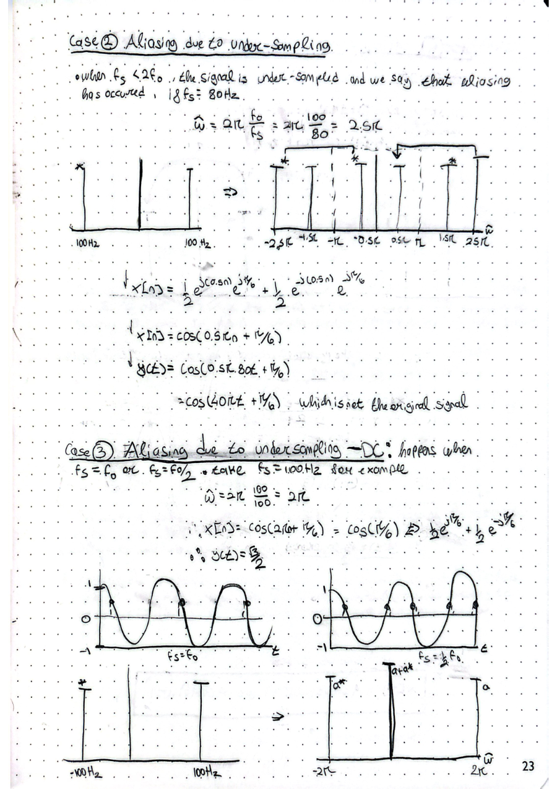
Case (2) Aliasing due to under-sampling
- when fs < 2fo, the signal is under-sampled and we say that aliasing has occured if fs = 80 Hz.
ω̂ = 2π (fo / fs) = 2π (100 / 80) = 2.5π
[diagram: frequency-domain impulses at -100 Hz and 100 Hz, arrow to normalized frequency axis]
→
[diagram: normalized frequency axis ω̂ from -2.5π to 2.5π with repeated spectral impulses and brackets showing folding/aliasing. Labels include -2.5π, -1.5π, -π, -0.5π, 0.5π, π, 1.5π, 2.5π. Asterisks mark impulses near -2.5π, -0.5π, 0.5π, 1.5π.]
down x[n] = 1/2 e^j(0.5πn) e^jπ/6 + 1/2 e^-j(0.5πn) e^-jπ/6
down x[n] = cos(0.5πn + π/6)
down y(t) = cos(0.5π * 80t + π/6)
= cos(40πt + π/6) which is not the original signal.
Case (3) Aliasing due to underSampling → DC ; happens when fs = fo or fs = fo/2, take fs = 100 Hz as example
ω̂ = 2π (100 / 100) = 2π
down x[n] = cos(2πn + π/6) = cos(π/6) ⇔ 1/2 e^jπ/6 + 1/2 e^-jπ/6
- y(t) = √3/2
[diagram: cosine wave versus t, sampled points shown, y-axis labels 1, 0, -1. Label under graph: fs = fo.]
[diagram: cosine wave versus t, sampled points shown, y-axis labels 1, 0, -1. Label under graph: fs = 1/2 fo.]
[diagram: frequency-domain impulses at -100 Hz and 100 Hz]
→
[diagram: normalized frequency axis ω̂ from -2π to 2π. Impulses at -2π, 0, and 2π; center impulse labeled To x* and Ta x*. Right impulse labeled Ta. Axis labels -2π and 2π.]
Page 23
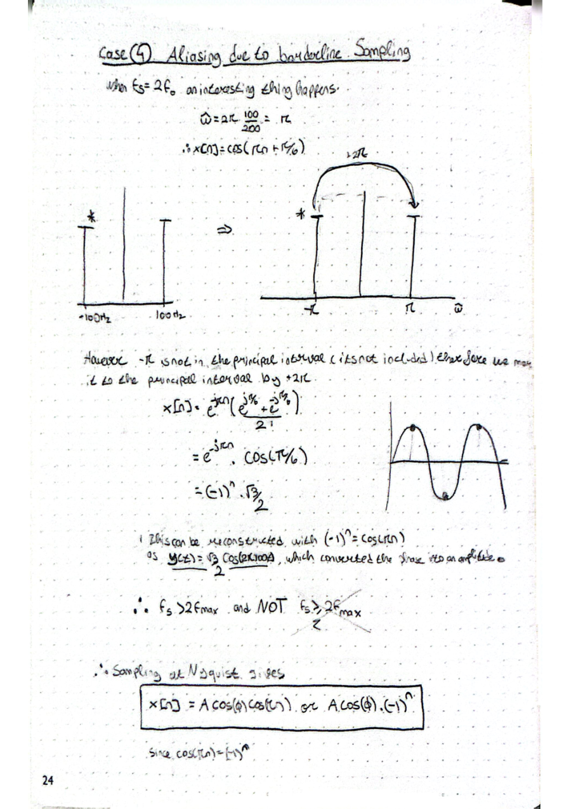
Case (4) Aliasing due to borderline Sampling
when fs = 2f0 an interesting thing happens.
ω̂ = 2π * 100/200 = π
∴ x[n] = cos(πn + π/6)
[Diagram: frequency-domain sketch with vertical spectral lines at -100Hz and +100Hz. A star marks the left line at -100Hz. Arrow points to a normalized digital frequency sketch.]
[Diagram: normalized frequency-domain sketch with vertical lines at -π, 0, and π on ω axis. Left line at -π has a star. Curved arrow labeled 2π maps from -π to π, indicating periodic equivalence.]
However -π is not in the principal interval (it is not included), therefore we move it to the principal interval by +2π.
x[n] = e^(jπn) ( e^(jπ/6) + e^(-jπ/6) ) / 2
= e^(jπn) cos(π/6)
= (-1)^n * √3/2
[Graph: small discrete-time waveform sketch on right, showing alternating samples along a cosine-like curve: positive peak, negative trough, positive peak.]
- This can be reconstructed with (-1)^n = cos(πn) as y(t) = √3/2 cos(2π100t), which converts the phase into an amplitude.
∴ fs > 2fmax and NOT fs >= 2fmax [“fs >= 2fmax” is crossed out.]
∴ Sampling at Nyquist is yes
[Boxed equation:] x[n] = A cos(ϕ) cos(πn), or A cos(ϕ)(-1)
since cos(πn) = (-1)
Page 24
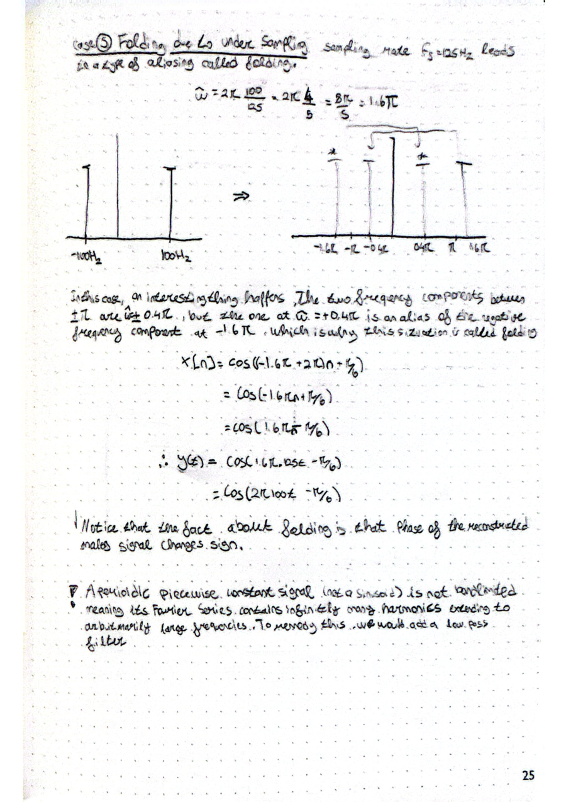
Case 5) Folding due to under sampling sampling rate fs = 125Hz leads to a type of aliasing called folding.
[ \hat{\omega}=2\pi\frac{100}{125}=2\pi\frac{4}{5}=\frac{8\pi}{5}=1.6\pi ]
[diagram: frequency-domain sketch on left with horizontal axis and two vertical spectral lines labeled (-100Hz) and (100Hz). Arrow points to right-hand folded discrete-frequency sketch.]
[diagram: horizontal (\omega)-axis with vertical lines at approximately (-1.6\pi), (-\pi), (-0.4\pi), (0), (0.4\pi), (\pi), (1.6\pi). The (0) line is tallest. Curved bracket/arrow over the region around (0) indicating folding/shift. Small asterisks mark the lines near (-1.6\pi) and (0.4\pi). Axis labels visible: (-1.6\pi), (-\pi), (-0.4\pi), (0.4\pi), (\pi), (1.6\pi).]
In this case, an interesting thing happens. The two frequency components between (\pm\pi) are at (\hat{\omega}=0.4\pi), but the one at (\hat{\omega}=+0.4\pi) is an alias of the negative frequency component at (-1.6\pi), which is why this situation is called folding.
[ x[n]=\cos(-1.6\pi n+200n+\pi/6) ]
[ =\cos(-1.6\pi n+\pi/6) ]
[ =\cos(1.6\pi n-\pi/6) ]
[ \therefore y(t)=\cos(1.6\pi .125t-\pi/6) ]
[ =\cos(2\pi100t-\pi/6) ]
Notice that the fact about folding is that phase of the reconstructed analog signal changes sign.
▸ A periodic piecewise constant signal (not a sinusoid) is not bandlimited ▸ meaning its fourier series contains infinitely many harmonics extending to arbitrarily large frequencies. To remedy this, we must add a low pass filter.
Page 25
reconstruction down rec/
x(t) ──► [ C/D ] ──► y(t)
up
fs = 160 Hz
let x(t) = 4 cos(2π32t - π/6) + 7 cos(2πf_2t - π/2)
32 < f_2 < 200. x[n] = 3 cos(2π/5 n + π/2), what is f_2?
Solution: A sum of two continuous-time cosines with the same phase can be sampled into a single discrete time cosine if only if the two frequencies are equal and not cos it at, or they alias to the same principal discrete-time frequency.
∴ Aliasing has occurred.
[diagram: frequency axis with vertical spectral lines. Axis labels, left to right: -2πf_2/160, -π, -2π/5, 2π/5, π, 2πf_2/160. Curved arrow labeled “Aliasing” from the left-side -2π/5 line wrapping toward the right-side 2π/5 line. Spectral labels include e^{jπ/2}, 2e^{-jπ/6}, 1/2 e^{jπ/2}, -2e^{jπ/6}, 2e^{jπ/6}.]
ω̃_1 = 2π 32/160 = 2π/5 ✓
ω̃_2 = 2π f_2/160 = ?
cos(1) 2πf_2/160 + 2πk = 2π/5
X[n] = e^{jπ/2}(2e^{-jπ/6} + 1/2 e^{-jπ/2}) = e^{jπ/2} * e^{-jπ/6}(2 + 1/2) = e^{j2π/6} * 5/2
∴ X[n] = 5/2 cos(2π/5 n - π/6) which is not our sampled signal.
for k = 1
2πf_2/160 - 2π = 2π/5 2πf_2 = 160π - 32π f_2 = 128 Hz ✓
for k = 2
2πf_2/160 - 4π = 2π/5 2πf_2 - 320π = 32π f_2 = 352 Hz X (not in interval)
[margin note:] because we should move only r.t.
cos(2) -2πf_2/160 + 2πk = 2π/5
2e^{-jπ/6} + 1/2 e^{jπ/2}
e^{jπ/2}(-2 + 1/2)
e^{jπ/2} 3/2
∴ x[n] = 3 cos(2π/5 n + π/2), which is our sampled signal.
for k = 1
-2πf_2/160 + 2π = 2π/5 -f_22π + 160π = 32π f_2 = 128 Hz ✓
for k = 2
-2πf_2/160 + 4π = 2π/5 -f_22π + 320π = 32π f_2 = 288 Hz X (not in interval)
∴ f_2 = 128 Hz.
Page 26
Chapter 4: FIR Filters:
4.1 Discrete Time Systems
A discrete-time system transforms an input sequence into an output sequence through a computational process. These systems are commonly represented as block diagrams. Unlike sampling and reconstruction, where one of the signals is continuous time, discrete time systems operate entirely on discrete-time signals. They are important because they can be implemented digitally and designed to modify signals in useful ways.
In general, we represent the notation of a system by the notation:
x[n] ──T──> y[n]
which states concisely that the output sequence (the term sequence is equivalent to a discrete time signal) y is related to the input sequence x by a computational process (or mapping) that can be described mathematically by an operator T. An equivalent representation is
[diagram: continuous-time input x(t) enters a C/D block, labeled with sampling frequency fs underneath; output x[n] goes into a block labeled T; output y[n] goes into a D/C block, labeled with sampling frequency fs underneath; final output is y(t). Arrows connect left to right.]
Since a discrete time signal is a sequence of values, such operators T can be described by giving a formula for computing the values of the output sequence from the values of the input sequence.
Ex/ y[n] = (x[n])^2 defines a very simple system for which the output sequence values are the square of the corresponding input sequence values.
We begin our study of discrete time systems in this chapter introducing a very important class of discrete time systems called FIR Filters, that are a part of Linear time-invariant systems.
Finite impulse response
27
Page 27
4.2 The Running-Average Filter
- In order to motivate the general definition of the class of FIR systems, let us consider the simple running average as an example of a system that processes an input sequence to produce an output sequence. To be specific, consider a 3-point running average where each sample (of current practice, or referred to signal values as point or samples) of the output sequence is the sum of three consecutive input sequence samples divided by three.
[Diagram: stem plot labeled x[n]. Horizontal axis labeled n with tick marks -2, -1, 0, 1, 2, 3, 4, 5, 6. Nonzero samples shown at n = 0 with value 2, n = 1 with value 4, n = 2 with value 6, n = 3 with value 4, n = 4 with value 2. Vertical axis arrow upward labeled x[n].]
-
If we apply this algorithm to the example short sequence shown in the top figure we can compute a new sequence (called y[n]) which is the output of the averaging processor.
-
The sequence x[n] is an example of a finite-length signal. The support of such a sequence is the set of indices over which the sequence is nonzero. In this case, the support of the sequence is the finite interval 0 ⇐ n ⇐ 4. [a finite-length sequence]
[Diagram: stem plot labeled y[n]. Horizontal axis labeled n with tick marks -2, -1, 0, 1, 2, 3, 4, 5, 6. Nonzero samples shown at n = -2 with value 2/3, n = -1 with value 2, n = 0 with value 4, n = 1 with value 14/3, n = 2 with value 4, n = 3 with value 2, n = 4 with value 2/3. Vertical axis arrow upward labeled y[n].]
-
A 3point average of the values { x[0], x[1], x[2] } = {2, 4, 6} gives the answer 4 or y[0] = 4. This result defines one of the output values.
-
The next output value is obtained by averaging { x[1], x[2], x[3] } which yields an average value of 14/3.
Before going any further, we shall decide on the output indexing. For example the 1/3 could be assigned to y[0] and y[1], but this is only one of many possibilities.
∴ y[0] = 1/3 { x[0] + x[1] + x[2] }
y[1] = 1/3 { x[0] + x[1] + x[2] }
which generalizes to the following input-output equation,
y[n] = 1/3 (x[n] + x[n+1] + x[n+2]) (1)
- Running average is also named moving average.
Page 28
The equation given in (1) is called a difference equation. It is a complete description of the FIR system
involved in the computation for y[2]
n -4 -3 -2 -1 0 1 2 3 4 5 ∞
x[n] 0 0 0 2 4 6 4 2 0 0
y[n] 0 1/3 2 4 1/3 4 2 2/3 0 0
Observe that the support of the output sequence is longer than the input sequence which is typical for an FIR filter.
The choice of the output indexing is arbitrary, but it does matter when speaking about properties of the filter because n is often time index. We can interpret y[n] in (1) as the computation of the present value of the output based on three input values and since these inputs are indexed as n, n+1, and n+2, two of them are “in the future”. This form of the 3 point running average filter can be represented by
y[n] = 1/3 (x[n] + x[n+1] + x[n+2]) = 1/3 sum x[l]
l=n
n+2
Where l is a “dummy” counting index for the sum and n denotes the index of the nth sample.
In general, sample values from either the past or the future or both may be used in the computation of the running average.
In all cases of a 3-point running average, a sliding window of three samples determines which three samples are used in the computation of y[n]. A filter that uses only the present and past values of the input is called a causal filter. A filter that uses future values of the input is called noncausal filter. Noncausal systems cannot be implemented in a real-time application because the input is not yet available when the output has to be computed.
An alternative output scheme can produce a 3-point averaging filter that is causal. In this case, the output value y[n] is the average of input values at n (the present), n-1 (one sample previous), and n-2 (two samples previous). The difference equation for this filter is
y[n] = 1/3 (x[n] + x[n-1] + x[n-2]) = sum 1/3 x[l] (2)
l=n-2
n
29
Page 29
The straightforward manipulation of the sum (2) can also be expressed
y[n] = 1/3 ( x[n] + x[n-1] + x[n-2] ) = sum from k=0 to 2 1/3 x[n-k] (3)
4.3 The General FIR Filter
The causal running average (3) is a special case of the general causal difference equation, with given M in reverse-time order (newest → oldest)
y[n] = sum from k=0 to M bₖ x[n-k] = b_0 x[n] + b_1 x[n-1] + … + bM x[n-M]
where the coefficients bₖ are fixed numbers. (usually the bₖ coefficients are not all the same).
Visually; for a list of values {2, 4, 6, 8, 10}
filter coefficients b_0 b_1 b_2 … samples reverse chronological x[0] x[-1] x[-2] … x[3] x[2] x[1] 6 4 2
∴ b_0 * 6 + b_1 * 4 + b_2 * 2
Now list the samples in time order (oldest → newest):
y[n] = sum from k=0 to M bM-k x[k] = bM x[n-M] + bM-1 x[n-M+1] + … + b_0 x[n]
Visually:
filter coefficients reversed b_2 b_1 b_0 samples chronological order x[n-2] x[n-1] x[n] x[1] x[2] x[3] 2 4 6
∴ b_2 * 2 + b_1 * 4 + b_0 * 6
[Diagram at bottom left: horizontal k-axis with vertical sample stems of varying height; a sliding window is drawn as a horizontal rounded rectangle enclosing several adjacent samples. Label near it: “sliding window”. Vertical axis label: x[k].]
[Diagram at bottom center: horizontal k-axis with a rounded rectangular window over a block of adjacent samples; vertical lines inside the window connect sample stems to coefficient labels above them. Coefficient labels above the window: bM, bM-1, …, b0.]
[Diagram at bottom right: horizontal k-axis with a rounded rectangular window shifted to the right over a later block of samples; several coefficient/sample stems are shown above the window, labeled with repeated 0’s near the top. Arrow on axis points right and is labeled k.]
30
Page 30
- When the input signal has length of N, the support of the signal can be expressed as 0 ⇐ k ⇐ N-1. The periodic extension support of the signal then is an interval of N samples at the origin where the convolution involves fewer than M-1 nonzero samples as the sliding window of the filter edges with the input and another M samples at the end where the sliding window disengages from the input sequence.
The length of the output sequence would be N+M samples where N is the length of the input signal, M-1 is the filter length and M is the filter order.
4.4 The Unit Impulse Response and Convolution
- In this section, we introduce three new concepts: the unit impulse sequence, the unit impulse response and the convolution sum. We show that the impulse response also provides a complete characterization of the FIR filter, because convolution sum gives a formula for computing the output from the input when the unit impulse response is known.
⇒ Unit impulse Sequence
- The Kronecker delta δ[n] is a discrete-time sequence defined by
δ[n] = { 1, n=0 { 0, n!=0
ex/
n | -2 | -1 | 0 | 1 | 2 | 3 δ[n] | 0 | 0 | 1 | 0 | 0 | 0 δ[n-2] | 0 | 0 | 0 | 0 | 1 | 0
A shifted impulse is nonzero when its argument is zero that is, when n-2=0, or equivalently n=2
[Graph: vertical axis labeled δ[n-2]; horizontal axis labeled n with tick marks -2, -1, 0, 1, 2, 3, 4, 5, 6. A single stem/impulse of height 1 occurs at n=2 and is labeled 1.]
- The shifted impulse so very useful concept because
x[n] = { 2, 4, 6, 4, 2 } up 0
⇒ x[n] = 2δ[n] + 4δ[n-1] + 6δ[n-2] + 4δ[n-3] + 2δ[n-4]
31
Page 31
It turns out that any sequence can be represented this way.
x[n] = sumₖ x[k] δ[n-k]
= x[-1]δ[n+1] + x[0]δ[n] + x[1]δ[n-1] + …
⇒ unit impulse response sequence
-
The output from a filter is called the response to the input. so when the input is the unit impulse, δ[n], the output is called the unit impulse response
-
We reserve the notation h[n] for the unit impulse response sequence
h[n] = sumᵏ⁼ᴹₖ₌_0 bₖ δ[n-k]
The impulse response h[n] of the FIR filter is simply the sequence difference equation coefficients. (filter coefficients.)
Since, h[n] = 0 for n<0 and for n>M, the length of the impulse response sequence h[n] is finite. This is why the system is called a FIR (finite impulse response) system.
ex/ x[n] y[n] δ[n] → [3-pt ave. FIR filter] → h[n]
[Graph: horizontal n-axis marked -3, -2, -1, 0, 1, 2, 3. Three vertical impulses at n=0, n=1, n=2, each labeled ⅓.]
- impulse response of a 3 point running average filter.
⇒ The unit Delay System
- One important system is the operator that performs a delay or shift by an amount n_0
y[n] = x[n-n_0]
When n_0 = 1 the system is called a unit delay. The delay system is actually the simplest of FIR filters. It has only one nonzero coefficient
- if {b_0,b_1,b_2} = {0,0,1} order M=2
y[n] = b_0 x[n] + b_1 x[n-1] + b_2 x[n-2] = x[n-2]
h[n] = δ[n-2].
Page 32
⇒ FIR Filters and Convolution:
A general expression for the FIR filters output can be derived in terms of the impulse response. Since the filter coefficients are identical to the impulse response values, we can replace bₖ by h[k] to obtain
(4) y[n] = sumᵐₖ₌_0 h[k] x[n-k] ⇔ y[n] = sumᵐₖ₌_0 h[n-k] x[k]
[boxed region around the two equations] [arrow/label under first equation: reversing samples] [arrow/label under second equation: reversing filter co] [arrow/label under boxed region: reversing samples]
where M is the filter order. Now the relation between the input and output of the FIR filter in terms of the input and impulse response
The sum in (4) is called a finite convolution sum, which is a special case for the Discrete convolution with finite length, which is general for LTI systems
y[n] = sum∞ₖ₌_0 x[k] h[n-k]
The length of the output (convolution) is equal signal length + filter order
⇒ The unit step signal:
In previous sections, we have described the FIR filtering as finite length signals, but there is no reason that the input signal cannot be infinite duration. An example is the discrete unit step signal which is zero for n<0, and turns on at n=0
u[n] = { 0 n<0 1 n>=0
The symbol u[n] is reserved for the unit step
[graph: discrete-time stem plot of unit step signal. Horizontal axis labeled with ticks -3, -2, -1, 0, 1, 2, 3, 4, 5, 6, 7. Stems of height 1 at n = 0 through 7. Vertical axis marked 1.]
-
xₑ[n] pulses can be written as the difference of two shifted unit steps
x[n] = u[n-100] - u[n-105] is a length 5 pulse starting at n=100
-
another property is that:
[boxed equation] δ[n] = u[n] - u[n-1]
Page 33
Convolution can also be expressed as an operator:
┌──────────────────────────────────────────────┐ │ y[n] = sum(k=0 to M) x[k]h[n-k] = x[n] * h[n] │ └──────────────────────────────────────────────┘
Properties of Convolution:
i. Do nothing: x[n] * δ[n] = x[n]
ii. Commutative property: x_1[n] * x_2[n] = x_2[n] * x_1[n]
iii. Convolution with a shifted impulse: x[n] δ[n-n_0] = x[n-n_0] delayed
iv. Associativity: (x_1[n] * x_2[n]) * x_3[n] = x_1[n] * (x_2[n] * x_3[n])
v. Distributive property: (x_1[n] + x_2[n]) * h[n] = h[n] * x_1[n] + h[n] * x_2[n]
⇒ Convolution is also a linear operator, meaning, its essentially a matrix multipli[unclear]
Proof: let T: x[n] → y[n]
T{ax_1 + bx_2} = sumk h[k]{a x_1[n-k] + b x_2[n-k]}
= a sumk h[k]x_1[n-k] + b sumk h[k]x_2[n-k]
= a.T{x_1} + b.T{x_2}
4.5 Implementation of FIR Filters.
Recall that the general definition of an FIR filter is:
y[n] = sum(k=0 to M) bₖ x[n-k].
In order to use the formula above to compute the output of the FIR filter, we need the following.
- A means for multiplying delayed input signal values by the filter co[unclear]
- A means for adding the scaled sequence values.
- A means for obtaining delayed versions of the input sequence.
Page 34
which we can represent as block diagrams:
Multiplier
[diagram: x[n] enters a multiplier circle marked “ה; β enters upward into the multiplier; output arrow labeled y[n]]
y[n] = β x[n]
Adder
[diagram: x_1[n] enters an adder circle marked ”+”; x_2[n] enters upward into the adder; output arrow labeled y[n]]
y[n] = x_1[n] + x_2[n]
Unit Delay
[diagram: x[n] enters a square block labeled “T”; output arrow labeled y[n]]
y[n] = x[n-1]
ex/
[diagram: third-order FIR filter block diagram. Input x[n] travels along a top horizontal line. Four taps feed multipliers labeled b_0, b_1, b_2, b_3. Three stacked square blocks on the left are each labeled “unit delay”, forming a delay line. The top direct path x[n] goes to multiplier b_0. After the first unit delay the signal goes to multiplier b_1. After the second unit delay the signal goes to multiplier b_2. After the third unit delay the signal goes to multiplier b_3. The four multiplier outputs feed a vertical chain of three adders marked ”+” on the right. The final output arrow is labeled y[n].]
- Block diagram for a third-order FIR filter
DE = b_0 x[n] + b_1 x[n-1] + b_2 x[n-2] + b_3 x[n-3]
- These are the 4 things that describe a FIR filter (LTI system) which are all equivalent representations.
-
Realization scheme (block diagram)
-
Difference equation
-
Impulse response
-
Convolution
These all give the filter coefficients.
Page 35
rev.
[diagram: block diagram of a discrete-time system. Input labeled x[n] enters a top branch. A vertical branch from x[n] goes down through a multiplier labeled “1” and into a lower summing node. The top branch continues through a delay block labeled T, then down the right branch through a multiplier labeled “-1” into the same summing node. Output arrow to the right is labeled y[n].]
y[n] = x[n] - x[n-1] h[n] = δ[n] - δ[n-1]
if x[n] is defined as δ[n] + 2δ[n-1] - δ[n-2], what is the sequence y[n]?
Solution: x[n] is the sequence {x[n]} = {1, 2, -1} and filter coefficients are {b_k} = {1, -1}. using convolution with synthetic multiplication.
[ \sum_{k=0}^{1} h[n-k] \cdot x[k] ]
[small table/diagram labeled “x[n] sequence” at left with entries 1, 2, -1 vertically; “filter coef” across top with entries 1, -1. Diagonal multiplication/convolution grid drawn with circled multiplication and plus symbols.]
∴ y[0] = 1 y[1] = 1 y[2] = -3 y[3] = 1
4.6 Linear Time-Invariant LTI Systems
- A Discrete LTI system is a system that satisfies two properties: linearity (superposition) and time invariance. These two properties together imply a very powerful representation of any system in terms of convolution. There are two classes of LTI systems: FIR filters, and IIR (infinite impulse response) filters, which are out of scope for this course.
→ Time Invariance: A Discrete time system is said to be time invariant if, when an input is delayed (shifted) by n_0, the output is delayed by the same amount.
[diagram: input x[n] splits into two paths. Top path goes through a delay box labeled “Delay by n_0” producing x[n-n_0], then into a “system” block producing w[n]. Bottom path sends x[n] into a “system” block producing y[n], then through a delay box labeled “Delay by n_0” producing y[n-n_0].]
if w[n] = y[n-n_0], then the system is time invariant.
Page 36
w/ define the system y[n] = n x[n]
-
x_1[n] = x[n-n_0] , y_1[n] = n x[n-n_0]
-
y[n] = ? S[n-n_0] ; y[n-n_0] = (n-n_0) x[n-n_0]
∴ Therefore this is not an LTI system because its not time invariant
→ Linearity (superposition) Linear systems have the property that if x_1[n] → y_1[n] and x_2[n] → y_2[n] then x[n] = αx_1[n] + βx_2[n] → αy_1[n] + βy_2[n] with x[n] = x_1[n] + x_2[n] so y[n] = y_1[n] + y_2[n]
Diagram:
x_1[n] → [system] → y_1[n] → (multiplier labeled α)
→ (+) → w[n]
x_2[n] → [system] → y_2[n] → (multiplier labeled β) /
} if w[n] = y[n] then the system is linear
Diagram:
x_1[n] → (multiplier labeled α)
→ (+) → x[n] → [system] → y[n]
x_2[n] → (multiplier labeled β) /
ex/ Define the system y[n] = (x[n])
Let: For x_1 in x_2: y[n] = (αx_1[n] + βx_2[n])^2 != α(x_1[n])^2 + β(x_2[n])
∴ This is not an LTI system because it isnt linear
ex/ Consider y[n] = x[n] - x[n-1], and x[n] = δ[n] + 2δ[n-1] - δ[n-2]
We can also write x[n] = x_1[n] + 2x_2[n] - x_3[n] with x_1[n] = δ[n], x_2[n] = δ[n-1] and x_3[n] = δ[n-2]
Now we can write: y_1[n] = x_1[n] * h[n] = x_1[n] - x_1[n-1] = δ[n] - δ[n-1] y_2[n] = x_2[n] * h[n] = x_2[n] - x_2[n-1] = δ[n-1] - δ[n-2] y_3[n] = x_3[n] * h[n] = x_3[n] - x_3[n-1] = δ[n-2] - δ[n-3]
∴ y[n] = y_1[n] + 2y_2[n] - y_3[n] = … = [unclear]
Hence, apply the system to each impulse and then multiply by coefficients and add them. 37
Page 37
ex/ let x[n] = u[n] and h[n] = δ[n] - δ[n-2].
a) how many filter coefficients?
√ 3. Σ bₖ z⁻ᵏ = 1 0 -1 3
b) what is the output of the system, y[n] = ?
x[n] * h[n] = x[n] * (δ[n] - δ[n-2])
= u[n] * δ[n] - u[n] * δ[n-2]
= u[n] - u[n-2]
which looks like
[graph: horizontal discrete-time axis labeled -3, -2, -1, 0, 1, 2, 3, 4; two vertical stems at n=0 and n=1 with filled dots at height 1; other points on axis]
which is a length 2 pulse at index n=0
( [graph: unit step-like sequence with stems starting at n=0 and continuing to the right, axis labeled -2, -1, 0, 1, 2, 3, with ellipsis]
[graph: shifted unit step-like sequence with stems starting at n=2 and continuing to the right, axis labeled -2, -1, 0, 1, 2, 3, with ellipsis] )
ex/
x[n] → [LTI system] → y[n]
if x[n] = u[n] → y[n] = δ[n] + 2δ[n-1] what is the impulse response? positive sequence
√ x[n] * h[n] = δ[n] + 2δ[n-1]
u[n] * h[n] = δ[n] + 2δ[n-1]
using the identity δ[n] = u[n] - u[n-1]
u[n] * h[n] = u[n] - u[n-1] + 2u[n-1] + 2u[n-2]
∴ h[n] = δ[n] + δ[n-1] + 2δ[n-2]
Page 38
we can now clearly see that all LTI systems are defined by the discrete convolution sum.
y[n] = x[n] * h[n] = sum from k=-∞ to ∞ x[k] * h[n-k]
where y[n] is the output sequence, x[n] is the input sequence and h[n] is the unit impulse response. Sequence where δ[n-k] is the basis for these sequences
ex/ Let x[n] = 2δ[n] + 4δ[n-1] + 6δ[n-2] - δ[n-4]
[diagram: x[n] enters a branching discrete-time system. The top path has two delay blocks labeled T and T in series. A middle tap from between the two T blocks goes down through a multiplier marked x with a minus sign. The original input also branches along a lower path to a summing junction marked +. The outputs combine at a final summing junction marked +, producing y[n].]
h[n] = δ[n] - δ[n-1] + δ[n-2]
DE: y[n] = x[n] - x[n-1] + x[n-2]
Find the sequence y[n].
Solution: Since we know the input and filter sequences, we use the tabular method
[table] h[n] 1 -1 +1 x[n] 2 2 -2 2 4 4 -4 4 6 6 -6 6 0 0 0 0 -1 -1 1 -1
y[0] = 2 y[1] = 2 y[2] = 4 y[3] = -2 y[4] = 5 y[5] = 1 y[6] = -1
∴ y[n] = 2δ[n] + 2δ[n-1]
- 4δ[n-2] - 2δ[n-3] + 5δ[n-4]
- δ[n-5] - δ[n-6]
ex/ consider the system. What is the output y(t)? with x(t) = cos(100πt)
[diagram: continuous-time input x(t) enters a C/D block with fs = 200 Hz, producing x[n]. Then x[n] passes through a delay block T. A branch bypasses the delay and the delayed path joins at a summing junction marked +, producing y[n]. Then y[n] enters a D/C block with fs = 200 Hz, producing y(t).]
Solution: ω̂ = 2π * 50/200 = π/2, (no aliasing)
x[n] = cos(π/2 n), y[n] = x[n] + x[n-1]
∴ y[n] = cos(π/2 n) + cos(π/2 (n-1))
= cos(π/2 n) + cos(π/2 n - π/2)
39
Page 39
Since we have two cosines with same phases, we can do phasor addition
1 cos(1/2 n) + cos(1/2 n - π/2)
= 1/2 (1 + e^-jπ/2)
= 1 + -j
= 1 - j |z| = √(1+1) = √2, θ = arctan(-1/1) = arctan(-1) = -π/4
= [√2 e^-jπ/4] * 1/2
∴ y[n] = √2 cos(1/2 n - π/4)
∴ y(t) = √2 cos(1/2 200t - π/4)
= √2 cos(2π50t - π/4)
[diagram: FIR tapped-delay filter. Input labeled x[n] = u[n] enters a horizontal delay line. Four vertical taps go down through multiplier circles labeled b0, b1, b2, b3, into a summing block Σ. Three delay blocks labeled T are placed along the top delay line between taps. Output from Σ goes right.]
h[n] = b0 δ[n] + b1 δ[n-1] + b2 δ[n-2] + b3 δ[n-3] - find the multipliers b0 … b3 (filter coefficients)
down Solution: u[n] * h[n] = δ[n] - δ[n-1] - δ[n-2] + δ[n-3]
u[n] * h[n] = u[n] - u[n-1] - u[n-1] + u[n-2] - u[n-2] + u[n-3]
= u[n] - 2u[n-1] + 0u[n-2] + u[n-3]
∴ b0 = 1, b1 = -2, b2 = 0, b3 = 1
→ infinite impulse order 3. FIR filter is filtering the discrete unit step [unclear]
Page 40
Let consider the system
[diagram: input arrow labeled x(t) enters a block labeled C/D. An upward arrow into the C/D block is labeled fs = 100 Hz. Output arrow labeled x[n] enters a block labeled “T / system” (discrete-time system). Output arrow labeled y[n] enters a block labeled D/C. An upward arrow into the D/C block is labeled fs = 100 Hz. Output arrow labeled y(t).]
which is a discrete time LTI system that can be used to process various time signals (using C/D and D/C converters). The sampling frequency of both converters is 100 Hz. Compute the output signal y(t) for the following situations.
a) x1(t) = 1 and h1[n] = δ[n] + δ[n-1]
b) x1(t) = 1 and h2[n] = δ[n] - δ[n-1]
c) x2(t) = cos(100πt) and h1[n] = δ[n] + δ[n-1]
d) x2(t) = cos(100πt) and h2[n] = δ[n] - δ[n-1]
Based on these results, explain the behaviour of both filters h1(n) and h2(n) for the two given frequencies, x1(t)(DC) and x2(t).
down a/c
h1[n] = δ[n] + δ[n-1]
[diagram: input arrow labeled x[n] branches. One branch goes through a delay block labeled T; the delayed branch and direct branch enter a summing node marked +, output labeled y1[n]. Dashed box labeled “the LTI system h1[n]”.]
- x1(t) → x1[n] = 1 →
y1[n] = x[n] + x[n-1] = 1 + 1 = 2
- x2(t) → x2[n] : w0 = 2π 50/100 = π it has [unclear] edge case ∴ y1? = 1 , y2? = cos(πn)
y2[n] = cos(πn) + cos(πn - π) = cos(πn) - cos(πn) = 0
→ Filter h1(n) has a “low pass” character.
b/d)
h2[n] = δ[n] - δ[n-1]
[diagram: input arrow labeled x[n] branches. One branch goes through a delay block labeled T; delayed branch enters an upper summing node marked -. Direct branch enters a lower summing node marked +. Output labeled y2[n]. Dashed box labeled “LTI system”. Text to right: “also 100 kHz?”]
-
x1(t) → x1[n] y1[n] = x[n] - x[n-1] = 1 = 1 - 1 = 0
-
x2(t) → x2[n] = cos(πn)
y2[n] = cos(πn) - cos(πn - π) = 2 cos(πn)
→ Filter h1(n) has a “low pass” character since it passes low frequencies and attenuates high frequencies.
→ Filter h2[n] has a “high pass” character.
Page 41
4.7 Cascaded LTI Systems
-
In a cascade connection of two systems, the output of the first system is the input to the second system, and the overall output of the cascade system is taken to be the output of the second system.
-
LTI systems have the remarkable property that two LTI systems in cascade can be implemented in either order. This property is a direct consequence of the commutative property applied to the impulse response of LTI systems.
[Diagram: First cascade block diagram] x[n] / δ[n] → [LTI 1 h_1[n]] → w[n] h_1[n] → [LTI 2 h_2[n]] → y[n] h_1[n] * h_2[n]
[Diagram: Second cascade block diagram] x[n] / δ[n] → [LTI 2 h_2[n]] → w[n] h_2[n] → [LTI 1 h_1[n]] → y[n] h_2[n] * h_1[n]
[Diagram: Equivalent LTI block diagram] x[n] / δ[n] → [Equivalent LTI h[n] = h_1[n] * h_2[n]] → y[n] h_1[n] * h_2[n]
[Right brace grouping all three diagrams] → Three equivalent Cascaded LTI Systems.
Ex/ let h_1[n] = δ[n] + δ[n-1], h_2[n] = δ[n] - δ[n-1], x[n] = u[n] determine the sequence y[n]
Solution: y[n] = u[n] * (h_1[n] * h_2[n])
y[n] = u[n] * (δ[n] - δ[n-2])
= u[n] - u[n-2] which is a length 2 pulse at n = 0.
[Small plotted stem/sequence graph labeled h[n]] h[n] axis marks: -1, 0, 1 values shown: 1 at n = 0, -1 at n = 1 written sequence: = 1 0 -1
Meaning:
[Block diagram: left implementation] x(n) branches: top branch through delay block T then into summing junction (+); lower direct branch into same summing junction (+). Output then branches: top branch through delay block T, then multiplier x labeled -1, then into final summing junction (+); lower direct branch into final summing junction (+). final output y[n]
⇔
[Block diagram: right implementation] x(n) branches: top branch through two cascaded delay blocks T and T, then down to multiplier x labeled -1, then into summing junction (+); lower direct branch goes around to same summing junction (+). output labeled y[n]
Page 42
[Top diagram: discrete-time system block diagram. Left input arrow labeled x(n)=u(n), through a rectangular block labeled h_1(n), output labeled w(n). Then into a dashed box labeled h_2(n): top branch goes directly to a summing junction ”+”; lower branch taps down, passes through two delay blocks, then into a multiplier/circle marked “ה with a coefficient label near it, then up into the summing junction. Output arrow labeled y(n).]
a) Let h_1(n) = 2 δ[n] + δ[n-1] - δ[n-2] , what is w(n)
b) What is the equivalent system h(n)
down
w(n) = u(n) * h_1(n)
= 2u[n] + u[n-1] - u[n-2]
or
[Table/grid for convolution. Top row labeled h_1(n): 2 1 -1. Left column labeled x(n): 1, 1, 1, 1, … . Diagonal entries shown producing repeated sums. Right-side/inside entries include 2, 1, -1 across rows.]
w(n) = 2 δ[n] + 3 δ[n-1] + 2u[n-2]
b) h(n) = h_1(n) * h_2(n) where h_2(n) = δ[n] + 2δ[n-2]
[Convolution table/grid. Top row h_1(n): 2 1 0 2. Left column h_2(n): 2, 1, -1. Diagonal slash marks show convolution products/sums. Visible entries include 4, 2, 0, -2.]
→ h(n) = 2δ[n] + δ[n-1] + 3δ[n-2] + 2δ[n-3] -2δ[n-4]
Page 43
ACT II Systems
Chapter 1 Differential Equations:
1.1. Definitions
A differential equation, in short, is an equation relating the rate of change of a function, or its derivative, to how it changes through space and time.
There is one differential equation that everybody knows, that is newtons second law of motion, which is
F = m*a
To see that this is in fact a differential equation, we need to rewrite acceleration in one of two ways
a = dv/dt or a = d^2u/dt
Where v is the velocity of the object and u is the position function of the object at any time t. We should also remember at this point that the force F may also be a function of time, velocity, and/or position.
So with all those things in mind, Newton’s second law can now be written as a differential equation in terms of either the velocity, v, or the position, u, of the object as follows.
F(t, v) = m dv/dt
F(t, u, du/dt) = m d^2u/dt
So that is our first differential equation.
Page 44
Now we introduce some terms to classify differential equations:
Ordinary: A differential equation is considered ordinary if the derivatives taken are with respect to one variable abbreviated ODE
Partial: A differential equation is considered partial if the derivatives taken are with respect to multiple variables & the solution will also be written as a function of two or more variables. These types of differential equations are out of scope for this text
Order: The order of a differential equation is the highest derivative taken in the equation
- Linearity: a differential equation is considered linear if it can be written in the form where aₙ(t), aₙ₋_1(t), and g(t) are arbitrary differentiable functions
aₙ(t)y⁽ⁿ⁾(t) + aₙ₋_1(t)y⁽ⁿ⁻^1⁾(t) + … + a_1y’(t) + a_0y(t) = g(t) (1)
The important thing to note about linear differential equations is that there are no products of the function y(t) and its derivatives (Like y*y’) and the coefficients are constant functions. A differential equation that cannot be written in the form (1) is called a non-linear differential equation, which is out of scope for this text.
- A Solution to a differential equation on the interval α < t < β is any function y(t) which satisfies the differential equation in question on the interval α < t < β. there exists two types of solution:
↳ 1) General Solution: is a solution containing generalized constants C_1, C_2, C_3… that can be anything that give us the “family” of a solution.
↳ 2) Particular Solution: (Actual Solution) is a solution that passes through a point or has initial conditions such as f(c_1)=c_2.
In almost all standard ODE’s there is an infinite number of solutions. The general solution gives us the form of the family of solutions. On the other hand, A particular solution is a single specific function obtained from the [unclear]
Page 45
general solution of a differential equation after substituting the given initial conditions which “selects” one unique trajectory from the infinite family of solutions defined by the differential equation.
Initial Conditions are a condition, or set of conditions, on the solution that will allow us to determine which solution we are after.
∫ ex/ let y(x) = x^(3/2) be a solution to 2x^2y” + 12xy’ + 3y = 0 with { y(0) = 1/4 and y(4) = 1 initial conditions
an initial value problem (IVP) is a differential equation along with an appropriate number of initial conditions. therefore, for a differential equation with order n, you need n initial conditions.
⇒ Direction Fields:
- Direction fields are important because they let us understand how solutions to a differential equation behave without seeing it. They show us the slope of the general solution at every point and allow us to sketch solution curves and analyze long term behaviour.
Differential equations arise naturally when modeling physical systems. the process of translating a physical situation into a differential equation is called modeling
∫ ex/ Consider an object of mass m falling under gravity and air resistance. We take downward forces and downward velocity as positive
down Gravity: F_G = mg, and Air resistance: F_A = -γv^2.
using newtons second law: m * dv/dt = mg - γv
= dv/dt = g - (γ/m)v
lets consider an object with m = 2kg and γ = 0.392 and take g = 9.8 m/s^2.
∴ dv/dt = 9.8 - 0.196v
Page 46
, Now set, dϑ/dt = 0, … 9.8 - 0.196ϑ = 0 ⇒ ϑ = 50. We can see that when ϑ = 50, the slope of f(ϑ) is zero, which looks like: y
[graph: vertical axis labeled f(ϑ); horizontal axis labeled t. A dashed horizontal line at value 50 extends across the graph with arrows pointing right along it.]
, If we were to try to find a general solution to this differential equation, we would try to find an expression for ϑ(t). This graph gives the slope at each solution since we don’t actually which for even question looks like:
[boxed equation] ϑ(t) = 50 + Ce^-0.196t
- for ϑ < 50, dϑ/dt > 0 meaning velocity increases (since up)
for ϑ > 50, dϑ/dt < 0 meaning velocity decreases
[direction field graph: vertical axis with marks labeled 50 and 30; horizontal axis labeled t. Many small arrows/slopes fill the rectangular field. The arrows below 50 tilt upward/right, near 50 are nearly horizontal, and above 50 tilt downward/right. A thick solution curve starts at ϑ(0)=30 and rises toward 50, flattening as t increases.]
- Full slope field of f(ϑ) for vector for curve choose ϑ(0)=30. We now find a C such that
[arrow pointing down from “a C such that”]
Solution Curve for ϑ(0)=30 looks like this
[bottom note] As you can see from the graph all solutions approaches ϑ=50 as t→∞ therefore we can see that Direction fields provides us with solution sketches and long term behaviour of solutions.
- A differential equation does not describe one curve, it describes a family of curves and the initial condition selects which curve in that family represents the physical system.
The physical system we just modeled looks like:
[diagram: a small circle labeled m. Upward arrow from the mass labeled Fᵣ = ηϑ. Downward arrow from the mass labeled Fg = m*g.]
[horizontal dashed line near bottom of page]
Page 47
Before diving into differential equations, it is important to ask the three fundamental questions (very similar to linear algebra).
-
Existence: Does a solution exist? Some differential equations have no solutions.
-
Uniqueness: If a solution exists, is it unique? In physical systems, our calc. models should produce identical outcomes. If a differential equation admits multiple general solutions, we would not know which one represents reality. Therefore, we use conditions and guarantees a single, unique solution.
-
Solvability: Even if a solution exists and is unique, can we actually find it? Some differential equations cannot be solved (closed form), even though solutions exist.
12 First Order Differential Equations:
- A first-order differential equation is an equation that involves an unknown function and its first derivative. Such equations arise whenever a quantity changes at a rate that depends on the current state of a system. Although first-order equations can be many forms, three classes occur so frequently in mathematics, physics and engineering that they are treated as fundamental.
- General first order equations
dy dx = f(x)
This is the most general form of a first order ordinary differential equation. It states that the slope of the solution curve at any point depends on the independent variable x.
Ex/ dy dx = eˣ
Solution: integrate both sides
dy = eˣ dx
∫dy = ∫eˣ dx
y(x) = eˣ + C, is the general solution.
Page 48
2 Linear differential Equations
In the last chapter, we learning how to identify and classify them. So a first order differential equation takes the form
y’ + p(x)y = q(x) (1)
which have an easy algorithm to solve
1/ Let μ(x) = e^∫p(x)dx and call it the integrating factor, multiplying both sides of (1) by μ(x) yields
d(y * μ(x)) ────────── = q(x) * μ(x) dx
and integrating both sides:
∫ d(y*μ(x)) ───────── dx = ∫ q(x) μ(x) dx + C dx
down ex) Take the differential equation for motion slope slide example dv/dt = 9.8 - 0.196v Solve it using the integrating factor method.
down
Solution: Put it in the general form (1),
∴ dv/dt + 0.196v = 9.8 ; μ(x) = e^∫0.196dt = e^0.196t
∴ (v * e^0.196t)’ = 9.8 * e^0.196t
∴ v e^0.196t = ∫ 9.8e^0.196t dt
(integrating longer without c results c same thing)
v e^0.196t = 9.8/0.196 * e^0.196t + C
v e^0.196t = 50 e^0.196t + C
v = 50 e^0.196t / e^0.196t + C / e^0.196t
= 50 + C e^-0.196t
55
Page 49
1/ solve the IVP dv/dt = 9.8 - 0.196v with v(0)=48.
Solution: To find the solution to an IVP, we must first find first the solution to the differential equation and then use the initial condition to [unclear]. By the work solution we are after. From the previous example, we already have the general solution
v = 50 + Ce^-0.196t
Now to find the solution we are after, we need to decide [unclear] the value of C that will give us the solution we are after. To do this, we simply plug in the initial condition which will give us an equation we can solve for C, so let’s do this.
v(0)=48 v(0)=50+Ce^-0.196*0
∴ 48 = 50 + C
∴ C = -2
So the actual solution to the IVP is
v = 50 - 2e^-0.196t
3) Separable differential equations:
We are now going to look at the more important case which are called first order differential equations. The only case we will look at is the separable differential equation which can actually be rare but most of separable matters aren’t so let’s just annoying convention. For a differential equation written in the form
dy/dx = a(x)b(y)
We can separate the variables by collecting all x terms on one side and all y terms on the other side.
1/b(y) d(y) = a(x) dx
Page 50
12/ Solve the differential equation dy/dx = y√(1+x)
solution - immediately we notice that there is only one term that consists of a function of y times a function of x. So, this differential equation is most likely separable.
1 dy
- * -- = √(1+x)
y dx
now we can multiply dx by both sides
1
- dy = √(1+x) dx
y
integrate
∫ 1/y dy = ∫ √(1+x) dx
∴ ln(y) = 2/3 (x+1)^(3/2) + C
Lastly, we can solve for y by exponentiating both sides to obtain our general solution.
y = C e^(2/3 (x+1)^(3/2))
This is indeed our solution, however note that we could have skipped the separation if we’d moved the term on the right hand side over.
dy/dx - y√(1+x) = 0.
You may notice two things: this is linear and q(x)=0, meaning it’s called homogeneous (more on that a bit later). Which has the form
dy/dx - P(x)y = 0
Let μ(x)=e^(∫p(x)dx) = e^(-∫√(1+x) dx) = e^(-2/3(1+x)^(3/2))
∴ y e^(-2/3(1+x)^(3/2)) = C
∴ y = C e^(2/3(1+x)^(3/2))
57
Page 51
A first order linear differential equation has the form
y’(t) + p(t)y(t) = q(t)
Now define the linear differential operator of order 1
[ L[y] := y’(t) + p(t).y(t) ] [ de i.e. L[y] = q(t) ]
It is proven to be linear because,
L[c_1y_1 + c_2y_2] = c_1L[y_1] + c_2L[y_2]
This is the same structural pattern as linear algebra. In linear alg, define a linear system is A x⃗ = b⃗ where A is a linear map. Here L plays the role of A, the unknown function y plays the role of x, and forcing q plays the role of b
Now recall that a homogeneous system in linear algebra had the form A x = 0⃗. The differential equation analogous to that is:
L[y] := 0
∴ y’(t) + p(t).y(t) = 0
is called a first order linear homogeneous differential equation. We can say that, let yₕ be the homogeneous solution:
L[yₕ] = 0 ⇔ yₕ’(t) + p(t).yₕ(t) = 0
In linear algebra language, lives in the null space (kernel) of the linear operator L. Just as A x = 0 describes the nullspace of a matrix A, the equation L[y] = 0 describes the nullspace of the differential operator.
Now consider, the particular solution, A particular solution is any function satisfying
L[yₚ] = q(t)
In linear algebra, any solution xₚ to A x⃗ = b⃗ is a particular solution. Once you have one such xₚ, the full solution set is x = xₚ + xₕ where xₕ is any vector in the nullspace of A.
Page 52
The differential equation behaves identically
yc(t) = yp(t) + yh(t)
This means that the set of all solutions is an affine space which is a translated copy of the homogeneous solution-space
[diagram: coordinate axes with several parallel slanted lines/planes indicating a family of general solutions. A line/plane through the origin is labeled “L[yh] = 0”. A shifted parallel set is labeled “affine span” and ”= y0? = yh + yp” [unclear]. A vector/arrow from the homogeneous solution toward the shifted solution is labeled “yp”. Text near the upper slanted family reads “family of general solutions”.]
The general solution is then y = yp + yh which is the due vectoring yp …
An initial value problem plays the role of a constraint that picks one specific curve from this affine space
ex/ Solving dv/dt = 9.8 - 0.196v using yn + yp and v(0) = 48
Solution, rewriting in the standard form yields
dv/dt + 0.196v = 9.8
∴ L[v] = v′(t) + 0.196v(t)
First solve the homogeneous part
V′h + 0.196 Vh = 0
seperate
V′h / Vh = -0.196 = 1/Vh * dVh/dt = -0.196
1/Vh * dVh = -0.196 dt
∴ Vh(t) = Ce^(-0.196t)
Page 53
Now calculate the particular solution
v’(t) + 0.196 v(t) = 9.8
Because right hand side is a constant, we can make a clever guess of the solution often referred to as ansatz (and which we will see more in detail in other courses) is to try a constant particular solution.
Let vp(t) = K, then v’p(t)=0 and substituting into the ode gives
0 + 0.196K = 9.8 → K = 9.8/0.196 = 50
∴ vp(t) = 50
Now we can add them and
v(t) = vh(t) + vp(t) = 50 + Ce^-0.196t
Now applying v(0)=48 which is just selecting one curve of the general solution family.
50 + Ce^0 = 48, C = -2
∴ v(t)=50-2e^-0.196t
Linearity of Solutions: Now again consider the homogeneous equation L(y)=0 if y1 and y2 are solutions then,
L[y1]=0, L[y2]=0
By linearity of L
L[ay1 + by2] = a0 + b0 = 0
∴ The linear combinations of independent solutions to a homogeneous differential equation yh1 + yh2 + yh3 + … yhₙ are also solutions to the differential equation.
60
Page 54
- Second Order Differential Equations:
Second order differential equations arise whenever we model a dynamical system that involves acceleration, curvature, or any kind of second order response, such as mechanical vibrations, electrical circuits or wave motion. A second order linear differential equation with constant coefficients (which is the only type we will look at) has the general form
a y”(t) + b y’(t) + c y(t) = f(t)
Where a, b, c are constants and f(t) is called a forcing function. The structure of this equation is best understood through the linear algebra view:
[boxed] L[y] = a y” + b y’ + c y
∴ [boxed] f(t) = L[y] (1)
If we were to model a system, the equation (1) expresses the entire input-output structure of the system where y(t) is the output (what the system does), L is the system and f(t) is the input. This is the linear algebra equivalent of A x⃗ = b⃗ where x ↔ y(t), A ↔ L[ ] b ↔ f(t)
In this chapter we study only two types of second order ordinary differential equations: 1) The homogeneous constant coefficient equation and the non homogeneous constant coefficient.
- The homogeneous equation L[y] = 0
The guiding idea is that a second order scalar equation is most naturally rewritten as a first order linear system with two equations in R^2. Start with the homogeneous equation.
a y”(t) + b y’(t) + c y(t) = 0
and form two differential equations of the form
y’(t) = z(t), and z’(t) + b/a z(t) = - c/a y(t)
which are both first order ode’s
61
Page 55
Make the 2nd order system
[ \begin{cases} \frac{d}{dt}z(t)-\frac{c}{a}y(t)=z’(t)\ z(t)=y’(t) \end{cases} ]
Writing:
[ \begin{bmatrix} 0 & 1\ -\frac{c}{a} & -\frac{b}{a} \end{bmatrix} \begin{bmatrix} y(t)\ z(t) \end{bmatrix}
\begin{bmatrix} z(t)\ y”(t) \end{bmatrix} \tag{2} ]
If ((y(t), z(t))) satisfies the system and (z(t)=y’(t)), then (z’(t)=y”(t)) and then substituting:
[ z’(t)=-\frac{b}{a}z(t)-\frac{c}{a}y(t) ]
[ \therefore\ y”(t)=-\frac{b}{a}y’(t)-\frac{c}{a}y(t) ]
[ \therefore\ ay”(t)=-by’(t)-cy(t) ]
[ \therefore\ ay”(t)+by’(t)+cy(t)=0 ]
Lets go back to (2) and define it properly
[ \text{Let }\vec{X}(t)= \begin{bmatrix} y(t)\ z(t) \end{bmatrix} \text{ then } [\vec{X}(t)]’= \begin{bmatrix} y’(t)\ z’(t) \end{bmatrix}
\begin{bmatrix} z(t)\ -\frac{c}{a}y(t)-\frac{b}{a}z(t) \end{bmatrix} ]
[
\begin{bmatrix} 0 & 1\ -\frac{c}{a} & -\frac{b}{a} \end{bmatrix} \vec{X}(t) ]
[ \therefore\ \text{we have the linear system} ]
[ [\vec{X}(t)]‘=A\vec{X}(t),\quad A= \begin{bmatrix} 0 & 1\ -\frac{c}{a} & -\frac{b}{a} \end{bmatrix} ]
Page 56
Why lets looking at a system that is now as a spring damper system
[Diagram: horizontal spring attached to a vertical wall, connected to a mass on the right. A displacement arrow labeled x points to the right above the mass. A force arrow on the mass points left labeled Fs = -kx. A wavy input/ground line appears on the left labeled [unclear].]
Total force acting on the system is:
ΣF = Fs + Fe with Fs = -kx and Fe = -bv
[annotation above Fe: friction]
we know that ẋ = v (derivative of position is velocity) therefore substitute: (dot notation more intuitive when with reference to time)
ΣF = Fs + Fe = -kx - bv = -kx - bẋ
we also know that ẍ = a and F = ma
∴ mẍ = -kx - bẋ
∴ mẍ + bẋ + kx = 0 is the mass-spring-damper equation
1→ The phase plane, is the (x, ẋ) plane in which every point represents a complete state of the system and in which the differential equation describes how that point moves over time.
[Graph: x(t) versus t. Vertical axis labeled x(t), horizontal axis labeled t. Curve rises, falls, rises again, then falls.]
[Graph: v(t) versus t. Vertical axis labeled v(t), horizontal axis labeled t. Curve starts high, dips low, rises again, then falls.]
The slope field then would be the (ẋ, x) plane.
[Phase-plane diagram: axes crossing at origin. Horizontal axis labeled x. Vertical axis labeled ẋ. A roughly circular/spiraling trajectory is drawn around the origin with small arrows indicating clockwise motion. A point on the upper-right of the trajectory is labeled (x0, ẋ0).]
phase line
-
These plots are descriptions of how a spring mass damper system moves
-
The phase plane is just a compact representation which has the implicit equation mẍ + bẋ + kx which is this plane
∴ mẍ + bẋ + kx = 0 is the implicit description of the phase plane (y, ẋ)
63
Page 57
Now lets take a look at how solutions are formed. Consider the order scalar homogeneous equation
a_1y′(t) + a_2y(t) = 0, a_1 != 0
→ y′(t) + a_2/a_1 y(t) = 0
which is a separable equation and a linear one with y(x) = e^∫(a_2/a_1)dt = e^(a_2/a_1)t
- Its homogeneous solution is C_1e^rt where r = -a_2/a_1
We must now state that exponentials have a great property; they are the functions whose derivative is a scalar multiple of themselves. Hence they are named the only eigenfunctions of the derivative operator.
Now give the same representation idea to the matrix system [X⃗]′ = A X⃗ In one dimension, the constant a_2/a_1 multiplies the state. In R^2, the matrix A is a linear map that multiplies the state.
[ -a_2/a_1 ][ y(t) ] = [ y′(t) ] ⇔ A * X⃗ = [X⃗]′ 10-D
We therefore look for solutions whose derivative is a constant linear map applied to themselves, and we represent those again as exp in time but now with a constant direction vector.
Let y(x) = C_1e^rt and y′(x) = C_1re^rt then,
X⃗(t) = [ C_1e^rt ] [ C_1re^rt ] = e^rt [ C_1 ] [ C_1r ] and the constant C_1 is just a scalar multiplying
the vector, so v⃗ ∝ [ 1 ] [ r ] then X⃗(t) = e^rt v⃗ is our ansatz.
Differentiate
[X⃗(t)]′ = re^rt v⃗ because v is a constant.
∴ A * X⃗(t) = re^rt v⃗
∴ A v⃗ e^rt = re^rt v⃗
Page 58
[ (A\vec{v})e^{rt}=r\vec{v}e^{rt} ]
cancel (e^{rt}) to obtain the purely algebraic condition:
[ A\vec{v}=r\vec{v} ]
This is precisely the eigenvalue equation; to find the eigenvectors that satisfy the system, use the characteristic equation
[ \det(A-rI)=0 ]
[ A= \begin{bmatrix} 0 & 1\ -\frac{c}{a} & -\frac{b}{a} \end{bmatrix}, \quad A-rI= \begin{bmatrix} -r & 1\ -\frac{c}{a} & -\frac{b}{a}-r \end{bmatrix} ]
and
[ \det(A-rI)=(-r)\left(-\frac{b}{a}-r\right)-1\left(-\frac{c}{a}\right) =r\left(\frac{b}{a}+r\right)+\frac{c}{a} =r^2+\frac{b}{a}r+\frac{c}{a} ]
so (\det(A-rI)) becomes:
[ r^2+\frac{b}{a}r+\frac{c}{a}=0 ]
Multiplying by (a) gives:
[ ar^2+br+c=0 ]
This is called the characteristic equation of the second order ode. Once the roots are found, one obtains the solution by solving [ (A-rI)\vec{v}=0 ] To determine the roots of the characteristic equation we use the discriminant formula:
[ \frac{-b\pm\sqrt{\Delta}}{2a} \quad \text{where} \quad \Delta=b^2-4ac ]
Now we have three separate cases for (\Delta).
- [boxed] (\Delta>0). Then (r_1) and (r_2) are two distinct solutions to the differential equation therefore we have two eigenvalues and thus to linearly independent eigenvectors since eigenvectors corresponding to different eigenvalues are linearly independent.
Page 59
then the two solutions are:
(\vec{x}_1(t)=\vec{v}_1 e^{r_1 t}, \quad \vec{x}_2(t)=\vec{v}_2 e^{r_2 t}.)
Because the system is linear and these two vectors are linearly independent, any linear combination (\alpha \vec{x}_1+\beta \vec{x}_2) is again a solution. Taking the 2nd coordinate of (\vec{x}(t)) yields the corresponding solution (y(t)) of the second order ODE.
∴ the (homogeneous) solution is (y(t)=C_1 e^{r_1 t}+C_2 e^{r_2 t}.)
- [boxed] (D=0)
means we have (r_1=r_2=r) which is called “repeated roots” where (y_1(t)=e^{rt}) satisfies the equation. You may realize that this is the case algebraic multiplicity != geometric multiplicity case. A second order homogeneous equation always has a two-dimensional solution space so one solution cannot be the case.
The natural idea is to keep the same exponential (e^{rt}) and multiply it by the simplest new factor that could produce linear independence enough. We therefore test: (y_2(t)=t e^{rt}).
Let (L[y]=y”+py’+qy.) ((a=1))
∴ (L[t e^{rt}]={t(r^2+pr+q)+(2r+p)}e^{rt})
When (r) is a repeated root, both
(r^2+pr+q=0) and (2r+p=0)
hold; Therefore,
(L[t e^{rt}]=0)
so (y_2(t)=t e^{rt}) is indeed a second solution.
∴ the (homogeneous) solution is (y(t)=C_1 e^{rt}+C_2 t e^{rt}.)
Page 60
- [△○] means complex roots of the form r_1,_2 = α ± iβ we may know
y(t) = e^(α+iβ)t is a solution
e^(α+iβ)t = e^(αt) e^(iβt) = e^(αt)(Cos(βt) + iSin(βt))
are independent. so the general solution is
y(t) = e^(αt)(C_1 cos(βt) + C_2 sin(βt)).
(c) Find the solution to the initial value problem;
{ y” + 6y’ + 9y = 0 y(0) = 1 y’(0) = 2 }
Solution
(1) characteristic equation;
r^2 + 6r + 9 = 0 (r + 3)^2 = 0 , r = -3 with multiplicity 2
(2) General solution;
y(x) = C_1e^(-3x) + C_2xe^(-3x)
(3) Apply initial values.
y’(x) = -3C_1e^(-3x) + C_2(e^(-3x) - 3xe^(-3x))
y’(0) = -3C_1 + C_2(1+0) = -3 + C_2 = 2 C_2 = 5
| y(0) = C_1 + C_2 0 = 1 , C_1 = 1
∴ The solution to the IVP is y(x) = e^(-3x) + 5xe^(-3x).
Page 61
- The non-homogeneous equations: L[y] = f(t)
Now consider the forced equation
ay”(t) + by’(t) + cy(t) = f(t).
To solve these types OB DE’s we use a method called variation of parameters which has the following solution algorithm:
(1) we find the solution to the homogeneous part ay”(t) + by’(t) + cy(t) = 0
(2) we find the particular solution yp based on what f(t) is, meaning, we make an ansatz according to the table
Non-homogeneous term. | Form of Particular solution, Yp C | A xⁿ | Aₙxⁿ + Aₙ₋_1xⁿ⁻^1 + … + A_0 eᵏᵗ | Aeᵏᵗ sin(bt) or cos(bt) | (Aₙxⁿ + … + A_0)eᵏᵗ xⁿsin(bt) or xⁿcos(bt) | (Aₙxⁿ + … + A_0)cos(bt) + (Bₙxⁿ + … + B_0)sin(bt)
This is the same technique we used in first order Ode’s, and the same logic is as: y(t) = Ker(L) + yp However there are some caveats and things to consider
-
Resonance: if yp is or a part of the homogeneous solution multiply your ansatz by x. So that the particular solution doesn’t lie in Ker(L) and is a new direction.
-
Multiples: if you have ay” + by’ + cy = f(x)g(x), then multiply the ansatz of each.
-
Additivity: if you have ay” + by’ + cy = f(x) + g(x) + h(x) then make particular guesses for each and add them.
Page 62
! It is very important to note that the variation of parameters method only works when the forcing term has a nice form eg:
-
Polynomials
-
Exponentials
-
Sines and cosines
-
Products of above
Finally the system representation clarifies why initial value problems are naturally posed with two conditions for a second order equation, specifying y(t_0) and y’(t_0). For the non homogeneous system [Ẋ] = AX + G(t), specifying y(t_0) and y’(t_0) is exactly specifying the initial state x(t_0) ∈ R
Chapter 2: Modeling Systems
2.1 Continous LTI systems
Engineering is fundamentally the science of transforming signals. A signal, in continuous time domain is a function of time that carries information and is defined everywhere. In a new while a system is a physical or computational mechanism that manipulates the signal. Because physical systems evolve in time and store energy, they cause memory. Such systems are called dynamical systems and their behaviour is described by differential equations.
In this notebook, we focus on single-input single-output (SISO) continuous time linear invariant systems, because they admit a powerful mathematical theory that allows prediction design and control
[diagram: input u(t) arrow pointing right into rectangular block labeled “LTI system” above and “H(s)” inside; arrow pointing right out of block labeled “output y(t)”]
- An LTI system is a mapping
T : functions of time → functions of time,
that satisfies the following properties:
Page 63
- Linearity: A system is linear if it satisfies the principle of superposition. this consists of two parts:
1.a) Homogeneity means that, if input u(t) produces an output y(t), then scaling the input by any constant α scales the output by the same factor.
[boxed] u(t) ↔ y(t) → αu(t) ↔ αy(t) [/boxed]
1.b) Additivity means that, if u_1(t) produces y_1(t) and u_2(t) produces y_2(t), then applying both inputs simultaneously produces the sum of the outputs.
u_1(t) + u_2(t) ↔ y_1(t) + y_2(t)
Homogeneity Additivity Superposition [diagram: input u → boxed “LTI” → output y] input αu → [same boxed “LTI”] → output αy
[diagram: input u_1 → boxed “LTI” → output y_1 input u_2 → boxed “LTI” → output y_2]
[diagram: input α_1u_1 + α_2u_2 → boxed “LTI” → output α_1y_1 + α_2y_2]
- Time Invariance: A system is time invariant if its behavior does not depend on when an input is applied. If input u(t) produces output y(t), then delaying the input by T produces the same delayed output.
u(t - T) ↔ y(t - T)
This property holds only if the parameters of the system are constant in time. If coefficient in a system defined by differential equations depend on time, the systems becomes time varying (this wont be our case).
- Causality: A system is causal if its output depends only on present and past input values, never on future values. Physically, a system cannot respond before its excited. Therefore
if u(t)=0 for all t<0 then y(t)=0 for all t<0
meaning the system does not respond before it gets excited.
Causality is essential for real-time physical systems and will later be connected to the “location of poles and zeros as transfer functions”
Page 64
In this notebook, we are going to look at finite dimensional continuous time LTI systems that satisfies the properties we discussed and governed by differential equations of the form
aₙ y⁽ⁿ⁾(t) + … + a_0 y(t) = bₘ u⁽ᵐ⁾(t) + … + b_0 u(t)
where a_0… aₙ and b_0…bₘ are real scalar valued constants and u(t) and y(t), are real scalar valued functions of time t
In operator form this is
L[y] = R[u]
Now, lets take a step back. In discrete time LTI systems, we had the convolution sum that defined the system, which was convolution of the discrete impulse response and a discrete time system. A similar idea applies to continuous time systems.
→ Dirac delta Distribution (continuous time impulse) (δ(x))
The Dirac delta is not an ordinary function in the classical sense, it can be visualized as:
[diagram: rectangular pulse centered around vertical y-axis, width marked Δ on x-axis, height marked 1/Δ, area labeled “area 1”]
→ think of this rectangle, it always has area 1 no matter the value of Δ. however, if we shrink Δ down to be infinitesimally small we get an infinitely tall spike, but with that same area of 1 under it
[diagram: limiting impulse spike at x=0, vertical arrow upward labeled ∞, width marked Δ→0, area labeled “area 1”]
The dirac delta is defined by the condition ∫₋∞^∞ δ(x) dx = 1
and heuristically we can write δ(x) = { 0 x != 0 ∞ x = 0
71
Page 65
The defining property of the dirac delta is recorded what its integrated against another function:
[ \int_{-\infty}^{\infty} F(x)\delta(x)dx = F(0). ]
[diagram at upper right: x-axis horizontal with a tall impulse spike at the origin; vertical axis marked, spike labeled (\delta(x)), nearby curve crossing the impulse labeled (F(0)).]
Since (F(x)\delta(x)) is zero everywhere except the origin (x=0), just becomes the constant (F(0))
[ \therefore \quad F(0)\int_{-\infty}^{\infty}\delta(x)dx = F(0)\cdot 1 = F(0) ]
More generally, a delta concentrated at a point (x=a), denoted (\delta(x-a)), is defined by the property. (\delta(x-a)) is not as the shifted impulse
[ \int_{-\infty}^{\infty} F(x)\delta(x-a)dx = F(a) ]
- Now lets take a step back, In the analysis of linear systems, it is common to distinguish between the effects caused by the system’s internal state and those caused purely by the applied input.
The portion of the output that arises solely from the output, when the system is assumed to start from rest, meaning that all initial conditions are zero is called the zero state response.
To derive the zero state response in a systematic way, we know that a signal can be approximated as
[ u(t)=\sum_i u(t_i)\delta(t-t_i)\Delta ]
The expression should be recognized as a Riemann approximation of an integral representation of the signal.
[diagram at lower right: a continuous curved signal over time is approximated by short horizontal/vertical sample segments. An arrow points to one small segment labeled (u(t_i)\delta(t-t_i)\Delta). The time axis has marks labeled (t_i) and (t_i+\Delta), with interval (\Delta) indicated.]
Page 66
Having expressed the input as a sum of weighted pulses, we now examine the system response to this input. Let hδ(t - ti) denote the output of the system at time t when the input is a single pulse δΔ(t - ti) applied at time ti, then we have:
δΔ(t - ti) —sys⇒ hδ(t - ti) (time invariance)
Scale the input by a factor U(ti) * Δ
U(ti) δΔ(t - ti) Δ —sys⇒ U(ti) hδ(t - ti) * Δ (homogeneity) approximation of U(t) at t=ti
by additivity, the response to a sum of impulses is equal to the sum of the individual impulses.
Σ_i U(ti) * δΔ(t - ti) Δ —sys⇒ Σ_i U(ti) hδ(t - ti) Δ approximation of U(t)
∴ Therefore, produced by the entire input signal is approximated by,
y(t) ~= Σ_i U(ti) hδ(t - ti) Δ
where we call y(t), the output excited by the input u(t).
Now if Δ approaches zero, the pulse δΔ(t - ti) becomes an impulse at ti, denoted by δ(t - ti), the approximation becomes an equality, the summation becomes an integration, the discrete ti becomes a continuous and can be replaced by T, and Δ can be written as dT.
[boxed equation] ∴ y(t) = ∫₋∞^∞ h(t - T) * U(T) * dT =: u(t) * h(t) [/boxed equation]
which is called the convolution integral. To make the conclusion fit our needs, which is the zero state response of causal, LTI systems;
- for a causal system, the impulse response satisfies,
h(t) = 0 for t < 0 ∴ h(t - T) = 0 whenever T > t
this means that the future input values cannot affect the present output as a result, the upper limit of the integral effectively becomes t
73
Page 67
Divide the ZERO hold condition, The system, starts from rest and supplies a convolution time, often known as t=0 if
u(T)=0 for T<0
then lower limit becomes zero. Combining this with causality gives more rigorous form, which is our zero state response:
y(t)= ∫_0ᵗ h(t-T). u(T). dT
Properties of convolution:
i Commutativity: h(t) * u(t) = u(t) * h(t)
ii Associativity: (u(t) * h_1(t)) * h_2(t) = u(t) * (h_1(t) * h_2(t))
iii Distributivity: u(t)*(h_1(t)+h_2(t)) = u(t)*h_1(t) + u(t)*h_2(t)
Now we know that. For an LTI system, governed by differential equations the output y(t)=h(t)*u(t), is correct if and only if, you are describing the zero state response, meaning that all initial conditions are zero. Convolution solves a linear, time invariant ode with constant coefficients and zero initial conditions. But this convolution is way too complicated, to solve we should solve, introduce a tool called “Laplace transform” that we will convert this convolution integral shortly.
2.2 The Laplace Transform
2.2.1 Exponentials as eigenfunctions of the differential operator
Throughout this prelude chapter, to Laplace transforms, time will be denoted as t and the symbol s will denote a number whose role is to parameterize different exponential behaviours. At first, s might be real, later it will be allowed to be complex. The central object of study is the function
x(t)=eˢᵗ
Page 68
The claim to be established is that these functions were not chosen by clever guessing or historical accident. They arise because they are eigenfunctions of the most basic operator in dynamics: differentiation with respect to time.
Let’s define the function e^t operationally. Consider the differential equation
d/dt x(t) = x(t) , x(0) = 1.
this equation states that the rate of change of the function is equal to its current value. This differential equation only has one solution, namely e^t.
This definition already encodes a deep geometric property. If the value of the function at time t is interpreted as a position on the real line, then its derivative represents velocity.
[diagram: horizontal number line labeled “Position”, with points 0, 1, 2, 3, 4, 5 marked. A right-pointing arrow from near 0 to 1 labeled “velocity”.]
[boxed diagram/equation:] d/dt (t ↦ e^t) [label below left: “velocity”] [brace/label near e^t: “position”] , e^0 = 1
Consider now the function x(t) = e^{st} where s is a real constant. Differentiation yields
d/dt e^{st} = s e^{st} ⇔ x'(t) = s x(t)
For s > 0,
[diagram: horizontal number line labeled “Position”, with points 1, 2, 3, 4, 5 marked. A right-pointing arrow above the line from 1 toward 3 labeled “velocity (s position)”.]
- If s>0, the velocity vector is a positive scalar multiple of the position vector, faster for larger values of s, slower for 0<s<1
For s < 0 up
x'(t) = -s x(t).
[diagram: horizontal number line with a marked point at 1. A left-pointing arrow above the line labeled “velocity”; below the arrow/line is labeled “position”.]
- If s<0, the velocity vector points in the opposite direction from the position vector. A trajectory moves toward the origin and decays exponentially to zero.
75
Page 69
Let us now allow s = i, where i^2 = -1
x’(t) = i e^(it)
To interpret this equation, we must view x(t) as a vector in the plane. Multiplication by i corresponds to a rotation by 90 deg clockwise [unclear] The velocity vector is always perpendicular to the position vector, with the same magnitude.
[diagram: circle centered at origin on x-y axes. Vertical axis labeled with arrow upward; horizontal axis extends right and is labeled 2 at far right. A radius vector from the origin points up-left and is labeled r. Several short tangent/velocity arrows are drawn around the circle. One upward arrow on the right side is labeled “velocity”. Near the horizontal axis inside the circle is labeled “position”. Curved arrows inside the circle indicate circular motion.]
A curve in the plane whose velocity vector is perpendicular to its position vector and whose [unclear] equals its distance from the origin, must curve centered at the origin. Since x(0) = 1, the radius is one. The speed is one unit angle per unit time, so motion proceeds counter- wise around the unit circle at constant angular [unclear]
This geometrical interpretation explains Euler’s formula e^(it) = cos(t) + i sin(t) as a kinematic fact.
Now take a look at how scaling the imaginary part makes the function behave.
Re(e^(2it)) = cos(2t)
[diagram: unit circle on axes, with a radius/vector near the upper-right edge labeled “2it”; a small curved arrow indicates faster rotation.]
[graph: cosine-like wave on horizontal t-axis and vertical axis. Label above: Re(e^(2it)) = cos(2t). One x-axis mark is labeled 1/2. The wave completes oscillations more rapidly than cos(t).]
as you can see scaling the imaginary unit i in the exponential rotates faster by a factor of 2, which corresponds to a higher frequency.
Now, for the broader use case, let s = σ + iω with σ, ω ∈ R. Then
e^(st) = e^(σt) e^(iωt)
This factorization reveals two simultaneous behaviours. The factor e^(σt) causes growth if σ > 0, and decay if σ < 0. The factor e^(iωt) produces rotation at angular frequency ω.
76
Page 70
Differentiation confirms this interpretation
d/dt e^(st) = (σ + jω)e^(st)
Multiplication by s scales the vector by |s| and rotates it by the argument φ. i.e. When σ != 0, the velocity is no longer exactly perpendicular to the position. The resulting trajectory is a spiral, outwards if σ > 0 and inwards if σ < 0.
The complex plane of all possible values of s is called the s-plane. Points on the imaginary axis correspond to pure oscillation, points with negative real part correspond to decaying motion, Points with positive real part correspond to instability and unbounded growth. This plane will later become the natural domain in which the system behaviour is classified.
s-plane
[diagram: axes labelled Im vertical and Re horizontal. A point on the negative real axis is labelled s = -0.8. Note near Im axis: “this axis is also named forcing domain”.]
Re(e^(st)) [graph: decaying exponential curve versus t, starting high and approaching zero.]
[diagram: x-y plane trajectory for e^(-0.8t). Spiral/curve inward toward the origin, with arrow showing motion; axes labelled y vertical and x horizontal. Label e^(-0.8t).]
[diagram: axes labelled Im vertical and Re horizontal. A point on the positive real axis is labelled s = 0.2.]
Re(e^(st)) [graph: growing exponential curve versus t, starting near low value and increasing upward. A horizontal reference line is also drawn.]
[diagram: x-y plot labelled y vertical and x horizontal. Curve grows outward along x direction; label 0.2t near curve.]
[diagram: axes labelled Im vertical and Re horizontal. A point on the positive imaginary axis is labelled s = jω.]
Re(e^(st)) [graph: sinusoidal waveform versus t, oscillating about the horizontal axis.]
[diagram: circular trajectory in x-y plane, axes labelled y and x. Direction arrows show rotation around circle. Label e^(jωt).]
[diagram: axes labelled Im vertical and Re horizontal. A point on the negative imaginary axis is labelled s = -jω.]
Re(e^(st)) [graph: sinusoidal waveform versus t, oscillating about the horizontal axis, phase reversed compared to previous.]
[diagram: circular trajectory in x-y plane, axes labelled y and x. Direction arrows show opposite rotation around circle. Label e^(-jωt).]
77
Page 71
[Page 71]
Im Re s = -0.2 + 1.5i
- [point in upper-left complex plane]
Re(e^st) [graph: decaying oscillation versus t; starts positive, oscillates with decreasing amplitude toward 0]
[complex-plane trajectory labeled e^st] [axes: vertical Im, horizontal Re] [spiral/decaying rotating curve inward toward origin, with arrow direction shown]
Im Re -0.1 - 3i
- [point in lower-left complex plane]
Re(e^st) [graph: sustained-looking oscillation with slowly decaying amplitude versus t; multiple cycles shown]
[complex-plane trajectory labeled e^st] [axes: vertical Im, horizontal Re] [spiral rotating inward/outward-looking curve with several loops around origin, arrow direction shown]
Im Re s = 1 + 0.5i
- [point in upper-right complex plane]
Re(e^st) [graph: oscillation versus t with growing amplitude; curve dips negative then rises steeply positive]
[complex-plane trajectory labeled e^st] [axes: vertical Im, horizontal Re] [large circular/spiral-like path around origin, arrow direction shown; labeled e^st]
Im Re s = 1 - 0.5i
- [point in lower-right complex plane]
Re(e^st) [graph: oscillation versus t with growing amplitude; multiple crossings, increasing peaks]
[complex-plane trajectory labeled e^st] [axes: vertical Im, horizontal Re] [large circular/spiral-like path around origin, arrow direction shown; labeled e^st]
Im Re s = 0
Re(e^st) [graph: constant horizontal line at 1 versus t] [second horizontal axis/line below marked t]
e^0t [vertical axis with mark labeled 1] [horizontal constant line at 1]
Page 72
Now consider the an example, we did before, the mass spring damper system which is governed by the differential equation:
m ẍ(t) + μ ẋ(t) + k x(t) = 0
We know that the solution has the form eˢᵗ from the characteristic equation
mS^2 + μS + k = 0
For example suppose let μ=0, the equation reduces to
mS^2 + k = 0 ✓ S = ± i √(k/m)
Therefore we know, by the S plane, since the system oscillates without decay, we can see that these coefficients are what defines the system output, this will be known as the poles of our system. (page 32)
22.2 The laplace transform:
deg Lets begin with the integral:
∫_0^∞ e⁻ˢᵗ dt
which is an improper integral of type one, which can be solved by:
lim b→∞ ∫_0ᵇ e⁻ˢᵗ dt
= [ - 1/S e⁻ˢᵗ ]_0ᵇ = -1/S e⁻ˢᵇ + 1/S = (1 - e⁻ˢᵇ) / S
∴ = lim b→∞ (1 - e⁻ˢᵇ) / S which is valid only if [boxed] R(S) > 0 Region of convergence
and ∫_0^∞ e⁻ˢᵗ dt = [boxed] 1/S if real part of S negative then integral blows up as can be seen above the second R(s) the limit does not converge.
as, s → 0, the integral goes to ∞
∀ For causal systems, the laplace transform diverges if R(s) < than deg the rightmost pole (to the left of the lowest pole), i.e. close right of the rightmost pole.
Page 73
the different values of s throughout can be graphed above the s plane
[diagram: 3D sketch of a surface rising sharply near a vertical line/pole over a flat complex plane. The plane is labeled with axes/regions “Re” and “Im”, and a point/label near the surface “s”. Along the front edge a marked value reads “s=0.2-1.5i”. Several curved cross-section lines are drawn on the surface, showing different values as s moves in the plane.]
-
[unclear] the value s is a point along a specific direction. as s gets closer we still expect them about to be the graph the continuation of ∫ e^-st dt which is 1/s. defined everywhere
-
We say that the integral ∫_0^∞ e^-st dt has a pole at s=0
Since this integral equals 1/s we can loosely say that the pole is what makes the denominator zero.
Now lets define the laplace transform as, which is a cousin to Fourier
F(s) = ∫_0^∞ f(t)e^-st dt
We already know that the exponent e^st is a scalar multiple of a [unclear], meaning differentiating does not create new functional structure, it merely multiplies by s. keep this in mind.
- The laplace transform complexifies the coordinate of f(t) along the exponential signal vector e^st, which is essentially a change of basis. This new coordinate plane we see has some special properties, that now differentiation on axis domain. is just multiplication in multiple [unclear], by s to be precise, which makes it a powerful tool for us to use in our second order odes.
Page 74
A Laplace transform is defined transform notation as
ℒ{f(t)} ≡ F(s)
Now lets look at:
ℒ{f′(t)} = ∫_0^∞ f′(t)e⁻ˢᵗ dt
integration by parts, with u = e⁻ˢᵗ and dv = f′(t), du = -se⁻ˢᵗ and v = f(t)
∫_0^∞ f′(t)e⁻ˢᵗ dt = f(t)e⁻ˢᵗ |_0^∞ + s ∫_0^∞ f(t)e⁻ˢᵗ = F(s)
since the usual hypotheses assume f(t)e⁻ˢᵗ → 0 as t → ∞, the term (a) becomes:
f(t)e⁻ˢᵗ |_0^∞ = 0 - f(0) = -f(0)
Therefore:
ℒ{f′(t)} = sF(s) - f(0)
Hence, as the initial conditions zero, the essential structural statement remains valid.
d/dx —ℒ{}⇒ multiplication by s
[arrow pointing to note] In fact, the pole of f(t) = C is zero since in derivation, the previous page [unclear] tells us that are [unclear] constants.
down ex/ find the laplace transform of eᵃᵗ.
Solution ℒ{eᵃᵗ} = ∫_0^∞ eᵃᵗ e⁻ˢᵗ dt
= ∫_0^∞ eᵗ⁽ᵃ⁻ˢ⁾ dt = ∫_0^∞ e⁻ᵗ⁽ˢ⁻ᵃ⁾ dt
= 1/(s-a) note that the function eᵃᵗ has a pole over s=a
81
Page 75
→ Properties of the Laplace Transform
-
L { α f_1(t) + β f_2(t) } = α F_1(s) + β F_2(s) (linearity and superposition)
-
L { f(t - T) } = e^(-Ts) F(s) (time domain shift leads to a multiplication with exponential signal in frequency domain)
-
L { f(at) } = 1/|a| * F(s/a) (scaling in time domain leads to inverse scaling in S domain) ↳ Laplace domain
-
L { f_1(t) . f_2(t) } = 1/(2πj) F_1(s) * F_2(s) (multiplication in time domain leads to convolution in S domain)
-
L { f_1(t) * f_2(t) } = F_1(s) F_2(s) (convolution in time domain corresponds to multiplication in S domain.
-
L { ∫_0ᵗ f(z) dz } = 1/s F(s). (Integration in the time domain leads to division by s in the s domain.)
[Bracket pointing to properties 5 and 6]
→ This property is really interesting because it leads to a beautiful construct we know that an LTI system is defined by convolution
y(t) = u(t) * h(t) (1)
Taking the Laplace transform yields
Y(s) = ∫_0^∞ h(τ) e^(-sT) dτ * ∫_0^∞ u(x) e^(-sx) dx (2)
[Note beside equation:] the math that gets (1) to (2) is too complicated for us
Recognizing the Laplace transform
[boxed] Y(s) = H(s) . U(s)
or
[boxed] H(s) = K * X(s) / U(s)
[arrow label above box:] gain (can be observed)
⇒ H(s) = [unclear]
Page 76
Now, a moment, lets take a look at in convolution. if the input of an LTI system is u(t)=e
y(t) = ∫_0ᵗ h(τ)u(t-τ)dτ. up we know that we can exploit steps of the impulse response
= ∫_0ᵗ h(τ)e^s(t-τ)dτ
= e^st ∫_0ᵗ h(τ)e^-sτ dτ
[brace under integral] which is the laplace transform of the impulse response
[boxed] y(t) = H(s).e^st . when the input u(t)=e
∇ You cannot calculate H(s) from U(s)=0, therefore, you need a nonzero input to calculate H(s).
ex/ first order case: ẏ(t)+ay(t)=Ue^st , zero state
solution: lets the ansatz yp=Ae
ẏp = Ase
substitute into the ode:
Ase^st + aAe^st = Ue
e^st (As + Aa) = Ue
Ae^st(s+a) = Ue
A = U/(s+a) down coefficient of the non-homogeneous term.
∴ yp = U/(s+a) . e^st . but we know that y(t)=H(s).e^st, when input u(t)=e
∇ Notice how we didn’t solve the homogeneous part, thats because the homogenous part dissolves when initial conditions are zero.
∴ The transfer function of the first order linear system is defined by
H(s) = 1/(s+a) ; yp = UH(s)e^st.
Page 77
1x/ second order case. y(t) + a_1ẏ + a_2y(t) = Ueˢᵗ
✓ ansatz yₚ = Aeˢᵗ
ẏₚ = Aseˢᵗ
ÿₚ = As^2eˢᵗ
As^2eˢᵗ + a_1Aseˢᵗ + a_2Aeˢᵗ = Ueˢᵗ
✓ Aeˢᵗ (s^2 + a_1s + a_2) = Ueˢᵗ
A = U / (s^2 + a_1s + a_2) = H(s) * U
∴ y(t) = U H(s) * eˢᵗ
[Side note with arrow:] Notice how we did not solve the homogeneous part
-
Differentiation
y(t) —ℒ⇒ Y(s)
→ ẏ(t) —ℒ⇒ sY(s) - y(0)
→ ÿ(t) —ℒ⇒ s^2Y(s) - sy(0) - ẏ(0)
- ℒ{eᵃᵗ f(t)} = F(s+a) (A shift in s domain corresponds to time multiplication with exponential signal.)
⇒ Inverse Laplace transform
When using the Laplace transform for solving differential equations, we need to be able to calculate f(t) = F(s), as well as F(s) → f(t). The second mapping is called the inverse Laplace transform given by
f(t) = 1/(2πj) ∫[σ-jω to σ+jω] F(s)eˢᵗ ds
ℒ⁻^1{F(s)} = f(t).
84
Page 78
[Diagram: two slanted rectangles/blocks. Left block labeled “time domain”; right block labeled “laplace domain”. A signal labeled “f(t)” in the left block maps by a curved arrow to “F(s)” in the right block. Top arrow labeled “L{f(t)}“. Bottom curved arrow back labeled “L⁻^1{F(s)}”.]
Before going a little deeper and examples, let’s have a look at another popular function in signals and systems
⇒ Continuous-time Step Function | Heaviside function
The Heaviside function is defined as u(t)=1(t)= { 0 ; if t<0 1 ; if t>0
[Graph: vertical axis labeled “u(t)”, horizontal axis labeled “t”. Plot is 0 for t<0, jumps at t=0, then stays at 1. Level marked “1”.]
-
We can think of the Heaviside function as a switch that is off until t=0, at which point it turns on and takes a value of 1
-
We can change the position of that switch by setting u(t-c). now turns on when t=c
[Graph: shifted step. Horizontal axis labeled “t”, tick marked “c”. Plot is 0 before c and constant positive after c.]
- We can also make a switch that turns off at t=c
1 - u(t-c) = { 1-0=1 ; if t<c 1-1=0 ; if t>c
[Graph: signal labeled “x(t)*u(t)“. Horizontal axis with origin marked “0”. A wavy signal exists for positive time; signal is zero for negative time.]
-
u(t)*f(t) forces the signal to be zero for all negative time meaning it enforces causality
-
For a causal system, [unclear] as g(t)
Impulse response = d/dt (step response)
∫_0ᵗ impulse response = step response
Page 79
(c) since the system governed by (y(t)+2y(t)=1(t)), where (1(t)=) unit step and the system is assumed to be at rest (zero initial conditions), find (h(t)) and (g(t))
Solution;
[ \mathcal{L}{y(t)}+2\mathcal{L}{y(t)}=\mathcal{L}{1(t)} ]
[ = sY(s)+2Y(s)=\frac{1}{s} ]
[ Y(s)(s+2)=\frac{1}{s}\qquad,\quad Y(s)=\frac{1}{s(s+2)} ]
[ H(s)=\frac{Y(s)}{U(s)}=\frac{1}{s(s+2)}\cdot \frac{s}{1}=\frac{1}{s+2} ] where (U(s)) of the input (=\frac{1}{s})
[ h(t)=\mathcal{L}^{-1}\left{\frac{1}{s+2}\right} ]
[ =e^{-2t},1(t) ] → added to enforce causality
In Laplace (from impulse response is (d/dt) step response)
[ H(s)=sG(s) ]
[ \frac{1}{s+2}=sG(s)\Rightarrow G(s)=\frac{1}{s(s+2)} ] partial fraction expansion [ =\frac{1}{2}\left(\frac{1}{s}-\frac{1}{s+2}\right) ]
[ \mathcal{L}^{-1}{G(s)}=\frac{1}{2}(1-e^{-2t}),1(t) ] one could make from the impulse response (h(t))
For zero state response, the solution is also given by convolution:
[ y(t)=\int_0^t u(t).h(t-\tau).d\tau ]
[ =\int_0^t 1.e^{-2(t-\tau)}.1,d\tau ]
[ =\frac{1}{2}(1-e^{-2t}).1(t) ] which is exactly the step response we derived
36
Page 80
Relation table of some known functions is given as
F(s) f(t) for t >= 0 1 ↔ δ(t) 1/s ↔ 1(t) 1/s^2 ↔ t 2!/s^3 ↔ t^2 3!/s^4 ↔ t^3 m!/s^(m+1) ↔ t
F(s) f(t) for t >= 0 1/(s+a) ↔ e^(-at) 1/(s+a)^3 ↔ 1/2! t^2 e^(-at) 1/(s+a)^m ↔ 1/(m-1)! t^(m-1) e^(-at) a/[s(s+a)] ↔ 1 - e^(-at) ω/[s^2+ω^2] ↔ Sin(ωt) s/[s^2+ω^2] ↔ cos(ωt)
Also lets give alittle recap on partial fraction expansion
- If deg (numerator) >= deg(denominator), do long division first.
Case (1) Distinct linear factors (factor in denominator = ax+b)
A B
----- + -----
x-r_1 x-r_2
Ex/ Find the partial fraction decomposition of H(s) = (3s^2 - 17s - 20)/(s^3 + 3s^2 - 10s)
Solution H(s) = (3s^2 - 17s - 20)/(s(s^2 + 3s - 10)) = (3s^2 - 17s - 20)/(s(s+5)(s-2)) = A/s + B/(s+5) + C/(s-2)
→ A(s+5)(s-2) + Bs(s-2) + Cs(s+5)
A s^2 + 3As - 10A + B s^2 - 2Bs + C s^2 + 5Cs
A + B + C = 3 3A - 2B + 5C = -17 -10A = -20
[boxed] A = 2 B = 4 C = -3
∴ H(s) = 2/s + 4/(s+5) - 3/(s-2)
87
Page 81
Alternatively, you can use the following formulas, H(s) = A/s + B/(s-2) + C/(s+5)
A = [s H(s)]|s=0 = [ (3s^2 - 17s - 20) / (s^2 + 3s - 10) ]|s=0 = -20/-10 = 2
B = [(s-2) H(s)]|s=2 = [ (3s^2 - 17s - 20) / s(s+5) ]|s=2 = -42/14 = -3
C = [(s+5) H(s)]|s=5 = [ (3s^2 - 17s - 20) / s(s-2) ]|s=5 = 140/35 = 4
case 2) Repeated linear factors (factor in denominator: (ax+b)ⁿ)
A/(x-r) + B/(x-r)^2 + .... + E/(x-r)ⁿ
ex) Find the partial fraction decomposition of H(s) = (6s^2 + 24s + 10)/(s^3 + 4s^2 - s - 2)
√ solution: H(s) = (6s^2 + 24s + 10) / ((s+2)(s+1)^2) = A/(s+2) + B/(s+1) + C/(s+1)
6s^2 + 24s + 10 = A(s+1)^2 + B(s+2)(s+1) + C(s+2)
= As^2 + 2As + A + Bs^2 + 3Bs + 2B + Cs + 2C
A + B = 6 2A + 3B + C = 24 A + 2B + 2C = 10
A = -14
B = 20
C = -8
→ Alternatively, you can use the following formulas H(s) = A/(s+2) + B/(s+1) + C/(s+1)
A = [(s+2)H(s)]|s=-2 = [ (6s^2 + 24s + 10) / (s+1)^2 ]|s=-2 = -14/1 = -14
B = d/ds [(s+1)^2 H(s)]|s=-1 = [ (s+2)(12s+24) - 6s^2 - 24s - 10 / (s+2)^2 ]|s=-1 = 20/1 = 20
C = [(s+1)^2 H(s)]|s=-1 = [ (6s^2 + 24s + 10) / (s+2) ]|s=-1 = -8/1 = -8
88
Page 82
Case (3) Distinct irreducible factors (factors in denominator : ax^2 + bx + c)
Ax + B
-----------
ax^2 + bx + c
ex/ Find the partial fraction decomposition of H(s) = (5s^2 + 9s + 19) / (s^3 + 2s^2 + 3s + 6)
Solution: H(s) = (5s^2 + 9s + 19) / ((s + 2)(s^2 + 3)) = A/(s+2) + (Bs + C)/(s^2 + 3)
As^2 + 3A + Bs^2 + 2Bs + Cs + 2C = 5s^2 + 9s + 19
A + B = 5 | A = 3 2B + C = 9 | B = 2 3A + 2C = 19 | C = 5
Case (4) Repeated irreducible factors (factors in denominator: (ax^2 + bx + c)ᵏ)
A_1x + B_1 A_2x + B_2 Aₖx + Bₖ
------------- + --------------- + ... + ----------------
ax^2 + bx + c (ax^2 + bx + c)^2 (ax^2 + bx + c)ᵏ
ex/ Find the partial fraction decomposition of H(s) = (4s^2 + 2s - 7) / (s^4 + 6s^2 + 9)
Solution: H(s) = (4s^2 + 2s - 7) / (s^2 + 3)^2 = (As + B)/(s^2 + 3) + (Cs + D)/(s^2 + 3)
4s^2 + 2s - 7 = As^3 + 3As + Bs^2 + 3B + Cs + D
A = 0 B = 4 3A + C = 2 3B + D = -7
| A = 0
| B = 4
| C = 2
| D = -19
H(s) = 4/(s^2 + 3) + (2s - 19)/(s^2 + 3)
! Distinct irreducible fractions and repeated irreducible factors are relatively just cumbersome and have the same formation.
C_i = [(s - p_i) H(s)] | s=p_i
89
Page 83
We know that the systems we look at are governed by constant coefficient differential equations
y⁽ⁿ⁾ + a_1y⁽ⁿ⁻^1⁾ + … + aₙy = b_1u⁽ᵐ⁾ + b_2u⁽ᵐ⁻^1⁾ + … + bₘ₊_1u
Taking the Laplace transform (zero initial conditions):
(sⁿ + a_1sⁿ⁻^1 + … + aₙ)Y(s) = (b_1sᵐ + b_2sᵐ⁻^1 + … + bₘ₊_1)U(s)
D we write this as H(s) = Y(s) / U(s) = (b_1sᵐ + b_2sᵐ⁻^1 + … + bₘ₊_1) / (sⁿ + a_1sⁿ⁻^1 + … + aₙ) no [unclear]
then F(s) can be expressed as
m
Π (s - z_i) product operator
i=1
H(s) = k ---------------- n Π (s - p_i) i=1
where: k ∈ R is gain
z_i are the zeros of H(s). (H(z_i)=0)
p_i are poles of H(s). (H(p_i)= undefined)
and partial fraction expansion on the previous page helps us describe the transfer function and take its inverse Laplace transform.
Ex/ (complex poles from the previous page) find h(t) given H(s) = (s+3) / ((s+5)(s^2+4s+5))
Solution: s^2+4s+5 is irreducable. ∴ Δ = b^2 - 4ac = 16 - 4*5 = -4.
s_1,_2 = (-b ± √Δ) / 2a = (-4 ± 2j) / 2 = -2 ± j
∴ H(s) = (s+3) / ((s+5)(s+2+j)(s+2-j)) PFE → A/(s+5) + B/(s+2+j) + C/(s+2-j)
A = [(s+5)H(s)]|ₛ₌₋_5 = [ (s+3) / ((s+2+j)(s+2-j)) ]|ₛ₌₋_5 = -2 / ((-3+j)(-3-j)) = -2/10 = -0.2
B = [(s+2+j)H(s)]|ₛ₌₋_2₋ⱼ = [ (s+3) / ((s+5)(s+2-j)) ]|ₛ₌₋_2₋ⱼ = (1-j) / ((3-j)(-2j)) = (1-j) / (6 - 2j) = 0.1 - 0.2j
C = 0.1 + 0.2j
Page 84
; H(s) = -0.2/(s+5) + (0.1 - 0.2j)/(s+2 - j) + (0.1 + 0.2j)/(s+2 + j)
= -0.2/(s+5) + ((0.1 - 0.2j)(s+2+j) + (0.1 + 0.2j)(s+2-j))/(s^2 + 4s + 5)
= -0.2/(s+5) + (0.2s + 0.8)/(s^2 + 4s + 5)
= 0.2 ( -1/(s+5) + (s+4)/(s^2+4s+5) )
[complete the square to make it look like a usual Laplace transform]
= 0.2 ( -1/(s+5) + (s+2)/((s+2)^2+1) + 2/((s+2)^2+1) )
L⁻^1{H(s)} = 0.2( -e⁻^5ᵗ + e⁻^2ᵗ cos(t) + 2e⁻^2ᵗ sin(t) ) * 1(t)
h(t) [arrow pointing to the inverse Laplace result]
2.2 Poles, Zeros and the dynamic Response
We start with an example:
[diagram: spring-mass-damper system. A wall on the left connected to a block on wheels on the right by a spring and damper in parallel. The displacement arrow above points right and is labeled y.]
Find the poles of the spring-mass- damper system governed by
ÿ(t) + 5ẏ(t) + 6y(t) = u(t)
with initial conditions ẏ(0) and y(0)=0
- solution: we find the transfer function under zero initial conditions
G(s) = Y(s)/U(s)
(s^2 + 5s + 6)Y(s) = U(s)
∴ Y(s)/U(s) = 1/(s^2 + 5s + 6) = 1/((s+2)(s+3))
The denominator of this transfer function determines the poles of this system, while the numerator determines the zeros
∴ hₕ : r^2 + 5r + 6 = 0 (r+2)(r+3)
∴ yₕ = c_1e⁻^2ᵗ + c_2e⁻^3ᵗ
→ The poles of a system correspond directly to the solutions of the homogeneous part of the governing differential equation.
91
Page 85
Pole locations are said to characterize the internal dynamics
- of the system
If a pole is real and located at s = -σ, the corresponding time component is an exponentially decaying signal e^-σt. If a pole is located s = +σ, the associated exponential grows unboundedly with time, hence instability
Complex conjugate pole pairs of the form s = -σ ± jωd produce exponentially damped oscillations of the form e^-σt sin(ωdt) or e^-σt cos(ωdt) [so, on refer to page 77-78 to observe these behaviour again]
4/ Damped oscillation
[diagram: decaying sinusoidal oscillation versus time t. The oscillation starts at the vertical axis, crosses the horizontal axis repeatedly, and its amplitude decreases with time.]
- s = -σ ± jωd damping frequency
→ it is important to note that poles occur in complex conjugate pairs.
→ ex// (ordered)
H(s) = A/(s+2) + B/(s+3) = 1/((s+2)(s+3))
A = [(s+2) H(s)] | s=-2 = [1/(s+3)] | s=-2 = 1/1 = 1
B = [(s+3) H(s)] | s=-3 = [1/(s+2)] | s=-3 = 1/-1 = -1
∴ H(s) = 1/(s+2) - 1/(s+3).
L^-1 {H(s)} = e^-2t - e^-3t = h(t) (impulse response)
with yn = C1 e^-2t + C2 e
→ For a system whose poles are P1, P2, …, Pn, the homogeneous solution linear combination of exponential signals of the form e^pit which is the response of the system under zero input, independent of the input.
Page 86
The zeros of a system are the values of s for which the numerator H(s) vanishes. The input components associated with exponentials of the form
e^(z_it)
where z_i is the iᵗʰ zero are blocked, or cancelled by the system, because if the input is of the form e^(st) then:
y(t) = G(s) * e^(st)
[side note:] zeros also occur in complex conjugate pairs.
if s = z is a zero
G(z) = 0 ⇒ y(t) = 0
4/ Notch filter. (used in power electronics to block a certain frequency at the input)
[diagram: circuit with input voltage source Vi on the left, series resistor R on the top branch, output terminals on the right labeled + and - with Vo measured across them. From the top output node down to the bottom node is a vertical branch containing inductor L above capacitor C in series.]
- input source = V_i(s)
- output voltage = Vₒ(s)
- Capacitor voltage Vc(s)
Vₒ(s) is given as Vₒ = (1 + LCs^2) Vc
and V_i = RCs Vc + Vₒ
Solution: The transfer function H(s) = Vₒ(s) / V_i(s) = (1 + LCs^2) / (1 + RCs + LCs^2)
∴ 1 + LCs^2 = 0 , s^2 = -1/LC , s = ±j√(1/LC) are the zeros of our system and has a conjugate pair of imaginary axis zero at
ω_0 = √(1/LC) = resonant frequency.
∴ If we put an input with a certain frequency omega that’s called the resonant frequency that equals the zero in our system, then we will not see this input at the output
If the input V_i(t) = cos(ωt) = 1/2(e^(jωt) + e^(-jωt)) with ω = 1/√(LC) leads to an output Vₒ(t) = 0 after transients have decayed to zero
Page 87
➤ The S plane representation
[diagram: complex plane with vertical axis labeled Im and horizontal axis labeled Re. Origin marked O. Two x marks on the imaginary axis, one above and one below the real axis. One x mark on the negative real axis. One o mark on the positive real axis.]
- Poles : Pi (x)
- Zeros : Zi (o)
→ The complex plane used to [unclear] poles and zeros
The location of the poles of the s plane therefore impacts, determines a qualitative form of the impulse [unclear]
[large diagram: s-plane divided by axes. Left side labeled LHP with arrow and “stable”. Right side labeled RHP. The center top region labeled unstable. Horizontal axis labeled Re, vertical axis labeled Im. Several x marks indicate pole locations on the real axis and imaginary axis. Small response sketches are drawn near regions: decaying oscillation in LHP, growing/oscillatory responses near RHP, constant oscillation on imaginary axis, exponential decay on negative real axis, exponential growth on positive real axis. Arrow note “more increase” points toward farther left.]
LHP → stable
RHP
unstable
→ Poles on the left hand place generate decaying responses and corresponds to stable decaying to zero.
→ Poles directly on the imaginary axis generate constant oscillations with frequencies corresponding to the location on the imaginary axis (never grow or decay)
→ Poles on the right hand place generate exponential growth and instability
- To conclude; dynamic behaviour of a LTI system is completely characterized by three elements.
-
The set of poles
-
The set of zeros
-
The gain K
[boxed equation region]
H(s) = K Π_i₌_1ᵐ (s - zi) ------------- Π_i₌_1ⁿ (s - pi)
⚠ For a system to be physically realizable (causal) it is required that
m ⇐ n
where n is the number of poles and m is the number of zeros
Page 88
⇒ Characterization of First order systems:
For a first order system with a single pole at s = -σ
H(s) = 1/(s+σ)
has the impulse response
h(t) = e^(-σt) * 1(t)
which decays for σ > 0 (pole on the left half plane) and grows for σ < 0 (pole in the right half plane).
Impulse response of first order system
[diagram: graph with vertical axis labeled h(t), horizontal axis labeled t. Curve starts high at t=0 and exponentially decays toward zero, labeled e^(-σt). A dashed horizontal line marks 1/e, and a dashed vertical line marks t = τ.]
h(t) = e^(-σt) 1(t), σ > 0
Step response of a first order system
[diagram: graph with vertical axis labeled h(t), g(t), horizontal axis labeled t. One curve h(t) starts high and decays exponentially toward zero. Another curve g(t) starts at zero and rises asymptotically toward a horizontal final value, labeled g(t).]
g(t) = ∫_0ᵗ e^(-στ) dτ = 1/σ (1 - e^(-σt))
- The quantity τ = 1/σ is called the time constant, which is defined as the time it takes for the exponential response to decay to 1/e of its initial value.
ex/ Measuring the impulse response using τ: h(t) = e^(-t/τ), after one time constant (t = τ) e^-1 = 0.368 the response has decayed to 36.8% of its initial value.
after two h(2τ) = e^-2 = 0.135 the response has decayed to 13.5 percent of its initial value
Page 89
Parametrization of Second Order System Responses
We often use a special kind of second order system which is a system w/ complex roots of the form s = -σ ± jωd. Since we know what complex root pairs means:
(s + σ + jωd)(s + σ - jωd) = s^2 + 2σs + σ^2 + ωd
this is the denominator about transfer function
[boxed] H(s) = (σ^2 + ωd^2) / (s^2 + 2σs + σ^2 + ωd^2) [/boxed]
→ The numerator is chosen for convenience to make H(0)=1 which is called the DC gain.
where the roots lie about the complex plane as
s = √(σ^2 + ωd^2) e^jθ where θ = cos⁻^1(σ / [unclear])
[diagram: complex plane with horizontal real axis labeled σ, vertical imaginary axis labeled jω. A pole marked “x” lies in the upper-left quadrant. A vector from the origin to the pole is drawn, with a curved arc showing angle θ from the positive imaginary/vertical direction toward the pole. The horizontal projection to the negative real axis is labeled σ, and the vertical projection is labeled ωd.]
then we parametrize the transfer function with ωn
ωn := √(σ^2 + ωd^2) which is the natural frequency (material) which resonates with natural frequency
ζ := σ / ωn which is called “zeta” or the damping ratio; also ζ = sin(θ).
[boxed] ∴ H(s) = ωn^2 / (s^2 + 2ζωn s + ωn^2) [/boxed]
- compare this w/ called the standard second order systems if ζ = 0 and [unclear] zero
H(s) = ωn^2 / (s^2 + ωn^2) which has a pole at s = ±jωn
- if ζ = 0, then cos(ωnt), sin(ωnt) constant amplitude ringing of entire system, due only to the natural frequency ωn
- ζ = σ / ωn so this is the damping ratio.
Page 90
Ex: A mass spring damper has a characteristic equation
m s^2 + d s + k = 0 ↔ s^2 + d/m s + k/m = 0
compare with (match coefficients)
s^2 + 2ζωₙ*s + ωₙ
∴ ωₙ = √(k/m) ^ ζ = d/(2√km)
Impulse Response of Second Order system with complex roots
[graph: impulse response vs t. Vertical axis marked 1, 0, -1. Horizontal axis t. Three curves shown: red oscillatory curve labeled ζ = 0; black curve with small oscillation labeled ζ = 0.5; gray/black decaying curve labeled ζ = 1.]
[boxed equation under graph:] h(t) = ωₙ / √(1 - ζ^2) * e^-σt * sin(ωd t)
Step Response of second order system with complex poles
[graph: step response vs t. Vertical axis marked 2, 1, 0. Horizontal axis t. Dashed horizontal steady-state line at 1. Red sustained oscillatory curve labeled ζ = 0. Black overshooting decaying curve labeled ζ = 0.5. Gray/black monotonic/low-overshoot curve approaches 1.]
Ex/ Find the impulse response of the system and characterize the system by its pole locations given
H(s) = (2s + 1) / (s^2 + 2s + 5)
Solution
(2s + 1) / ((s + 1)^2 + 4) = (2(s + 1) - 1) / ((s + 1)^2 + 4) = 2(s + 1) / ((s + 1)^2 + 4) - 1 / ((s + 1)^2 + 4)
= 2 (s + 1) / ((s + 1)^2 + (2)^2) - 1/2 * 2 / ((s + 1)^2 + 2^2)
∴ h(t) = (2 e^-t cos(2t) - 1/2 e^-t sin(2t)) * u(t)
Page 91
√poles → (s+1)^2 + (2)^2 = 0 → s = -1 ± 2j
so, real part = -1, which corresponds to exponential decay e^-t ; σ = 1/s imaginary part = ±2 which corresponds to oscillation at 2 rad/s ; ωd.
ωn = √(1+4) = √5 rad/s.
ζ = σ/ωn = 1/√5.
[Large downward arrow/bracket along left side]
Since, the exponent of an exponential must be dimensionless. σt = 1, σ = 1/s is why σ → rad/sec
We can obviously see that these variables are important values for a second order LTI system (with complex poles). Lets evaluate its step response for speed of response, oscillations, time to steady state and stability
[Several red/pink circled or highlighted regions over portions of text and graph]
[Graph: second-order underdamped step response versus time t. Vertical axis labeled “value” with marks 0 and 1. Horizontal axis labeled t. Curve rises from 0, crosses near steady-state line, reaches peak above 1, dips below, and settles within dashed ±%1 band around final value. Dashed horizontal line at 1. Labels include “10%”, “90%”, tr near rise interval, tp at peak time, ts along settling interval, Mp vertical overshoot from final value to peak, and ±%1 near settling band.]
- Steady state value : is the value the output settles to after all transients (the homogenous/natural part of solution) die out defined as:
yss := lim y(t) t→∞
- Rise time (tr) : Time that it takes the step response to move from 10% to 90% of the steady state value. Doesn’t have an exact formula, given as a rule of thumb as
tr ~= 1.8/ωn.
- Peak time (tp) : time it takes the step response to reach its maximum amplitude.
tp = π/ωd
- Overshoot (Mp) : Maximum relative amount the step response overshoots its final value.
Mp = e^(-ζπ/√(1-ζ^2))
- Settling time (ts) : time it takes the step response to reach and stay within a bound of ±1% of the steady state value.
ts ~= 4.6/σ
Page 92
Let’s say we were designing a system with these time-domain specifications:
t_r <= 0.6s, M_p <= 10%, and t_s <= 3s
which would mean:
ω_n t_r ~= 1.8, M_p = e^(-(ζ / √(1-ζ^2))π), t_s = 4.6 / σ
and solving these equations would lead to:
ω_n >= 3 rad/s, ζ >= 0.6, σ >= 1.5
! The good thing about this is that we could perform metrics in continuous-time domain without calculating the inverse Laplace transform
∴ If we were to design this system, we should adjust our poles according to that, and pick poles that are not inside the shaded region.
[diagram: s-plane sketch with vertical imaginary axis labeled Im and horizontal real axis labeled Re. A shaded forbidden/allowed-looking region is drawn to the left of the imaginary axis, bounded by a vertical line at negative real value, a circle/arc, and two diagonal rays from the origin forming a wedge. Label “avoid region” written near the shaded area.]
→ Effect of additional zeros:
Consider a 2ⁿᵈ order system in normalized time (ω_n = 1)
H(s) = 1 / (s^2 + 2ζs + 1) * (s/(αζ) + 1)
with an additional zero in s = -αζ, α = ∞
since the expression added is zero for the 5, then
H(s) = 1 / (s^2 + 2ζs + 1) + (s/(αζ)) * 1 / (s^2 + 2ζs + 1)
H_0(s) H_1(s) = s*H_0(s)
means derivative
y(t) = y_0(t) + 1/(αζ) ẏ_0(t)
[graph: step-response-like curves versus time. Horizontal dashed line at 1. Curve labeled α=1 rises fast with large overshoot and settles. Curve labeled α=100 has smaller overshoot and settles near 1. A third smooth reference curve rises monotonically toward 1.]
→ If the zero is far from the poles, its effect may be negligible. However, as the zero moves closer to the pole location, overshoot increases significantly
→ if α < 0 (zero in the right half plane), initial response can become negative.
[small graph: response starts at 0, dips below 0, then rises with overshoot and settles near 1. y-axis marked 0 and 1.]
impulse response of airplane altitude
Page 93
⇒ Effect of additional poles:
consider a 2nd order system in normalized time (ωₙ = 1)
H(s) = 1/(s^2 + 2ζs + 1) * ασ/(s + ασ) with, α on.
a additional pole in s = -ασ causes an increase in rise time (tᵣ) when α is small
[Diagram: step response graph. Vertical axis labeled y(t), horizontal axis labeled t. Dashed horizontal line at 1. Curves labeled α = 100 and α = 1. The α = 100 curve rises faster and overshoots above 1 before settling; the α = 1 curve rises more slowly and approaches 1 with less/no overshoot. Title above: “step response”.]
-
Final Value Theorem: The final value theorem provides a direct connection between pole locations and steady state behaviour. if all poles of sY(s) lie strictly in the left half plane, then the steady state value of the time domain signal exists, and can be computed as
lim y(t) = lim sY(s). t->∞ s->0
▾ For step inputs, this result shows that the steady state value of
- the output, step response, is equal to the DC gain, H(0), of the transfer function
▾ This theorem is NOT valid if the system has poles in the right half
-
plane OR poles on the imaginary axis. If poles are on the imaginary axis, the limit does not exist. if the poles are on the RHP, the limit is ∞
-
Routh Stability Test: Since we know that the characteristic equation of ode is the denominator of the transfer function, we know that the poles are based on that and should lie on the left half plane to be stable. The Routh stability test is a coefficient only method that tells you how many roots lie in the left half plane.
▾ if the denominator of H(s) contains any negative coefficients, that
- can’t be factored out, then the system is automatically unstable.
Now, the actual method is to derive something called a routh array and check the sign changes on the first column. If there are sign changes, the system is stable. The number of sign changes on the first column would correspond to the number of poles in the right hand plane.
Page 94
Let the denominator of the transfer function be α(s) = sⁿ + a_1sⁿ⁻^1 + a_2sⁿ⁻^2 + … + aₙ₋_1s + aₙ zero the row arrays, given as:
| 1 a_2 a_4 ...
sⁿ | a_1 a_3 a_5 ...
sⁿ⁻^1 | 1 a_1 a_3 a_5 ...
sⁿ⁻^2 | b_1 b_2 b_3 ...
sⁿ⁻^3 | c_1 c_2 c_3 ...
| ... ...
s^2 |
s^1 |
s^0 |
[brace] first two rows are the coefficients → ∇ the coefficient of the highest order must be 1; if not, factor it out ∇
[arrow/marked first-column region] Number of sign changes = number of poles in RHP.
b_1 = - 1/a_1 | 1 a_2 ; a_1 a_3 |
b_2 = - 1/a_1 | 1 a_4 ; a_1 a_5 |
…
c_1 = - 1/b_1 | a_1 a_3 ; b_1 b_2 |
ex/ let G(s) = (s - k) / (s^2 + (1-k)s + (k-2)) , is G(s) stable?
Solution:
s^2 1 k-2
s^1 1-k 0
s^0 b_1
b_1 = - 1/(1-k) | 1 k-2 ; 1-k 0 | = - 1/(1-k) * -(1-k)(k-2)
b_1 = k - 2
if. k - 1 > 0 , k > 1 if. k - 2 > 0 , k > 2
[brace] since both can’t happen at the same time. the system is unstable ∇
ex/ let G(s) = (s - k) / (s^2 + (k-1)s + (2-k)) , is G(s) stable?
down Solution is k > 1 and k < 2, thus it is stable and k ∈ (1,2)
∇ for continuous LTI systems of order ⇐ 2, positive denominator coefficients mean stability; for higher order systems, they do not.
Page 95
! Special cases of Routh-Hurwitz (Typically ask in the exam)
Case (1) Zero in the first column
ex/ Determine the stability of the closed loop function. T(s) = 10 / (s^5 + 2s^4 + 3s^3 + 6s^2 + 5s + 3)
s^5 1 3 5 0 s^4 2 6 3 0 s^3 -1/2 | 2 3 ; 1 6 | = 0 -1/2 | 2 0 ; 1 3 | = 7/2 -1/2 | 2 0 ; 1 0 | = 0 s^2 -1/ε | ε 7/2 ; 2 6 | = [12 - 7ε]/[2ε] -1/ε | ε 0 ; 2 3 | = 3 -1/ε | ε 0 ; 2 0 | = 0 s^1 [3(12-7ε) - 6ε^2] / [12-7ε] 0 0 s^0 3 0 0
→ Since we cant divide by zero we insert the ε which is taken to be a small positive number. Even we change the zero value on first row with ε
Power First column Sign s^5 1 + s^4 2 + s^3 ε + s^2 (6ε - 7) / 2ε - s^1 (42ε - 49 - 6ε^2) / (12ε - 7ε^2) + s^0 3 +
} Sign change in system is unstable ∴ One pole in RHP
Case (2) Entire row of zeros:
ex/ Determine the stability of closed loop transfer function T(s) = 10 / (s^5 + 2s^4 + 24s^3 + 48s^2 - 25s - 50)
s^5 1 24 -25 s^4 2 48 -50 s^3 0 0 0 → Row of zeros
Then we need to form the “Auxiliary polynomial” using entries in the row above zeros.
A(s) = 2s^4 + 48s^2 - 50 . (decreasing in even power)
make a derivative with respect to s
A’(s) = 8s^3 + 96s → Replace zero row with these coefficients
Page 96
δ | 1 | 24 | 25 δ^4 | 2 | 48 | δ^3 | 8 | 96 | δ^2 | 24 | -50 | δ^1 | 12.7 | 0 | δ^0 | -50 | |
sign change 1 pole in RHP
▾ The auxiliary polynomial is a factor of the characteristic polynomial which is used to find roots.
Aux = 2s^4 + 48s^2 - 50 = (s+1)(s-1)(s+5)(s-5)
and the last pole can be defined by long division between the denominator and the auxiliary polynomial.
▾ Routh hurwitz can be applied before doing the final value theorem since the theorem requires stability.
2.3 Block Diagram Interconnections:
The purpose of block diagram interconnections is to provide a compact and algebraically manipulable representation of interconnected LTI systems.
Each block represents a system characterized by a transfer function in the laplace domain, and each interconnection corresponds to a precise algebraic operation. The justification for these constructions rests crucially on the properties of the laplace transform, in particular linearity, superposition and the convolution-multiplication correspondence.
ex/ y_1(t) + y_1(t) := 2u_1(t) dℒ? → Y_1(s) = H_1(s) U_1(s)
[diagram: input U_1 arrow points right into rectangular block labeled H_1(s); output arrow points right labeled Y_1.]
ex/ y_2(t) + y_2(t) = u_2(t) | u_2(t)=y_1(t)
[diagram: input labeled U_2=Y_1 arrow points right into rectangular block labeled H_2(s); output arrow points right labeled Y_2.]
We restrict throughout to causal LTI systems operating under zero initial conditions unless explicitly stated otherwise. Because the definition of the transfer function itself relies on zero initial conditions, and the algebraic interconnection rules are only valid under that assumption.
We will see the three main types of interconnections and combine them below.
- Series (Cascade) Interconnection.
- Parallel Interconnection.
- Feedback Interconnection.
Page 97
- Series interconnection
- In series interconnection, the output of one system is the input to another i.e two systems, with transfer functions G_1(s) and G_2(s) are connected in cascade. The input U(s) passes first through G_1, producing an intermediate signal Y_1 = G_1(s) U(s), which then passes through G_2, producing the final output
Y(s) = G_2(s) Y_1(s) = G_2(s) G_1(s) U(s)
the overall transfer function of the series connection is therefore,
Gseries = G_1(s) G_2(s)
[Diagram: U_1 arrow → block labeled G_1(s) → Y_1 arrow → block labeled G_2(s) → Y_2 arrow]
is equivalent to
[Diagram: U_1 arrow → single block labeled G(s) → Y_2 arrow]
[Boxed equation:] Y_2 = G_1(s) G_2(s) U(s) G(s)
- Parallel interconnection:
In parallel interconnection, the same input signal is applied to multiple systems, and their outputs are summed. let two systems with transfer functions G_1(s) and G_2(s) receive the same input U(s). Their individual outputs are
Y_1(s) = G_1(s) U(s) , Y_2(s) = G_2(s) U(s)
If these outputs are added at a summing junction
[Diagram: U(s) splits into two parallel paths. Top path goes through block G_1(s); bottom path goes through block G_2(s). Both outputs enter a summing junction marked + and +. Output arrow from summing junction labeled Y(s).]
[Boxed equations:] Y(s) = [G_1(s) + G_2(s)] . U(s)
Gparallel(s) = G_1(s) + G_2(s)
→ Arrows points in the same direction non-parallel
Page 98
If these outputs are substracted at a summing junction
[Diagram: input U(s) splits into two parallel branches. Upper branch block labeled G_1(s), lower branch block labeled G_2(s). Both feed a summing junction at right; upper input marked + and lower input marked -. Output arrow labeled Y(s).]
Y(s) = [G_1(s) - G_2(s)] U(s)
G overall(s) = G_1(s) - G_2(s)
- Feedback Connection:
-
Feedback is the most important block diagram interconnection because it fundamentally alters system behaviour, robustness, and sensitivity to disturbances
-
Consider a standard single-loop negative feedback system. Let G_1(s) denote the forward path transfer function and G_2(s) denote the feedback transfer function. The reference input is R(s), the output is Y(s)
[Diagram: negative feedback loop. R(s) enters summing junction from left; + sign at reference input and - sign at feedback input. Output of summing junction labeled U(s) goes right through block G_1(s). Output arrow labeled Y_1(s). Output branches downward and around through feedback block G_2(s), with arrow returning left/up into the negative input of the summing junction.]
U_1(s) = R(s) - Y_1(s)G_2(s)
Y_1(s) = U_1(s).G_1(s)
Y_1(s) = [R(s) - Y_1(s)G_2(s)] G_1(s)
= G_1(s)R(s) - Y_1(s)G_2(s)G_1(s)
Y_1(s) + Y_1(s)G_2(s)G_1(s) = G_1(s)R(s)
Y_1(s) (1 + G_2(s)G_1(s)) = G_1(s)R(s)
[Boxed equation:] Y_1(s) = R(s) G_1(s) / 1 + G_1(s)G_2(s)
- Special Case : Unity Feedback (negative)
[Diagram: unity negative feedback loop. R(s) enters summing junction from left; + at input and - at feedback input. Signal goes through block G and output labeled Y. Output loops back directly to negative input. Small note indicates G_2(s) = 1.]
→ [Boxed equation:] Y(s) = R(s) G(s) / 1 + G(s)
- Special Case Positive Feedback (unity)
[Diagram: unity positive feedback loop. R(s) enters summing junction with + sign; feedback input also marked +. Output of summing junction labeled U(s) goes through block G to output Y. Output loops back directly to positive feedback input.]
[Boxed equation:] Y(s) = R(s) G(s) / 1 - G(s)
Page 99
Block diagram reduction:
- Basic idea is the point where a signal departs, we can move them to make a structure easier to solve.
[Diagram: signal U(s) enters a takeoff point before block G(s); the main path goes through G(s) to Y(s), and a branch labeled U(s) leaves downward before the block.] ⇒ [Diagram: U(s) goes through block G(s) to Y(s); from the output/takeoff point a feedback branch goes downward through block 1/G(s) and returns leftward, labeled U(s).] arrow or → block by G
[Diagram: U(s) goes through block G(s) to Y(s); from output Y(s) a branch/takeoff goes downward and leftward labeled Y(s).] ⇒ [Diagram: U(s) has a takeoff before block G(s); branch goes downward through block G(s) and leftward labeled Y(s), while main path continues through G(s) to Y(s).] Delete or multiply G
[Diagram: U1(s) and U2(s) enter a summing junction Σ; U1(s) marked +, U2(s) marked -. Output goes through block G(s) to Y(s).] ⇒ [Diagram: U1(s) goes through block G(s) to the + input of a summing junction Σ; U2(s) goes through block G(s) to the - input of the same summing junction; output is Y(s).] Ahead a block multiply by G
[Diagram: U1(s) goes through block G(s) to the + input of summing junction Σ, output Y(s). U2(s) enters the summing junction from below with - sign.] ⇒ [Diagram: U1(s) enters summing junction Σ with + sign; U2(s) enters from below through block 1/G(s) with - sign; output of summing junction goes through block G(s) to Y(s).] Behind divide by G
ex/ Simplify the system below and find the equivalent transfer function
[Block diagram: Input R enters first summing junction Σ from the left with + sign. A feedback signal from below enters the same first summing junction with - sign. Output of first summing junction goes right into second summing junction Σ with + sign. A feedback signal from the output of G2 returns leftward into the lower input of the second summing junction with - sign. Output of second summing junction goes through block G1, then through block G2. Output after G2 branches:
- one path goes right to the lower + input of the final summing junction Σ,
- one feedback path goes downward/leftward back to the - input of the second summing junction. From the output of the first summing junction, an upper feedforward path goes upward/right through block G3 and then down into the upper + input of the final summing junction. Final summing junction output is Y. From Y, a feedback path goes downward and leftward through block G4, then returns to the - input of the first summing junction.]
Page 100
1 solution
negative unity feedback
[Diagram] R enters a summing junction with a negative feedback input from the output path. Forward path has an inner negative feedback loop around block G1G2. A block G3 is in parallel on the upper path. A block G4 is on the lower feedback path. Output at the right is Y.
⇒
Parallels
[Diagram] Input enters summing junction (+ at upper input, - at lower input). Three parallel forward paths: G3 on top, G1G2 / (1 + G1G2) in the middle, G4 on bottom. All meet at an output summing junction leading to Y.
⇒
[Diagram] R enters a summing junction (+ input from R, - feedback from output through G4). Forward block: G1G2 / (1 + G1G2) + G3 Output marked X.
negative feedback
⇒
[Equivalent transfer function block] R → [ (G1G2 / (1 + G1G2) + G3) / (1 + (G1G2 / (1 + G1G2) + G3)G4) ] → Y
Now simplify the system below, and find the equivalent transfer function
[Original block diagram] Input enters first summing junction with three + signs:
- input from left,
- feedback from lower path through H2,
- [unclear] input from vertical branch.
Then signal enters second summing junction with + from left and - feedback from lower branch H1.
Forward path: G1 → G2 → summing junction.
From output of G2, a branch goes down through H1 back negatively to the second summing junction.
At the summing junction after G2:
- input from G2,
- input from upper feedback path through H3 coming from output Y.
Then signal branches: middle path through G3 to next summing junction, upper parallel path through G4 to same next summing junction.
At next summing junction:
- input from G4,
- input from G3,
- input from lower/forward signal. Then output of this summing junction goes through G5 to Y.
A feedback path from the node before G5 goes downward through H2 and returns to the first summing junction with + sign.
A feedback path from output Y goes upward through H3 and returns to the summing junction after G2 with - sign.
Solution
[Reduced block diagram] Input enters first summing junction with + from input and + feedback from lower path H2.
Forward block: G1 * G2 / (1 + (G1 * G2 * H1))
Then summing junction with - input from upper feedback H3.
Forward block: G3 + G4
Then node branches: forward through G5 to Y, curved unity feedback/branch shown around G5 area [unclear].
Lower feedback path from node after G3 + G4 goes through H2 back to the first summing junction.
Upper feedback path from output Y goes through H3 back negatively to the summing junction before G3 + G4.
Page 101
[Top block diagram]
R → (+) summing junction → block: G1G2 / (1 + G1G2H1) → (- at next summing junction, + from left) → block: (G3 - G4) → block: G5 → Y
Feedback from output Y loops upward through block H3 and enters the second summing junction with negative sign.
Feedback from output Y loops downward through block H2 / G1 and enters the first summing junction with positive sign.
→
[Second equivalent block diagram]
R → (+) summing junction, feedback negative from below → block: G1G2 / (1 + G1G2H1) → block: ((G3 - G4)G5) / (1 + (G3 - G4)G5H3) → X
Feedback from X loops downward through block H2 / G5 and returns to the summing junction with negative sign.
[Final equivalent transfer function block]
R → large block → Y
Large block contains:
[ \frac{ \left(\frac{G_1G_2}{1+G_1G_2H_1}\right) \left(\frac{(G_3-G_4)G_5}{1+(G_3-G_4)G_5H_3}\right) }{ 1- \left(\frac{G_1G_2}{1+G_1G_2H_1}\right) \left(\frac{(G_3-G_4)G_5}{1+(G_3-G_4)G_5H_3}\right) \frac{H_2}{G_5} } ]
Now simplify the system below and find the equivalent transfer function
[Bottom block diagram]
R → first summing junction:
- R enters with + sign.
- Feedback from lower path enters with - sign.
First summing junction → block G1 → second summing junction:
- input from G1 enters with + sign.
- feedback from H2 enters with - sign.
Second summing junction output splits:
- forward to block G2.
- upward branch goes over G2 and enters third summing junction with + sign.
Block G2 output enters third summing junction with + sign.
Third summing junction:
- upper bypass input enters with + sign.
- G2 output enters with + sign.
- feedback from H3 enters with - sign.
Third summing junction → block G3 → Y
Feedback from Y goes downward through block H3 and returns to third summing junction with - sign.
A branch from the output of G2 goes downward:
- through block H2 back to second summing junction with - sign.
- also continues along lower path through block H1 back to first summing junction with - sign.
08
Page 102
Solution
[Diagram: Block diagram reduction for a control system.]
Top diagram: R enters a summing junction with + on the R input and - on the lower feedback input. Output goes through block G1, then to a summing junction. A curved arrow labeled “Solution” points toward this region. At the second summing junction: + input from G1, - input from lower path. Output goes through block G2. Output of G2 goes to a summing junction with + input from G2 and + input from an upper bypass path. The upper bypass path branches before G2 and goes around G2 to the final summing junction. Output goes through block:
G3 / (1 + G3 H3)
then output Y.
A feedback block H2 is connected from the output of G2 back to the negative input of the second summing junction. A lower feedback path with block H1 returns from the output of G2 region back to the negative input of the first summing junction.
→
[Second diagram: reduced block diagram.] R enters first summing junction with + from R and - from lower feedback. Then goes to a second summing junction with + from left and - from lower feedback. Then block:
G1 G2
Output branches downward to two feedback paths and forward to block:
1/G2 + 1
then to block:
G3 / (1 + G3 H3)
then output Y.
Lower feedback paths: One feedback path through block:
H2 / G1
returns to the negative input of the second summing junction. Another feedback path through block:
H1
returns to the negative input of the first summing junction.
[Note near right side:] these are parallel
[Third diagram: further reduced.] R enters summing junction with + from R and - from feedback. Forward path block:
G1 G2
then output branches to feedback block:
H2 / G1 + H1
returning to negative input of summing junction.
Forward continues to block:
(1/G2 + 1) ( G3 / (1 + G3 H3) )
then output Y.
[Fourth diagram: closed-loop reduction.] R → block:
G1 G2 ────────────── 1 + (G1 G2 (H2/G1 + H1))
then series block:
(1/G2 + 1) ( G3 / (1 + G3 H3) )
→ Y
[Final result:] R → block:
G1 G3 (1 + G2) ──────────────────────────── (1 + G2 H2 + G2 G1 H1)(1 + G3 H3)
→ Y
109
Page 103
ex/ Simplify the system below and find the equivalent transfer function
[Block diagram description:
Input R enters a summing junction with + on the input from R and - on a lower feedback input. The output goes to a second summing junction with + on the left input and + on a lower input. This then goes through block G1 to output Y. From the output line, a branch feeds back left through block G2 into the lower + input of the second summing junction. The same output line also branches downward to two parallel feedback paths through blocks G3 and G4, both feeding a lower summing junction marked + and +; its output feeds upward into the - input of the first summing junction.]
G1 = (s+2)/(s+3)
G2 = 2/(s+2)
G3 = 3/(s+3)
G4 = s/(s+3)
down solution
[Reduced block diagram description:
Input R enters a summing junction with + on the input and - on the lower feedback input. Forward path block is G1/(1 - G1G2) leading to output Y. Feedback path from Y returns through block G3 + G4 into the negative input of the summing junction.]
→
[Equivalent single-block diagram description:
Input R passes through one block to output Y. The block is labeled:]
( G1/(1 - G1G2) ) / ( 1 + (G1/(1 - G1G2))(G3 + G4) )
Now you can substitute.
2.4 Control Systems
Control theory addresses a fundamentally different question from the one traditionally studied in signals and systems. In classical systems analysis, the problem is formulated as follows:
- given a system described by its impulse response
g(t)or transfer functionG(s), and given an input signalu(t)determine the resulting outputy(t).
This relationship is fully characterized for LTI systems by the convolution integral in time domain and by multiplication in Laplace domain.
[Boxed equation:]
y(t) = g(t) * u(t) ⇔ Y(s) = G(s) U(s)
Page 104
In this framework, the input is assumed to be known, and the system’s behaviour is analyzed passively
Control theory inverts this perspective. The system G, representing a physical process such as a mechanical structure, an electrical circuit, or a thermal system, often referred to as plant, is assumed to be given and fixed. The objective is no longer to predict the output resulting from a prescribed input, but instead to determine how the input must be chosen so that the output behaves in a desired way.
In other words, control asks: given a system G and a desired output signal y_d(t), what input u(t) should be applied so that the actual output y(t) follows y_d(t) as closely as possible.
At first, this problem appears trivial when expressed in the laplace domain. If the desired output has Laplace transform Y_d(s), and if the system satisfies Y(s) = G(s) U(s), then algebraic manipulation suggest that the required input is U_d(s) = 1/G(s) * Y_d(s)
- system analysis
U(s) → [ G(s) ] → Y(s) up plant
- initial case of control
Y_d(s) → [ 1/G(s) ] → U_d(s) → [ G(s) ] → Y(s) ↘ often called “control effort”
This approach corresponds to directly inverting the system dynamics and is often referred to as open loop inverse control or feed forward control
Conceptually, the idea is simple: Since the system multiplies the input by G(s), one can compensate for this effect by applying the inverse G⁻^1(s) before the system. In the idealized mathematical model, the cascade G⁻^1(s) * G(s) reduces to unity, the output exactly equals the desired signal.
R(s) → [ D(s) ] → U(s) → [ G(s) ] → Y(s)
where R(s) = Y_d(s), which is our desired output, often called the reference or setpoint, D(s) = 1/G(s) which is called the controller.
with transfer function T(s) = 1
111
Page 105
Despite its apparent simplicity, this approach is fundamentally flawed in practice. Understanding why it fails is the central motivation for feedback control.
The first difficulty arises from the fact that the system model G(s) is never known exactly. Any real physical system is subject to unmodeled dynamics, parameter variations, aging effects, and approximations introduced during modeling and linearization. As a result, the true system differs from the model and the algebraic cancellation does not occur.
A second more fundamental limitation concerns stability and realizability. If the system G(s) has zeros in the RHP, time delays, or non minimum phase behaviour, then its inverse G⁻^1(s) will typically be unstable or non-causal. Therefore its inverse may not be implemented in any meaningful way.
The most severe limitation of feedforward control arises in the presence of disturbances. Real systems are never isolated; they are affected by external inputs such as disturbance loads, noise, and environmental influences. If a disturbance signal d(t) enters the system additively at the output, the true system behaviour becomes:
y(t) = g(t) * u(t) + d(t)
[diagram: boxed block diagram labeled “can be modeled as:”] R(s) → [block: “inverse filter” / “D(s)”] → U(s) → (+ summing junction) Disturbance input from above labeled “D(s) → W(s)” enters the summing junction with ”+” summing junction → Plant block labeled “G(s)” → Y(s)
right side notes:
- open loop system Y = GDR + GW
In this case, even if the input u(t) is chosen perfectly according to the model-based inverse, the output will differ from the desired signal.
Since the input is computed in advance and does not depend on the observed output, the controller has no mechanism to react to disturbances. Consequently, the desired output and the actual output will generally differ. Control theory introduces feedback control to address this deficiency. Instead of prescribing the input solely as a function of the desired output, feedback control continuously measures the actual output and adjusts the input accordingly.
Mathematically, feedback control introduces the concept of an error signal e(t) defined as the difference between the desired output, r(t), and the measured output y(t). The input is then generated as a function of this error:
u(t) = controller (r(t) - y(t))
Page 106
if the output is smaller than desired, the error is positive and the controller increases the input; if the output is too large, the controller reduces the input. This simple principle of continuously correcting deviations between desired and actual behaviour is the foundational idea of control.
a feedback control loop can be modeled as:
R(s) → (+)○(-) → E(s) → [controller D(s)] → U(s) → [Plant G(s)] → Y(s) ↲─────────────── feedback to - input of summing junction
Y = DG / 1+DG R U = D / 1+DG R E = 1 / 1+DG R
→ same diagram older appear in another pass through which block to get there, this means could give you way of Y(s) to the deduce closed loop tf then denom would be 1+DGH
From the previous section, we already know that:
┌─────────────────────────────────────┐ │ Y(s) = R(s) D(s) G(s) / 1 + D(s)G(s) │ └─────────────────────────────────────┘
with T(s) = D(s).G(s) / 1 + D(s)G(s)
E(s) = R(s) - Y(s)
The question now is, what is our controller D(s)? how do we choose the parameters, we have talked about would a lot. To answer this, we introduce a simple type of control called proportional control, defined as: D(s)=Kp
Y(s) / R(s) = D(s)G(s) / 1 + D(s)G(s) with E(s)=R(s)-Y(s)
E(s) / R(s) = 1 / 1 + G(s)D(s) with U(s) / R(s) = D(s) / 1 + G(s)D(s)
These formulas already tell you what to do conceptually, if we want setpoint ~= output, we want
Y(s) / R(s) ~= 1, and E(s) / R(s) ~= 0
Both happen when, |G(s)D(s)| is large, then we would have,
U(s) / R(s) ~= 1 / G(s)
actually, it should be really large like 100s (1000s)
- if we would have chosen |D(s)G(s)| = |Kp G(s)| ≫ 1, the loop would make the input as if it were produced by an inverse of G.
R → ○ → Kp → U → [G(s)] → Y ↲──────────────────── feedback
113
Page 107
In a bit, we will look at how to design more (and appropriate) controllers intro better but first, we need the metrics to design said controllers. First, we define a classical closed loop system, depicted as;
[Diagram: left input arrow labelled R(s) enters a summing junction. The top input is positive and the bottom feedback input is negative. Output from the junction is labelled E(s), then enters a block labelled D(s) with “controller” written above it. The output is labelled U(s), then enters a second summing junction. A top downward input labelled W(s) enters this junction with a plus sign. The output then goes into a block labelled G(s), with “plant” written above it. The output arrow is labelled Y(s). From Y(s), a feedback branch goes downward into another summing junction at the lower right. A downward input labelled V(s) enters this lower summing junction; both inputs are marked plus. The output of this lower summing junction runs left along the bottom and up into the negative input of the first summing junction. Notes near diagram: “also called a compensator” by D(s), “disturbance” near W(s), and “sensor measurement noise” near V(s).]
E = R - (Y + V) = R - Y - V, U = DE = D(R - Y - V), Y = G(U + W)
Y(s) = DG/(1+DG) R + G/(1+DG) W - DG/(1+DG) V
U(s) = D/(1+DG) R - D/(1+DG) V - WDG/(1+DG) W
E(s) = 1/(1+GD) R - G/(1+GD) W - 1/(1+GD)
We can see that the closed loop transfer function, denoted Tcl = GD/(1+GD)
We know that any physically realizable transfer function can be written as a ratio of polynomials, let
G(s) = b(s)/a(s), D(s) = ℓ(s)/d(s)
Now substitute this into the characteristic equation
1 + D(s)G(s) = 1 + b(s)ℓ(s)/(d(s)a(s))
= d(s)a(s) + b(s)ℓ(s) / a(s)d(s) = 0 physical interpretation of the poles
∴ a(s)d(s) + b(s)ℓ(s) = 0 becomes our characteristic equation
Since the plant is known (b(s), a(s)), we can change ℓ(s) and d(s) such that the system roots satisfy meaning designing the controller, which solves our stability problem.
Page 108
However, we still have two problems we need to solve; The reference tracking problem and disturbance rejection problem, which are two metrics we care about
- Reference tracking.
In feedback control, one of the critical performance questions is not only whether a system is stable, but how accurately it can follow a desired reference signal. In steady state, even when a closed loop system is stable, the output may differ from the reference by a constant, or slowly varying factor. Understanding when this error is zero, finite or unbounded is the purpose of the concept know as system type with respect to reference tracking.
Consider the feedback configuration:
T(s) = DG / 1 + DG
E(s) = 1 / 1 + DG * R
[Diagram: negative-feedback block diagram. Reference input R(s) enters a summing junction with ”+” on the reference input and ”-” on the feedback input. The output of the summing junction is labeled E(s), then passes through a controller block labeled D(s). The controller output is labeled U(s), then passes through a plant block labeled G(s). The output is labeled Y(s), and is fed back along a line to the negative input of the summing junction.]
The quantity of interest is the steady state tracking error, defined as the long-time limit of the error signal. Using the final value theorem, provided the close loop system is stable, the steady state error is given by:
[boxed] lim e(t) = lim sE(s) t→∞ s→0 [/boxed]
To analyze steady state tracking, we consider a specific class of reference inputs: polynomial signals in time. These include the most common reference signals encountered in practice and can be written in the form:
r(t) = t^k / k! or [boxed] R(s) = 1 / s^(k+1) [/boxed]
Step Reference k = 0
R(s) = 1/s
r(t) = 1(t)
Ramp Reference k = 1
R(s) = 1/s
r(t) = t
Parabolic reference k = 2
R(s) = 1/s
r(t) = t^2/2
115
Page 109
[Occasionally, slipped these two pages] :(
→ for a characteristic polynomial of degree 3: P(s) = s^3 + a_2s^2 + a_1s + a_0 the Routh Hurwitz condition is
[boxed] a_2 > 0 a_1 > 0 a_0 > 0 a_2a_1 > a_0
Page 110
These signals are often described informally as having increased “velocity”, meaning that each successive signal grows faster with time.
The fundamental question is, under what conditions can a feedback system track these reference inputs with zero steady state error.
Substituting R(s) = 1/s^(k+1) to the error expression yields.
lim t→∞ e(t) = lim s→0 sE(s) = lim s→0 s * 1/(1 + D(s)G(s)) * 1/s^(k+1) = lim s→0 1/((1 + D(s)G(s))s^k)
∴ the behavior of the steady state error is entirely determined by the low frequency (small-s) behaviour of the loop transfer function D(s)G(s)
This leads to the definition of system type. A feedback system is said to be of system type n with respect to reference tracking if the following properties hold:
-
For a reference input, r(t) = t^n/n!, the steady state is finite and zero
-
For all reference inputs of lower degree, r(t) = t^k/k!, with 0 ⇐ k < n the steady state error is zero.
-
For reference inputs of higher degree, r(t) = t^k/k!, with k > n, the steady state error is infinite.
→ This classification is not arbitrary, it follows directly from the behaviour of D(s)G(s) near s = 0. Specifically, a system is type n if and only if
lim s→0 s^n D(s)G(s) = Kₙ != 0
where Kₙ is a finite, non-zero constant, which is in fact the error value for our system type.
System type | Step | Ramp | Parabola 0 | 1/(1+Kp) | ∞ | ∞ 1 | 0 | 1/Kv | ∞ 2 | 0 | 0 | 1/Ka
Kp = lim s→0 D(s)G(s)
Kv = lim s→0 sD(s)G(s)
Ka = lim s→0 s^2D(s)G(s)
Page 111
√ steady state errors
step input
[graph: response vs t. Vertical axis labeled y, horizontal axis labeled t. Curve rises from 0, overshoots, dips, then settles to a nonzero steady value.]
-
r(t)=1(t) → R(s)=1/s
-
DG(s)= 10 / s(s+2)
-
kp = lim s→0 DG(s) = 5
-
Ess = 1/(1+kp) = 1/6
-
system type 0 with respect to reference tracking.
Ramp input
[graph: response vs t. Vertical axis labeled y, horizontal axis labeled t. Curve increases upward with accelerating/curved behavior.]
-
r(t)=t → R(s)=1/s
-
DG(s)= 10 / s(s+3)
-
Kv = lim s→0 sDG = 10/3
-
Ess = 1/Kv = 3/10
-
System type 1 with respect to reference tracking.
Parabolic input
[graph: response vs t. Vertical axis labeled y, horizontal axis labeled t. Curve rises with parabolic curvature.]
-
r(t)=1/2 t^2 → R(s)=1/s
-
DG(s)= 5(s+2) / s^2(s+3)
-
Ka = lim s→0 s^2DG = 10/3
-
Ess = 1/Ka = 3/10
-
System type 2 with respect to reference tracking
Ex/ for the feedback loop in figure below consider system transfer function G(s)= 2/(s+2) and the feedback controller D(s)=kp + skd what is the closed loop system type with respect to reference tracking
[block diagram: R enters summing junction with + on input from R and - on feedback from output. Output of first summing junction labeled E goes to block D. Output of D enters second summing junction; disturbance W enters from above with + sign into this summing junction. Output of second summing junction goes to block G. Output of G is Y. Y is fed back along bottom path to the negative input of first summing junction.]
Solution: E = 1/(1+DG) * R - G/(1+DG) W for reference tracking calculation, we take the disturbance part to zero
for r(t): lim s→0 sE = lim s→0 s * 1/(1+DG) * 1/s^(k+1) = lim s→0 1/((1+DG)s^k) = lim s→0 1/(1+(kp+skd) * 2/(s+2)) * 1/s
= lim s→0 s(s-2) / (1 + 2kp + 2skd) * 1/s
[boxed] for k=0 Ess = lim s→0 0 ∴
[boxed] for k=1 lim s→0 (s-2)/(1+2kp+2skd) = -2/(1+2kp)
must check stability [lightbulb symbol] must try second order system is stable for any number [unclear]
119
Page 112
- Disturbance rejection: refers to the ability of a system to prevent unwanted external signals from affecting its output, in steady state or transient, over time
When disturbance enters the system, the steady state effect of the disturbance on the output depends on the system type in a very similar way as with reference tracking
To calculate steady state error caused by a disturbance, set the reference zero and the disturbance, the polynomial inputs we did such as step input, ramp input and Parabola input to determine the system type
[block diagram] r → summing junction (+ from r, - feedback from y) → e → controller D(s) → u → plant G(s) → summing junction (+ from plant, + from disturbance) → y disturbance path: w → H(s) → downward arrow into output summing junction feedback path: y loops back to input summing junction
Twy = H(s) / (1 + D(s)G(s)) w
Control system of type k for disturbance rejection if and only if
lim sE(s) = - H(s) / (1 + D(s)G(s)) 1/s^k = K != 0. s→0
2.5 PID Control
Once the role of feedback is tracking and disturbance rejection as understood, the next question is how the controller D(s) should be chosen practice.
From the previous analysis, two fundamental facts have emerged: steady state tracking accuracy and disturbance rejection are achieved by the number of 1/s, which are called integrators, in the loop function D(s)G(s). Second is transient behaviours which [unclear] in the settling speed of response (tr), overshoot (Mp) and damping(ζ) is determined closed loop pole locations, which depend on the full frequency [unclear] D(s), not only its behaviour near the origin.
Page 113
A controller must therefore serve two distinct purposes simultaneously. At low frequencies, it must shape the loop transfer function to achieve the desired system type and eliminate steady-state errors. At higher frequencies, it must shape the closed-loop dynamics to obtain acceptable transient behaviour. The proportional-integral-derivative (PID) controller is the simplest controller structure that achieves this. (we have seen just the proportional control before).
[Diagram: input labeled E enters a dashed box labeled D(s). The input splits into three parallel paths:
top block Kp, middle block Ki/s, bottom block KD*s. The three outputs feed a summing junction with + + +, producing output labeled U.]
► Proportional (P): U(s) = Kp E(s)
► Integral (I): U(s) = Ki/s * E(s)
► Derivative (D) → U(s) = KD s E(s)
deg Full PID: [boxed] D(s) = Kp + Ki/s + KD s
There exists several tuning methods for KP, KI, KD, but the
most popular one is heuristic tuning, which is just clever guess and check
PID effects on step response:
| Rise time | Overshoot | Settling time | Steady-State error | |
|---|---|---|---|---|
KP | Decrease | Increase | Small change | Decrease |
KI | Decrease | Increase | Increase | Decrease |
KD | small change | Decrease | Decrease | No change |
[By tuning methods we mean finding an actual value for KP, KD and KI]
121